2017-10¶
2017-10-09¶
| 2017-10-09 09:11:33 | 你 | 你假期休息的怎么样啊 |
| 2017-10-09 09:11:48 | 你 | 看你一大早起就这么忙 |
| 2017-10-09 09:11:54 | 我 | 还行吧，假期一直在看书 |
| 2017-10-09 09:12:03 | 你 | 好吧 我都没怎么看 |
| 2017-10-09 09:12:04 | 我 | 不忙呀 |
| 2017-10-09 09:12:07 | 你 | 看了一点点 |
| 2017-10-09 09:12:25 | 我 | 嗯嗯 |
| 2017-10-09 09:12:56 | 你 | 你看什么书了 |
| 2017-10-09 09:12:59 | 你 | 看的怎么样 |
| 2017-10-09 09:13:23 | 我 | 克氏的一本书，关系之境 |
| 2017-10-09 09:13:29 | 我 | 快看完了 |
| 2017-10-09 09:13:58 | 你 | 新书哎 |
| 2017-10-09 09:14:10 | 你 | 老的我还没看完 |
| 2017-10-09 09:14:16 | 我 | 假期没事找克氏的书的时候发现的，是摘录克氏的一些话 |
| 2017-10-09 09:14:37 | 你 | 嗯嗯 |
| 2017-10-09 09:14:51 | 我 | 重点是讲两性关系的。关系之境：两性的真爱 |
| 2017-10-09 09:15:04 | 你 | 嗯， |
| 2017-10-09 09:15:13 | 我 | 我一开始看就收不住了 |
| 2017-10-09 09:15:19 | 你 | 是吧 |
| 2017-10-09 09:15:20 | 我 | 回来我给你 |
| 2017-10-09 09:15:24 | 你 | 嗯嗯 |
| 2017-10-09 09:15:36 | 你 | 他的思想真的很本质 |
| 2017-10-09 09:16:05 | 我 | 是的 |
| 2017-10-09 09:16:37 | 你 | 那天我看挺经，觉得写的太差劲了 |
| 2017-10-09 09:16:47 | 你 | 而且都是大白话 |
| 2017-10-09 09:16:52 | 我 | 嗯嗯 |
| 2017-10-09 09:17:00 | 你 | 看了一会就睡着了 |
| 2017-10-09 09:17:02 | 你 | 哈哈 |
| 2017-10-09 09:17:10 | 我 | 你现在看过克氏的，其他人的就很 low 了 |
| 2017-10-09 09:17:21 | 你 | 是 |
| 2017-10-09 09:17:27 | 你 | 你把书给我吧 |
| 2017-10-09 09:17:32 | 我 | 好 |
| 2017-10-09 09:17:34 | 你 | 直接发给我微信就行 |
| 2017-10-09 09:17:48 | 你 | 我到时候用ibook打开即可 |
| 2017-10-09 09:17:57 | 你 | 就能看 |
| 2017-10-09 09:18:57 | 我 | 我先发给你试试，这个是 PDF 的扫描版，epub 的我没找到 |
| 2017-10-09 09:21:18 | 我 | 有点大，17M |
| 2017-10-09 09:21:44 | 你 | 那你airdrop给我 |
| 2017-10-09 09:23:17 | 你 | pdf就pdf吧 |
| 2017-10-09 09:23:40 | 我 | 你先看看手机能看吗，我是在电脑上看的 |
| 2017-10-09 09:23:49 | 你 | 应该不能 |
| 2017-10-09 09:24:07 | 我 | 我找到一个软件，可以在 PDF 上做评注 |
| 2017-10-09 09:24:29 | 我 | 假期我就一直用电脑看，边看边做评注 |
| 2017-10-09 09:24:40 | 你 | 恩 |
| 2017-10-09 09:43:14 | 你 | 给你梳理下任务，一会开会的时候心里好有数啊 |
| 2017-10-09 09:43:18 | 你 | 我都忘了也 |
| 2017-10-09 09:43:33 | 我 | 嗯嗯 |
| 2017-10-09 09:47:24 | 你 | 1、KJ测试任务（应该有单子了，但是rd上不去） 提了一个接口函数支持的邮件 你安排王旭、李培盛和冷卫杰去做 2、张淑锋，提供一次读写4K大小版本 3、飞腾平台测试方案评审风险较大，需要变更测试计划 4、10.15国网四期发版，风险很大，包括亚秒、RSS、1440列更新 5、PICC DDL同步任务暂停 6、HP平台cluster IQA测试用例分析 7、国网五期及主分支计划启动 |
| 2017-10-09 09:47:55 | 你 | 别的没什么任务了 |
| 2017-10-09 09:48:10 | 你 | 你再想想 我记不得了 |
| 2017-10-09 09:48:21 | 我 | 应该没了 |
| 2017-10-09 09:49:12 | 你 | 国网五期包括的功能（null、||、rownum性能提升、还有好几个bug） |
| 2017-10-09 09:49:35 | 你 | 需求这块 就一个null的软需 其他的没有了 |
| 2017-10-09 13:51:27 | 你 | [链接] LAF和李辉的聊天记录 |
| 2017-10-09 13:52:05 | 我 | 不会是db4 |
| 2017-10-09 14:00:12 | 你 | 开会了 |
| 2017-10-09 14:44:08 | 我 | 看啥呢 |
| 2017-10-09 14:52:09 | 你 | 冷死了 |
| 2017-10-09 14:52:37 | 我 | 赶紧喝热水 |
| 2017-10-09 14:52:44 | 我 | 你快感冒了 |
| 2017-10-09 14:55:58 | 你 | 山西电信ER复制这个需求，客户需要在11月7号之前修复 |
| 2017-10-09 14:56:04 | 你 | 刚才LAF发的 |
| 2017-10-09 14:56:19 | 我 | 呵呵 |
| 2017-10-09 14:57:46 | 你 | 客户在11月7号进心系统割接。 拖不了的 |
| 2017-10-09 14:58:59 | 我 | 你现在找王总汇报吧 |
| 2017-10-09 15:10:27 | 你 | 刚才给一线的打电话了 张西来 他说客户那边一直在催 |
| 2017-10-09 15:10:55 | 你 | 11.7是客户升级的时间，他让10.30给版本 |
| 2017-10-09 15:11:03 | 你 | 说可以发个补丁包啥的 |
| 2017-10-09 15:11:26 | 你 | 形式不限 但是非得让研发的做 |
| 2017-10-09 15:11:27 | 我 | rd上提的了时间吗 |
| 2017-10-09 15:11:50 | 你 | 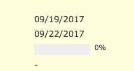 |
| 2017-10-09 15:11:54 | 你 | rd上是9.22 |
| 2017-10-09 15:11:55 | 我 | 这事让王总定吧 |
| 2017-10-09 15:12:02 | 你 | 我给王总说吧 |
| 2017-10-09 15:12:07 | 我 | 嗯嗯 |
| 2017-10-09 15:21:27 | 你 | [链接] 李辉和Yunming的聊天记录 |
| 2017-10-09 15:21:35 | 你 | 看咱们王总多厉害 |
| 2017-10-09 15:22:05 | 我 | 呵呵 |
| 2017-10-09 15:22:13 | 我 | 没办法了 |
| 2017-10-09 15:22:25 | 我 | 那就听王总的安排吧 |
| 2017-10-09 15:22:30 | 你 | 你说他脑子是不是进水啦 |
| 2017-10-09 15:22:48 | 你 | 那是 完不完得成跟我也没关系 |
| 2017-10-09 15:23:22 | 我 | 嗯嗯 |
| 2017-10-09 15:23:27 | 我 | 喝热水了吗 |
| 2017-10-09 15:25:50 | 你 | 没呢 |
| 2017-10-09 15:25:53 | 你 | 现在喝 |
| 2017-10-09 15:28:30 | 我 | 你把聊天记录给张杰看看吧 |
| 2017-10-09 15:28:45 | 你 | 我刚才过去找张杰 跟他说了 |
| 2017-10-09 15:28:50 | 你 | 你看这个高杰多烦人 |
| 2017-10-09 15:29:13 | 你 | 这下怎么办啊 |
| 2017-10-09 15:29:21 | 你 | 我估计这个得换人了 |
| 2017-10-09 15:29:37 | 我 | 没事，让张杰找王总讨论 |
| 2017-10-09 15:30:10 | 我 | 你跟进这个事情，尽量别让高杰插手 |
| 2017-10-09 15:30:39 | 你 | 这事我估计王总也不知道 |
| 2017-10-09 15:30:47 | 你 | 必须咱们给想个解决方案才行啊 |
| 2017-10-09 15:31:42 | 我 | 没啥好办法呀，要不你下来咱俩当面说 |
| 2017-10-09 15:31:50 | 你 | 好 |
| 2017-10-09 15:44:10 | 你 | 你看到张杰拉旭明了 |
| 2017-10-09 15:44:12 | 你 | 开始 |
| 2017-10-09 18:07:46 | 我 | 你好点了吗？还冷吗 |
| 2017-10-09 18:07:56 | 你 | 好多了 |
| 2017-10-09 18:08:03 | 你 | 现在手不那么凉啦 |
| 2017-10-09 18:08:07 | 我 | 嗯嗯 |
| 2017-10-09 18:08:09 | 我 | 几点下班 |
| 2017-10-09 18:08:16 | 你 | 一会就走 |
| 2017-10-09 18:08:31 | 我 | 好的，今天冷，早点回去吧 |
| 2017-10-09 18:08:44 | 你 | 嗯嗯 |
{kind=link}
2017-10-10¶
| 2017-10-10 09:50:04 | 你 | 发的话肯定是9.30送测的这版 9.30发版的那版1440列不是不能用么 |
| 2017-10-10 09:52:17 | 我 | 能用 |
| 2017-10-10 11:31:22 | 你 | 这个刘畅真是无时无刻不想刷存在感啊 |
| 2017-10-10 11:31:40 | 我 | 是呀 |
| 2017-10-10 11:31:54 | 我 | 我差点在群里面说她 |
| 2017-10-10 11:32:05 | 你 | 管她啥事 |
| 2017-10-10 11:33:56 | 我 | 对呀 |
| 2017-10-10 11:34:04 | 我 | 显她 |
| 2017-10-10 11:34:12 | 我 | 你忙完了吗 |
| 2017-10-10 11:34:36 | 你 | 刚把邮件发出去 |
| 2017-10-10 11:34:44 | 你 | 太赶了 |
| 2017-10-10 11:35:02 | 我 | 嗯嗯 |
| 2017-10-10 11:35:17 | 你 | 就是呗 那里边都是大领导 她说什么 也不懂 |
| 2017-10-10 11:36:03 | 你 | 其实吧 15号和今天能有啥大区别 真发现大bug改得了吗 |
| 2017-10-10 11:36:22 | 你 | 要是现在发 测出来还有个说辞 |
| 2017-10-10 11:36:44 | 你 | 不管了 |
| 2017-10-10 11:37:11 | 我 | 别管了。吃饭去 |
| 2017-10-10 11:39:34 | 你 | 嗯 |
| 2017-10-10 13:31:25 | 你 | 在MPP吗 |
| 2017-10-10 13:31:41 | 我 | 是 |
| 2017-10-10 13:40:41 | 你 | IQA的测试case中会不会有剩余35个的demo? |
| 2017-10-10 13:41:02 | 你 | 我看odbc的接口 27个有demo的 35个没有 |
| 2017-10-10 13:41:13 | 我 | 有可能 |
| 2017-10-10 13:41:17 | 你 | 你是让他们评估没有的 自己写的话用多长时间吗 |
| 2017-10-10 13:41:25 | 我 | 是的 |
| 2017-10-10 13:41:26 | 你 | 我没看懂你回复的邮件 |
| 2017-10-10 13:41:30 | 你 | 嗯嗯 |
| 2017-10-10 13:42:46 | 你 | 让测试组的给看一下呗 要是有的话 就不用写了 把季业整理的表发给葛娜 |
| 2017-10-10 13:46:58 | 我 | 先不急 |
| 2017-10-10 13:47:11 | 我 | 等JDBC回来了一起说 |
| 2017-10-10 13:47:19 | 你 | 好 |
| 2017-10-10 13:47:41 | 我 | [链接] 开播没几集就下架的国产良心剧，看到就赚了 |
| 2017-10-10 13:58:25 | 你 | 看完了 |
| 2017-10-10 13:59:22 | 我 | 这个文章没啥，就是这个电视剧的介绍 |
| 2017-10-10 13:59:38 | 你 | 嗯嗯 |
| 2017-10-10 13:59:52 | 你 | 还不错 |
| 2017-10-10 14:00:00 | 我 | 中间关于美女的一段描述是不是似曾相识 |
| 2017-10-10 14:00:02 | 你 | 有时间看看 |
| 2017-10-10 14:01:00 | 你 | 你是说念想吗 |
| 2017-10-10 14:01:08 | 你 | 这个我懂 |
| 2017-10-10 14:02:27 | 你 | 你记得我给你说过 一个著名的画师 要画一棵树 在作画之前 要看那棵树一个月吗 |
| 2017-10-10 14:02:34 | 我 | 记得 |
| 2017-10-10 14:02:43 | 你 | 什么都不做 就是看着 |
| 2017-10-10 14:03:04 | 你 | 说是为了忘掉个人对这棵树的认识 |
| 2017-10-10 14:03:37 | 你 | 用四个字来形容丁元英，颇为恰当，那就是：离经叛道。 |
| 2017-10-10 14:03:54 | 我 | 嗯嗯 |
| 2017-10-10 14:03:55 | 你 | 我觉得这个离经叛道 说的太重了 |
| 2017-10-10 14:04:12 | 我 | 是 |
| 2017-10-10 14:04:35 | 你 | 也可能你们那个年代的 社会包容性不强 |
| 2017-10-10 14:04:38 | 我 | 其实只不过是比普通人多高一层而已 |
| 2017-10-10 14:04:44 | 你 | 是 |
| 2017-10-10 14:04:53 | 你 | 等有时间看看这部电视剧 |
| 2017-10-10 15:16:21 | 你 | GCI代码合并的我帮你整理 邮件给你了 |
| 2017-10-10 15:20:31 | 我 | 好的 |
| 2017-10-10 15:59:30 | 我 | 有空吗，我想和你聊聊版本号的事情 |
| 2017-10-10 15:59:40 | 你 | 可以啊 |
| 2017-10-10 16:15:48 | 你 | 你到底还说不说啊 |
| 2017-10-10 16:15:56 | 我 | 说呀 |
| 2017-10-10 17:23:28 | 你 | 我那个妹妹 |
| 2017-10-10 17:23:33 | 你 | 小三的那个 |
| 2017-10-10 17:23:39 | 我 | 嗯 |
| 2017-10-10 17:23:44 | 你 | 本来说跟那个男的断了 又续上了 |
| 2017-10-10 17:23:53 | 你 | 管不了 怎么说都不听 |
| 2017-10-10 17:25:23 | 我 | 哦 |
| 2017-10-10 17:25:29 | 你 | 不乐意了啊 |
| 2017-10-10 17:25:33 | 我 | 没有 |
| 2017-10-10 17:25:36 | 我 | 才不会呢 |
| 2017-10-10 17:25:41 | 你 | 就是补充到规范里就行 |
| 2017-10-10 17:25:48 | 你 | 是不是啊 |
| 2017-10-10 17:26:00 | 我 | 不是，我是想我们有一个东西能够给王总讲清楚 |
| 2017-10-10 17:26:10 | 我 | 你知道王总本来脑子就很糊涂 |
| 2017-10-10 17:26:22 | 你 | 那就补充到规范里 过规范 |
| 2017-10-10 17:26:30 | 我 | 不行 |
| 2017-10-10 17:26:32 | 你 | 讲的事告诉刘畅得了 |
| 2017-10-10 17:26:38 | 我 | 我来想想怎么办吧 |
| 2017-10-10 17:26:47 | 我 | 我估计最后还得是我去讲 |
| 2017-10-10 17:27:09 | 我 | 你那个妹妹怎么了 |
| 2017-10-10 17:27:11 | 你 | 就这么点小事 |
| 2017-10-10 17:27:16 | 你 | 还得你讲啊 |
| 2017-10-10 17:27:24 | 我 | 我本来是想让你去讲的呀 |
| 2017-10-10 17:27:36 | 我 | 这可不是小事，这个才是产品经理的事情 |
| 2017-10-10 17:27:42 | 你 | 关键我不知道讲啥啊 这就是个结论 |
| 2017-10-10 17:27:51 | 你 | 难道还要讲为什么这么设计么 |
| 2017-10-10 17:27:55 | 我 | 嗯嗯 |
| 2017-10-10 17:28:12 | 我 | 等我和王总讲的时候你听了就明白了 |
| 2017-10-10 17:28:21 | 你 | 那你去讲吧 |
| 2017-10-10 17:28:25 | 你 | 尽快吧 |
| 2017-10-10 17:28:29 | 我 | 明天 |
| 2017-10-10 17:28:35 | 你 | 11月份 他就回美国了 |
| 2017-10-10 17:28:39 | 你 | 明天啊 |
| 2017-10-10 17:28:41 | 你 | 好惊喜 |
| 2017-10-10 17:28:47 | 我 | 开完晨会我喊上刘畅 |
| 2017-10-10 17:28:50 | 你 | 那你讲的时候叫上我 |
| 2017-10-10 17:28:54 | 我 | 肯定的 |
| 2017-10-10 17:29:06 | 你 | 嗯嗯 |
| 2017-10-10 17:29:07 | 你 | 好 |
| 2017-10-10 17:30:12 | 你 | 我本来看书呢 |
| 2017-10-10 17:30:17 | 我 | 嗯嗯 |
| 2017-10-10 17:30:21 | 你 | 结果给你整理GCI那东西去了 |
| 2017-10-10 17:30:29 | 你 | 我给你发的你看懂了吗 |
| 2017-10-10 17:30:35 | 我 | 当然看懂了 |
| 2017-10-10 17:30:44 | 你 | 我觉得你肯定能看懂 |
| 2017-10-10 17:30:47 | 我 | 我不是让老冷去评估了 |
| 2017-10-10 17:30:50 | 你 | 王总就不一定了 |
| 2017-10-10 17:30:59 | 我 | 不用管他了 |
| 2017-10-10 17:31:03 | 你 | 这个不单单是和代码 |
| 2017-10-10 17:31:20 | 你 | 主分支的有些行为和老冷那个分支有冲突 |
| 2017-10-10 17:31:25 | 我 | 嗯嗯，我知道 |
| 2017-10-10 17:31:35 | 你 | 最好是让梁继展和他一起 |
| 2017-10-10 17:31:40 | 你 | 不管了 |
| 2017-10-10 17:31:51 | 你 | 这么细的 到时候让王胜利操心去吧 |
| 2017-10-10 17:31:55 | 我 | 对 |
| 2017-10-10 17:33:16 | 我 | 书你看了多少了 |
| 2017-10-10 17:37:14 | 你 | 一点点 |
| 2017-10-10 17:39:11 | 你 | 这次准备给我什么啊 |
| 2017-10-10 17:39:17 | 你 | pbc |
| 2017-10-10 17:39:23 | 我 | B |
| 2017-10-10 17:39:34 | 你 | 好 |
| 2017-10-10 17:39:39 | 你 | 给谁A |
| 2017-10-10 17:39:43 | 你 | 老毛？ |
| 2017-10-10 17:39:58 | 我 | 王志 |
| 2017-10-10 17:40:07 | 你 | 也就我俩了 |
| 2017-10-10 17:40:19 | 我 | 嗯嗯 |
| 2017-10-10 18:01:01 | 我 | 你几点下班 |
| 2017-10-10 18:01:37 | 你 | 一会就下呗 |
| 2017-10-10 18:01:46 | 我 | 嗯 |
| 2017-10-10 18:17:24 | 你 | 我准备下班了啊 |
| 2017-10-10 18:17:54 | 我 | 啊，这么早你就走呀 |
| 2017-10-10 18:18:03 | 你 | 不早了 |
| 2017-10-10 18:18:07 | 你 | 拜拜 |
| 2017-10-10 18:18:09 | 我 | 好吧 |
2017-10-11¶
| 2017-10-11 10:18:06 | 我 | 我没生气，就是要给高杰看看 |
| 2017-10-11 10:26:02 | 你 | 吓死我了你 |
| 2017-10-11 10:26:17 | 你 | 高杰也躲着你了 |
| 2017-10-11 10:26:31 | 我 | 我就是冲着她去的 |
| 2017-10-11 10:36:17 | 我 | 刚才你去喊高杰她说啥了吗 |
| 2017-10-11 10:36:26 | 你 | 啥也没说 |
| 2017-10-11 10:36:31 | 你 | 急匆匆的就过来了 |
| 2017-10-11 10:36:45 | 你 | 估计她也有点害怕 |
| 2017-10-11 10:37:25 | 我 | 嗯嗯，就得让她怕了，才好推进，否则天天催着研发 |
| 2017-10-11 10:39:03 | 你 | 就是 |
| 2017-10-11 10:53:48 | 你 | 这个张淑锋 还挺爱聊 |
| 2017-10-11 10:54:21 | 你 | 他也说 这是武总让做的 估计咱们响应的在吃点 就得上会了 |
| 2017-10-11 10:54:25 | 我 | 哈哈 |
| 2017-10-11 10:54:37 | 我 | 关键是你太可爱 |
| 2017-10-11 10:54:51 | 你 | 我没说啥啊 |
| 2017-10-11 10:55:23 | 我 | 天生可爱 |
| 2017-10-11 10:56:10 | 你 | [链接] 张淑锋和李辉的聊天记录 |
| 2017-10-11 10:58:33 | 我 | 嗯嗯 |
| 2017-10-11 11:37:08 | 我 | [链接] 王雪松和孙晓亮的聊天记录 |
| 2017-10-11 11:37:30 | 我 | 这是你感兴趣的吗？ |
| 2017-10-11 11:37:38 | 我 | 没啥特别的 |
| 2017-10-11 12:01:35 | 你 | 哈哈 |
| 2017-10-11 13:26:47 | 我 | 你没事了？ |
| 2017-10-11 13:27:05 | 你 | 嗯 |
| 2017-10-11 13:27:13 | 你 | 好像是没事了 |
| 2017-10-11 13:27:20 | 我 | 你还没和我说说“不满”呢 |
| 2017-10-11 13:27:47 | 你 | 这个一说就会很长 |
| 2017-10-11 13:28:07 | 我 | 嗯 |
| 2017-10-11 13:28:16 | 我 | 那就回来找空说吧 |
| 2017-10-11 13:28:18 | 你 | 简单说吧 |
| 2017-10-11 13:28:31 | 我 | 嗯嗯 |
| 2017-10-11 13:28:49 | 你 | 我那天想 克里希那穆提一直说不能有意念 否则就感受不到美 爱啊啥的 |
| 2017-10-11 13:29:09 | 你 | 那要是什么意念也没有 人怎么成长 怎么进步 |
| 2017-10-11 13:29:34 | 你 | 就像胡因梦说的 连入世的基础都没有 人怎么活着 |
| 2017-10-11 13:29:45 | 我 | 嗯 |
| 2017-10-11 13:29:53 | 你 | 后来我看了这一节 |
| 2017-10-11 13:30:07 | 你 | “富有创意的不满” 摘录来自: 电子书免费赠送:行行微信491256034. “人生中不可不想的事”。 iBooks. |
| 2017-10-11 13:30:18 | 你 | 我还是觉得这个翻译不好 |
| 2017-10-11 13:30:28 | 你 | 不满这个词 |
| 2017-10-11 13:30:40 | 你 | 或者说我对『不满』的理解太局限了 |
| 2017-10-11 13:30:51 | 我 | 嗯嗯 |
| 2017-10-11 13:30:53 | 你 | “可是只有从真正的不满之中，才有创新的才能” 摘录来自: 电子书免费赠送:行行微信491256034. “人生中不可不想的事”。 iBooks. |
| 2017-10-11 13:31:24 | 你 | “你明白不满是什么意思吗？了解不满是很困难的事。因为大部分的人把不满导向了某一个特定的方向，因此它被抹杀了” 摘录来自: 电子书免费赠送:行行微信491256034. “人生中不可不想的事”。 iBooks. |
| 2017-10-11 13:32:09 | 你 | 后来我就尝试着理解『不满』 |
| 2017-10-11 13:33:01 | 你 | “人一定要彻底地不满，但是却不抱怨，而是带着欢乐，喜悦和爱。” 摘录来自: 电子书免费赠送:行行微信491256034. “人生中不可不想的事”。 iBooks. |
| 2017-10-11 13:33:29 | 你 | 我理解的这个不满 首先是人先能够清楚认识自己 |
| 2017-10-11 13:33:48 | 你 | 这个清楚认识自己是那种很深很深的 不带有恐惧的 很自由的认识自己 |
| 2017-10-11 13:33:58 | 你 | 也算是接受自己 |
| 2017-10-11 13:34:12 | 我 | 嗯嗯 |
| 2017-10-11 13:34:19 | 你 | 然后在这个前提下 发现的自己有待提升的方面 |
| 2017-10-11 13:34:29 | 你 | 从而发自内心的 想要提升 |
| 2017-10-11 13:34:34 | 我 | 嗯 |
| 2017-10-11 13:35:04 | 你 | 传统意义上的不满是非常狭隘的 跟他说的不满正好相反 |
| 2017-10-11 13:35:13 | 我 | 没错 |
| 2017-10-11 13:35:16 | 你 | 比如我们经常说对要看书 |
| 2017-10-11 13:35:27 | 你 | 看到别人看书 也有想看书的冲动 |
| 2017-10-11 13:35:38 | 你 | 但是看书的时候 往往很痛苦 |
| 2017-10-11 13:35:41 | 你 | 为什么 |
| 2017-10-11 13:35:48 | 你 | 因为并不是真的想看 |
| 2017-10-11 13:36:12 | 你 | 这也算是传统意义的不满 |
| 2017-10-11 13:36:18 | 你 | 和他说的一点不一样 |
| 2017-10-11 13:36:30 | 我 | 嗯 |
| 2017-10-11 13:36:52 | 你 | 只有发自内心的 不带有任何欲望的 看到的不满 才具备创造力 |
| 2017-10-11 13:37:10 | 我 | 是 |
| 2017-10-11 13:37:38 | 你 | “大部分人会不满都是因为我们想要得到些什么，我们希望有更多的知识、更好的汽车、更高的薪水。我们的不满是源自于想得到“更多”的欲望。因为我们想要的太多，所以我们不满足。但是这种不满与方才所说的不满是不同的。那种想得到更多东西的欲望，才会妨碍清明的思考” 摘录来自: 电子书免费赠送:行行微信491256034. “人生中不可不想的事”。 iBooks. |
| 2017-10-11 13:38:11 | 你 | “我们一旦不再盲目接受或跟随，而是不断质问、研究、透视，在其中就会产生洞察力，继而产生创造力和喜悦。” 摘录来自: 电子书免费赠送:行行微信491256034. “人生中不可不想的事”。 iBooks. |
| 2017-10-11 13:38:24 | 你 | 洞察力是很重要的能力 |
| 2017-10-11 13:38:31 | 我 | 对的 |
| 2017-10-11 13:38:52 | 我 | 这段话很重要 |
| 2017-10-11 13:38:59 | 我 | 工作中会经常用到 |
| 2017-10-11 13:39:01 | 你 | 我现在才知道 我以前错的有多离谱 |
| 2017-10-11 13:39:23 | 我 | 谈谈你以前的错吧 |
| 2017-10-11 13:39:36 | 你 | 很简单啊 |
| 2017-10-11 13:39:51 | 你 | 我的思考都是被教育出来的 |
| 2017-10-11 13:40:07 | 你 | 从来不会静下心来 和自己对话 |
| 2017-10-11 13:40:15 | 你 | 问问自己究竟喜欢什么 |
| 2017-10-11 13:40:20 | 你 | 我也有洞察力 |
| 2017-10-11 13:40:28 | 你 | 我观察的是别人喜欢什么 |
| 2017-10-11 13:40:47 | 你 | 然后努力把自己变成别人喜欢的样子 |
| 2017-10-11 13:41:06 | 你 | 以为这个过程才是真正的完善自己 |
| 2017-10-11 13:41:07 | 我 | 没错 |
| 2017-10-11 13:41:32 | 你 | 所以我追求的东西一直在变 |
| 2017-10-11 13:41:38 | 我 | 说实话，恐怕我知道你喜欢什么都比你自己清楚 |
| 2017-10-11 13:41:52 | 你 | 随着我周围的人的变化而变化 |
| 2017-10-11 13:41:54 | 你 | 那你说说 |
| 2017-10-11 13:41:55 | 你 | 哈哈 |
| 2017-10-11 13:42:18 | 我 | 首先你喜欢作为中心，受到关注 |
| 2017-10-11 13:42:26 | 你 | 嗯嗯 |
| 2017-10-11 13:43:01 | 你 | 你知道关键点在哪吗？ |
| 2017-10-11 13:43:15 | 你 | 关键点在于 我是什么样子 其实没有人在意 |
| 2017-10-11 13:43:27 | 你 | 只是我自己觉得别人会在意 |
| 2017-10-11 13:43:32 | 我 | 嗯嗯 |
| 2017-10-11 13:43:41 | 我 | 不过也不全是，我就很在意 |
| 2017-10-11 13:43:46 | 你 | 啊 |
| 2017-10-11 13:44:02 | 我 | 你继续说吧 |
| 2017-10-11 13:44:24 | 你 | 我以前经常想把自己好的一面表现给别人 |
| 2017-10-11 13:44:36 | 你 | 这个大多数人都是这么想的 |
| 2017-10-11 13:44:40 | 你 | 可能 |
| 2017-10-11 13:44:54 | 你 | 但是 如何定义『我的好的一面』呢 |
| 2017-10-11 13:45:06 | 你 | 其实我是定义不出来的 |
| 2017-10-11 13:45:16 | 我 | 嗯嗯 |
| 2017-10-11 13:45:44 | 我 | 所以就变成别人认为的好，然后就去关注别人是怎么看你的 |
| 2017-10-11 13:45:52 | 你 | 对的 |
| 2017-10-11 13:45:57 | 你 | 非常是 |
| 2017-10-11 13:46:04 | 你 | 包括我昨天跟你说的那个妹妹 |
| 2017-10-11 13:46:10 | 我 | 嗯嗯 |
| 2017-10-11 13:46:11 | 你 | 非常典型 |
| 2017-10-11 13:46:15 | 我 | 中国教育的悲哀 |
| 2017-10-11 13:46:19 | 你 | 说实在的 我看着她 都觉得痛苦 |
| 2017-10-11 13:46:30 | 你 | 因为我们从小就被教育成这样子了 |
| 2017-10-11 13:46:36 | 我 | 嗯 |
| 2017-10-11 13:46:51 | 你 | 包括我爸妈 |
| 2017-10-11 13:46:55 | 你 | 都一样 |
| 2017-10-11 13:47:04 | 你 | 都有讨好别人的潜质 |
| 2017-10-11 13:47:16 | 我 | 是的 |
| 2017-10-11 13:47:30 | 你 | 但是这类人其实是很善良的 |
| 2017-10-11 13:47:43 | 我 | 嗯嗯 |
| 2017-10-11 13:48:00 | 你 | 有一点 |
| 2017-10-11 13:48:12 | 你 | 我现在只是知道自己原来错了 |
| 2017-10-11 13:48:22 | 你 | 但是我还是不知道怎么跟自己对话 |
| 2017-10-11 13:48:30 | 你 | 说白就是如何了解自己 |
| 2017-10-11 13:48:42 | 你 | 至少没那么深刻 |
| 2017-10-11 13:48:50 | 我 | 嗯嗯，这个是很难的 |
| 2017-10-11 13:49:09 | 我 | 这个首先需要的是勇气 |
| 2017-10-11 13:49:38 | 我 | 敢于面对自己缺陷的勇气 |
| 2017-10-11 13:50:08 | 你 | 你说 『缺陷』这个词 |
| 2017-10-11 13:50:11 | 你 | 怎么理解呢 |
| 2017-10-11 13:50:28 | 我 | 简单点就是自己不满意的地方 |
| 2017-10-11 13:50:51 | 你 | 恩 |
| 2017-10-11 13:51:01 | 你 | 有些不满意的是先天的 |
| 2017-10-11 13:51:10 | 你 | 有些是后天道德扭曲的 |
| 2017-10-11 13:51:23 | 我 | 其实都是后天的 |
| 2017-10-11 13:51:48 | 我 | 你想想你的小侄女现在会对自己不满意吗 |
| 2017-10-11 13:52:06 | 你 | 那要是这么说 面对自己 其实就是端正认识 |
| 2017-10-11 13:52:17 | 你 | 说得对 |
| 2017-10-11 13:52:30 | 我 | 没错 |
| 2017-10-11 13:52:50 | 我 | 所以要发现这些不满意的根源 |
| 2017-10-11 13:53:10 | 你 | 是 |
| 2017-10-11 13:53:14 | 你 | 是的 |
| 2017-10-11 13:53:41 | 我 | 这就是我们为啥要去追寻的原因 |
| 2017-10-11 13:53:53 | 我 | 这个也是克氏所讲的主题之一 |
| 2017-10-11 13:53:58 | 你 | 恩 |
| 2017-10-11 13:55:50 | 我 | 你接着说 |
| 2017-10-11 13:56:02 | 你 | 说啥 |
| 2017-10-11 13:56:05 | 你 | 我说完了 |
| 2017-10-11 13:56:06 | 你 | 嘻嘻 |
| 2017-10-11 13:56:20 | 我 | 嗯嗯 |
| 2017-10-11 13:56:27 | 你 | 哈哈 |
| 2017-10-11 13:56:32 | 你 | 是不是很失望啊 |
| 2017-10-11 13:56:40 | 我 | 恰恰相反 |
| 2017-10-11 13:57:33 | 我 | 你认识到了最重要的一条，就是以前的你有意无意的是在讨好别人，而这种讨好又是来自于你所经历的教育 |
| 2017-10-11 13:57:54 | 我 | 可以这么说，在这之前，你并不是真正懂得如何让自己快乐 |
| 2017-10-11 13:58:11 | 我 | 你的快乐是建立在你以为的别人对你的认可之上的 |
| 2017-10-11 13:58:12 | 你 | 是 |
| 2017-10-11 13:58:15 | 你 | 是的 |
| 2017-10-11 13:59:04 | 我 | 好多人就是不知道这个，所以就无法改正，也就无法提升了 |
| 2017-10-11 14:00:59 | 我 | 然后就一辈子在痛苦之中 |
| 2017-10-11 14:01:04 | 我 | 还不知道是为啥 |
| 2017-10-11 14:01:13 | 我 | 只能埋怨命不好 |
| 2017-10-11 14:01:29 | 你 | 是呗 |
| 2017-10-11 14:01:38 | 你 | 你知道我那个妹妹 |
| 2017-10-11 14:01:48 | 你 | 她不是对象得病死了吗 |
| 2017-10-11 14:01:56 | 我 | 嗯嗯 |
| 2017-10-11 14:02:10 | 你 | 她就一直说埋怨自己命不好 |
| 2017-10-11 14:02:13 | 你 | 也付出了 |
| 2017-10-11 14:02:17 | 你 | 也经营了 |
| 2017-10-11 14:02:20 | 你 | 痛苦死了 |
| 2017-10-11 14:02:26 | 你 | 怎么说都不听 |
| 2017-10-11 14:02:36 | 我 | 嗯嗯 |
| 2017-10-11 14:02:50 | 我 | 她就是自己没有看明白 |
| 2017-10-11 15:15:16 | 你 | 你怎么总是悄悄的给做暖暖的事呢 |
| 2017-10-11 15:20:39 | 我 | 刚才打电话 |
| 2017-10-11 15:20:48 | 我 | 我又做啥了？ |
| 2017-10-11 15:22:36 | 你 | 让王旭帮忙啊 |
| 2017-10-11 15:23:48 | 我 | 嗯嗯，看你着急，我也着急呀 |
| 2017-10-11 15:24:02 | 你 | 嗯嗯 你忙吧 |
| 2017-10-11 16:18:51 | 你 | 你刚才一拉我手 我感觉一股电流 次儿一下 |
| 2017-10-11 16:19:25 | 我 | 我是看你太紧张了，想让你放心 |
| 2017-10-11 16:19:31 | 你 | 我知道 |
| 2017-10-11 16:19:33 | 我 | 有我在没事的 |
| 2017-10-11 16:19:34 | 你 | 我i知道 |
| 2017-10-11 16:19:42 | 你 | 我觉得我又给你惹事了 |
| 2017-10-11 16:19:47 | 我 | 没有啦 |
| 2017-10-11 16:19:48 | 你 | 最近是不是老是惹事 |
| 2017-10-11 16:19:55 | 我 | 没有啦 |
| 2017-10-11 16:20:13 | 你 | 我先静静 |
| 2017-10-11 16:21:07 | 我 | 你看你今天还说你老是讨好别人，在意别人的看法 |
| 2017-10-11 16:21:27 | 我 | 你现在担心惹事也是同样的原因 |
| 2017-10-11 16:21:29 | 你 | 我跟你说这些 是觉得自责 |
| 2017-10-11 16:21:56 | 我 | 对呀，就是因为你在意我所以你才自责 |
| 2017-10-11 16:22:33 | 我 | 这个事情现在这个样子其实和你没有关系呀 |
| 2017-10-11 16:22:58 | 我 | 这件事情的本质原因还是咱们技不如人 |
| 2017-10-11 16:23:38 | 你 | [链接] 李辉和张淑锋的聊天记录 |
| 2017-10-11 16:23:47 | 我 | 不管你和张淑峰说什么都改变不了这个本质原因 |
| 2017-10-11 16:24:17 | 你 | 张淑锋那边也不懂 双方都不知道哪出了问题 |
| 2017-10-11 16:24:28 | 你 | 他们水平也不高 |
| 2017-10-11 16:24:36 | 你 | 我的意思是让技术支持的给安装下 |
| 2017-10-11 16:24:46 | 你 | 但是张淑锋肯定是不乐意 |
| 2017-10-11 16:24:59 | 你 | 他也不好意思使唤技术支持的 |
| 2017-10-11 16:25:05 | 我 | 别让他找了。 |
| 2017-10-11 16:25:15 | 我 | 不行我去找刘辉 |
| 2017-10-11 16:25:20 | 我 | 这样更快 |
| 2017-10-11 16:25:33 | 你 | 嗯嗯 他不是说不找嘛 |
| 2017-10-11 16:25:36 | 你 | 说自己看文档 |
| 2017-10-11 16:25:48 | 你 | 哎呀 这事怎么折腾这么大 |
| 2017-10-11 16:26:06 | 我 | 亲，你先别管这件事情。 |
| 2017-10-11 16:26:41 | 我 | 你先静静，先内省一下自己 |
| 2017-10-11 16:26:45 | 你 | 嗯嗯 |
| 2017-10-11 16:26:55 | 我 | 你就会发现这事和你没有关系 |
| 2017-10-11 16:27:34 | 我 | 本身这件事情的难度就在这，目前的情况是必然的，是我们避不开的 |
| 2017-10-11 16:27:56 | 我 | 能看清这个你的境界就提升了 |
| 2017-10-11 16:28:05 | 我 | 就少了很多痛苦 |
| 2017-10-11 16:28:17 | 你 | 嗯嗯 |
| 2017-10-11 16:28:21 | 你 | 我先自己静静 |
| 2017-10-11 16:28:47 | 我 | 这件事情有我，我现在担心的是你 |
| 2017-10-11 16:29:37 | 你 | 恩 |
| 2017-10-11 16:46:19 | 你 | 怎么失败了啊 |
| 2017-10-11 16:46:38 | 我 | 不知道 |
| 2017-10-11 16:47:16 | 我 | 咱们自己装也失败了 |
| 2017-10-11 16:48:04 | 你 | 失败了？？是什么意思啊 |
| 2017-10-11 16:48:11 | 你 | 等着吧 |
| 2017-10-11 17:59:14 | 你 | 你怎么样？ |
| 2017-10-11 18:14:27 | 你 | 我下班了啊 别回我了 |
2017-10-12¶
| 2017-10-12 08:22:31 | 你 | 今天晚了 |
| 2017-10-12 08:22:44 | 我 | 嗯，没事 |
| 2017-10-12 08:23:25 | 你 | 昨天没睡好，早上没起来 |
| 2017-10-12 08:24:02 | 我 | 唉，我昨天睡的也不好。 |
| 2017-10-12 08:24:08 | 我 | 不着急 |
| 2017-10-12 08:24:31 | 你 | 本来昨天想跑步问你昨天怎么样的 |
| 2017-10-12 08:24:45 | 你 | 结果跟东东吵起来了 |
| 2017-10-12 08:24:52 | 我 | 啊 |
| 2017-10-12 08:25:01 | 我 | 为啥吵呀 |
| 2017-10-12 08:26:10 | 你 | 回头说吧，我不想说 |
| 2017-10-12 08:26:15 | 你 | 你们怎么样了 |
| 2017-10-12 08:26:33 | 你 | 大崔说啥了 |
| 2017-10-12 08:26:47 | 我 | 被骂惨了，要我一个月再写一个 PPT 给他 |
| 2017-10-12 08:27:01 | 我 | 说我的 PPT 写的太烂 |
| 2017-10-12 08:27:07 | 你 | 是课题那事吗 |
| 2017-10-12 08:27:10 | 我 | 是 |
| 2017-10-12 08:27:13 | 你 | 哪个ppt |
| 2017-10-12 08:27:20 | 你 | 哪个不是你写的啊 |
| 2017-10-12 08:28:04 | 我 | 这就不能和大崔说了，因为是我去讲，怎么最后都会落在我头上的 |
| 2017-10-12 08:28:15 | 你 | 哎呀 |
| 2017-10-12 08:28:40 | 你 | 他有没有执导你啥的 |
| 2017-10-12 08:28:47 | 你 | 就让重写啊 |
| 2017-10-12 08:28:59 | 我 | 说了一些原则性的东西 |
| 2017-10-12 08:29:07 | 我 | 让我去看金字塔 |
| 2017-10-12 08:29:18 | 你 | 你什么感受 |
| 2017-10-12 08:29:40 | 我 | 被吓着了 |
| 2017-10-12 08:29:48 | 你 | 哎呀 |
| 2017-10-12 08:30:10 | 你 | 他就那个脾气 |
| 2017-10-12 08:30:19 | 你 | 为啥叫王总啊 |
| 2017-10-12 08:30:21 | 我 | 昨天回来以后我手一直抖，说话都是抖的 |
| 2017-10-12 08:30:31 | 你 | 他有没有幸灾乐祸啊 |
| 2017-10-12 08:30:47 | 你 | 嗯，我知道他感觉 |
| 2017-10-12 08:30:54 | 我 | 岂止幸灾乐祸 |
| 2017-10-12 08:31:04 | 我 | 简直是在帮倒忙 |
| 2017-10-12 08:32:22 | 我 | 告诉你个好消息吧，张树峰的事情找到原因了 |
| 2017-10-12 08:32:35 | 我 | 今天他们验证一下 |
| 2017-10-12 08:33:09 | 你 | 真的啊，太好了 |
| 2017-10-12 08:33:28 | 我 | 最快周五应该可以给个版本 |
| 2017-10-12 08:33:39 | 你 | 装上了吗 |
| 2017-10-12 08:33:56 | 你 | 课题的事，是还有机会ma |
| 2017-10-12 08:34:09 | 我 | 没有，昨天他们跟踪错误信息，发现错误的原因了 |
| 2017-10-12 08:34:22 | 我 | 这次课题没有机会了 |
| 2017-10-12 08:34:26 | 你 | 嗯嗯，再看看 |
| 2017-10-12 08:34:41 | 你 | 那还写ppt干嘛 |
| 2017-10-12 08:34:54 | 我 | 大崔看呀 |
| 2017-10-12 08:35:53 | 你 | 嗯嗯，这下大崔可认识你了，也不一定是坏事 |
| 2017-10-12 08:36:02 | 你 | 你平时太低调了 |
| 2017-10-12 08:36:12 | 我 | 😁，他早就知道我 |
| 2017-10-12 08:36:30 | 我 | 不管他了，先写一个 PPT |
| 2017-10-12 08:36:34 | 你 | 嘻嘻 |
| 2017-10-12 08:36:42 | 我 | 大不了再被他骂 |
| 2017-10-12 08:36:59 | 你 | 骂你说明你还有机会 |
| 2017-10-12 08:37:07 | 我 | 是 |
| 2017-10-12 08:59:35 | 你 | 开会了 |
| 2017-10-12 08:59:37 | 你 | 人呢 |
| 2017-10-12 09:17:10 | 你 | 待会你问下高杰五期的详细计划出来了没有 |
| 2017-10-12 09:17:35 | 我 | OK |
| 2017-10-12 09:18:45 | 你 | 还有主板本的 |
| 2017-10-12 10:09:30 | 你 | 你那个PPT有时间要求吗 |
| 2017-10-12 10:09:35 | 我 | 一个月 |
| 2017-10-12 10:09:38 | 你 | 你写完给我 我帮你看看 |
| 2017-10-12 10:09:42 | 我 | 嗯嗯 |
| 2017-10-12 10:10:00 | 你 | 不一定看出啥来哈 但多个人看总会好点 |
| 2017-10-12 10:10:05 | 我 | 嗯 |
| 2017-10-12 10:10:08 | 我 | 谢谢 |
| 2017-10-12 10:10:16 | 你 | 那不给看了 |
| 2017-10-12 10:10:21 | 你 | 这么客气 |
| 2017-10-12 10:10:28 | 我 | 😁 |
| 2017-10-12 10:58:15 | 我 | 忙啥呢 |
| 2017-10-12 10:58:27 | 你 | 跟李杰聊天呢 |
| 2017-10-12 10:58:34 | 我 | 嗯嗯，你们聊吧 |
| 2017-10-12 10:58:37 | 你 | 我看你挺忙的 |
| 2017-10-12 11:26:11 | 你 | 告诉他已经发版了 |
| 2017-10-12 11:26:41 | 我 | 恩 |
| 2017-10-12 11:31:54 | 我 | 他现在这个问题是新版还是老版 |
| 2017-10-12 12:22:17 | 你 | 新版老版？ |
| 2017-10-12 13:34:02 | 你 | 你忙啥呢 跑来跑去的 |
| 2017-10-12 13:34:14 | 我 | 4k 的事情 |
| 2017-10-12 13:34:22 | 我 | 进展不好 |
| 2017-10-12 13:34:34 | 你 | 我中午问了一句 没事 |
| 2017-10-12 13:34:39 | 我 | 你睡着了吗，是不是我吵到你了 |
| 2017-10-12 13:34:42 | 你 | 做吧 不行就推了 |
| 2017-10-12 13:34:48 | 你 | 没有 |
| 2017-10-12 13:34:52 | 你 | 我睡着了 |
| 2017-10-12 13:35:30 | 我 | 嗯嗯 |
| 2017-10-12 15:22:40 | 你 | 我说你好点了吗 |
| 2017-10-12 15:22:52 | 我 | 嗯嗯，好多了 |
| 2017-10-12 15:23:01 | 我 | 和你说说话就好了很多 |
| 2017-10-12 15:23:05 | 你 | 哈哈 |
| 2017-10-12 15:23:08 | 你 | 我看也是 |
| 2017-10-12 15:23:17 | 你 | 我心情也好点了 |
| 2017-10-12 15:23:20 | 你 | 好多了 |
| 2017-10-12 15:23:23 | 你 | 你知道为啥吗 |
| 2017-10-12 15:23:27 | 我 | 为啥？ |
| 2017-10-12 15:23:31 | 你 | 不能告诉你 |
| 2017-10-12 15:23:33 | 你 | 哈哈 |
| 2017-10-12 15:23:38 | 我 | 因为训了文档？ |
| 2017-10-12 15:23:42 | 你 | 才不是呢 |
| 2017-10-12 15:23:48 | 你 | 我根本没有训他 |
| 2017-10-12 15:23:56 | 你 | 上次是真训了 |
| 2017-10-12 15:26:18 | 我 | 嗯嗯 |
| 2017-10-12 15:29:08 | 我 | 聊会天吧 |
| 2017-10-12 15:29:29 | 我 | 晚上你能晚点走吗？好想和你聊。 |
| 2017-10-12 15:29:35 | 我 | 你明天又要去打球了 |
| 2017-10-12 15:29:39 | 你 | 我今天搭车来的 |
| 2017-10-12 15:29:46 | 你 | 明天不一定打球 |
| 2017-10-12 15:29:54 | 我 | 哦 |
| 2017-10-12 15:30:00 | 你 | 杨总到现在还没回复我 他要是不去我可能也不去了 |
| 2017-10-12 15:30:07 | 你 | 换场地了 那个地我也没去过 |
| 2017-10-12 15:30:10 | 你 | 不想开车去 |
| 2017-10-12 15:30:14 | 我 | 嗯嗯 |
| 2017-10-12 15:30:45 | 你 | 那怎么聊啊 |
| 2017-10-12 15:30:50 | 我 | 不知道 |
| 2017-10-12 15:31:06 | 我 | 我关心的又不敢说 |
| 2017-10-12 15:31:12 | 你 | 啥？ |
| 2017-10-12 15:31:17 | 你 | 什么不敢说 |
| 2017-10-12 15:31:25 | 我 | 说说李杰吧 |
| 2017-10-12 15:31:34 | 我 | 你是不是把这几本书都给她了 |
| 2017-10-12 15:31:37 | 你 | 说说昨天大崔吧 |
| 2017-10-12 15:31:41 | 你 | 他没时间看书 |
| 2017-10-12 15:31:49 | 你 | 我昨天可担心你了 |
| 2017-10-12 15:31:54 | 我 | 嗯嗯，我知道 |
| 2017-10-12 15:32:30 | 我 | 昨天一开始大崔就让我复原现场 |
| 2017-10-12 15:32:42 | 我 | 问我评委提了几个问题，我是怎么回答的 |
| 2017-10-12 15:32:43 | 你 | 大崔认识你是吧 |
| 2017-10-12 15:32:47 | 我 | 认识我 |
| 2017-10-12 15:32:48 | 你 | 嗯嗯 |
| 2017-10-12 15:32:51 | 你 | 然后呢 |
| 2017-10-12 15:33:20 | 我 | 我说完了以后，他就说我的回答太保守，不是一个做课题的 |
| 2017-10-12 15:33:31 | 我 | 像是去汇报进度的 |
| 2017-10-12 15:33:35 | 你 | 等会 |
| 2017-10-12 15:33:41 | 你 | 你先跟我说下整体感受 |
| 2017-10-12 15:33:48 | 你 | 然后再说细节好不好 |
| 2017-10-12 15:33:58 | 你 | 昨天开会的整体感受 |
| 2017-10-12 15:34:04 | 我 | 整体感受就是怕 |
| 2017-10-12 15:34:18 | 我 | 从开始一直到最后神经都高度紧张 |
| 2017-10-12 15:34:30 | 我 | 绷得紧紧的 |
| 2017-10-12 15:34:37 | 你 | 大崔是那种气场特别强的 |
| 2017-10-12 15:34:44 | 我 | 是 |
| 2017-10-12 15:34:50 | 你 | 那说说参会的这几个人 |
| 2017-10-12 15:35:00 | 你 | 大家应该都是有点怕吧 |
| 2017-10-12 15:35:05 | 我 | 是 |
| 2017-10-12 15:35:21 | 我 | 王总 老陈 王军都是不敢喘大气 |
| 2017-10-12 15:35:43 | 我 | 他们几个都还好，属于陪绑的 |
| 2017-10-12 15:35:49 | 你 | 嗯嗯 |
| 2017-10-12 15:36:24 | 我 | 你应该知道类似的场景 |
| 2017-10-12 15:36:34 | 我 | 我或者老杨发火的时候 |
| 2017-10-12 15:36:39 | 我 | 很类似 |
| 2017-10-12 15:36:43 | 你 | 哦哦 |
| 2017-10-12 15:36:45 | 你 | 是 |
| 2017-10-12 15:37:26 | 我 | 其实昨天重点就是说我的 PPT |
| 2017-10-12 15:37:40 | 我 | 反过来倒过去的说 |
| 2017-10-12 15:37:41 | 你 | 别的废话没说啥是吧 |
| 2017-10-12 15:37:52 | 你 | 定性的话 埋怨的话啥的 |
| 2017-10-12 15:37:57 | 我 | 😁，废话太多了 |
| 2017-10-12 15:38:14 | 你 | 啊 |
| 2017-10-12 15:38:19 | 我 | 定性的话也有，比如说我写东西不行 |
| 2017-10-12 15:38:26 | 你 | 啊 |
| 2017-10-12 15:38:29 | 我 | 干事太保守什么的 |
| 2017-10-12 15:38:35 | 你 | 王军心里清楚 这话说的是谁 |
| 2017-10-12 15:38:39 | 你 | 反正也不是你写的 |
| 2017-10-12 15:38:49 | 你 | 太保守指什么 |
| 2017-10-12 15:38:52 | 你 | 太实在 |
| 2017-10-12 15:38:55 | 我 | 是 |
| 2017-10-12 15:39:03 | 你 | 研发的本来就是比较严谨的 |
| 2017-10-12 15:39:06 | 我 | 觉得我不够冲 |
| 2017-10-12 15:39:09 | 你 | 你继续说 |
| 2017-10-12 15:39:12 | 我 | 胆子小 |
| 2017-10-12 15:39:14 | 你 | 哈哈 |
| 2017-10-12 15:39:16 | 你 | 哈哈 |
| 2017-10-12 15:39:21 | 我 | 不是那种做大事的人 |
| 2017-10-12 15:39:23 | 你 | 谁能跟他比啊 |
| 2017-10-12 15:39:25 | 你 | 啊 |
| 2017-10-12 15:39:29 | 你 | 可不嘛 |
| 2017-10-12 15:39:39 | 你 | 我们连个部门经理都不是 |
| 2017-10-12 15:39:46 | 你 | 能跟他比么 |
| 2017-10-12 15:39:50 | 你 | 你也别往心里去 |
| 2017-10-12 15:39:54 | 我 | 我没有 |
| 2017-10-12 15:39:59 | 你 | 各有专攻 |
| 2017-10-12 15:40:26 | 我 | 单子丢了，怎么也得让大崔把这火发出来 |
| 2017-10-12 15:40:32 | 你 | 是 |
| 2017-10-12 15:40:46 | 我 | 哪怕他就是想装装样子 |
| 2017-10-12 15:41:06 | 我 | 总不能乐呵呵的说我们丢了没事吧 |
| 2017-10-12 15:41:12 | 你 | 哈哈 |
| 2017-10-12 15:41:15 | 你 | 那肯定的哈 |
| 2017-10-12 15:41:32 | 我 | 我还是有心理准备的 |
| 2017-10-12 15:41:36 | 你 | 是 |
| 2017-10-12 15:41:41 | 你 | 我都有 何况你 |
| 2017-10-12 15:41:42 | 我 | 只是当时确实太紧张了 |
| 2017-10-12 15:41:54 | 你 | 你看王军 当时叫你的时候那吓的样 |
| 2017-10-12 15:41:55 | 你 | 哈哈 |
| 2017-10-12 15:41:59 | 我 | 嗯嗯 |
| 2017-10-12 15:42:33 | 你 | 大崔为什么让你改PPT |
| 2017-10-12 15:42:48 | 我 | 估计是想再给我一次机会吧 |
| 2017-10-12 15:43:04 | 你 | 不是课题不做了吗 |
| 2017-10-12 15:43:08 | 你 | 比较好奇 |
| 2017-10-12 15:43:15 | 你 | 估计是想给你拔高 |
| 2017-10-12 15:43:21 | 我 | 不一定 |
| 2017-10-12 15:43:25 | 你 | 那是啥 |
| 2017-10-12 15:43:41 | 我 | 举个例子 |
| 2017-10-12 15:44:02 | 我 | 你的需求没写好，那么我会要求你重写 |
| 2017-10-12 15:44:09 | 你 | 恩 |
| 2017-10-12 15:44:26 | 我 | 虽然现在没有课题了，对于大崔来说，也就是重写 |
| 2017-10-12 15:44:45 | 我 | 大崔本身不会限制在这个课题上 |
| 2017-10-12 15:45:15 | 我 | 我和王军可能会关注这个课题，大崔绝对不会 |
| 2017-10-12 15:45:24 | 你 | 哦 |
| 2017-10-12 15:45:29 | 你 | 那他关注啥啊 |
| 2017-10-12 15:45:31 | 你 | 下一次？ |
| 2017-10-12 15:45:43 | 我 | 可以这么说 |
| 2017-10-12 15:46:09 | 我 | 或者说就是想让这个 PPT 能达到他想要的效果 |
| 2017-10-12 15:46:30 | 我 | 这种做法他以前也有过 |
| 2017-10-12 15:46:32 | 你 | 恩 |
| 2017-10-12 15:46:35 | 你 | 好吧 |
| 2017-10-12 15:46:46 | 我 | 老陈就经常被批 |
| 2017-10-12 15:47:12 | 你 | 恩 |
| 2017-10-12 15:47:41 | 我 | 其实要不是他让我再写 PPT，我倒是没啥心理压力 |
| 2017-10-12 15:48:53 | 你 | 那就写吧 |
| 2017-10-12 15:48:56 | 你 | 没办法了 |
| 2017-10-12 15:48:59 | 我 | 是 |
| 2017-10-12 16:16:01 | 我 | 我爱哭的时候便哭，想笑的时候便笑，只要这一切出于自然。我不求深刻，只求简单。 ——三毛《流星雨》 |
| 2017-10-12 16:16:18 | 你 | 哈哈 |
| 2017-10-12 16:16:28 | 你 | 这才是拳拳赤子心 |
| 2017-10-12 16:16:35 | 我 | 嗯嗯 |
| 2017-10-12 16:51:17 | 我 | 没有别的需求了吗 |
| 2017-10-12 16:51:28 | 你 | 没了啊 |
| 2017-10-12 16:51:30 | 你 | 还有啥 |
| 2017-10-12 16:51:36 | 我 | 那就先等几天 |
| 2017-10-12 16:51:40 | 你 | 都写完了 |
| 2017-10-12 16:51:55 | 我 | 我觉得没啥事情 |
| 2017-10-12 16:52:07 | 你 | 你说我没事干这事吗 |
| 2017-10-12 16:52:15 | 我 | oracle 这事你别让高杰知道，否则他就找你要计划了 |
| 2017-10-12 16:52:21 | 我 | 嗯嗯 |
| 2017-10-12 16:52:24 | 你 | 我没跟他说 |
| 2017-10-12 16:52:35 | 你 | 上次王总跟我问怎么样了 |
| 2017-10-12 16:52:45 | 你 | 我说没忘 |
| 2017-10-12 16:52:58 | 你 | 我怕他哪天又跟我问 |
| 2017-10-12 16:53:03 | 我 | 我觉得你可以这样，先写一个比较粗的 |
| 2017-10-12 17:05:01 | 你 | 我跟你说这些应该没事吧 |
| 2017-10-12 17:05:11 | 我 | 没事 |
| 2017-10-12 17:11:10 | 我 | 聊天吧，我快无聊死了 |
| 2017-10-12 17:11:34 | 我 | 说点烧脑的，好让我能忘了烦恼 |
| 2017-10-12 17:11:53 | 你 | 没有烧脑的啊 |
| 2017-10-12 17:12:08 | 我 | 那就说说别人的事情吧 |
| 2017-10-12 17:12:13 | 你 | 比如 |
| 2017-10-12 17:12:16 | 你 | 李杰吗 |
| 2017-10-12 17:12:17 | 我 | 或者我们分析一个人把手 |
| 2017-10-12 17:12:22 | 你 | ？ |
| 2017-10-12 17:12:25 | 你 | 什么意思 |
| 2017-10-12 17:12:37 | 我 | 随便找个人，咱俩分析着玩 |
| 2017-10-12 17:17:21 | 你 | 稍等 |
| 2017-10-12 17:30:45 | 你 | 你说这个高杰 整天在 |
| 2017-10-12 17:30:52 | 你 | 哪天消失了多好 |
| 2017-10-12 17:30:59 | 我 | 哈哈，我也这么想 |
| 2017-10-12 17:36:12 | 我 | 你太坏了 |
| 2017-10-12 17:36:17 | 你 | 我咋了 |
| 2017-10-12 17:36:28 | 你 | 我这个位置看不到高杰在不在 |
| 2017-10-12 17:36:35 | 我 | 嗯 |
| 2017-10-12 17:36:41 | 你 | 真烦人 |
| 2017-10-12 17:36:51 | 我 | 嗯嗯 |
2017-10-13¶
| 2017-10-13 11:08:37 | 你 | 王总那个邮件 你也别太为难 他就是在我们说的过程中发现问题了 想让你给他说说 |
| 2017-10-13 11:08:42 | 你 | 他经常这样 |
| 2017-10-13 11:09:05 | 你 | 我跟他抱怨的时候 他就老是当场许诺 XXX 后来也没见他有啥动作 |
| 2017-10-13 11:09:12 | 我 | 我知道，不为难 |
| 2017-10-13 11:10:31 | 你 | 好 |
| 2017-10-13 11:11:42 | 我 | 看了你的朋友圈，好想给你点个赞 |
| 2017-10-13 11:11:56 | 你 | 那你就点呗 |
| 2017-10-13 11:12:02 | 你 | 为啥不点 |
| 2017-10-13 11:12:22 | 我 | 不点了，万一东东看你的手机就不好了 |
| 2017-10-13 11:12:37 | 你 | 嗯嗯 |
| 2017-10-13 11:12:45 | 你 | 别点了 |
| 2017-10-13 11:12:51 | 你 | 还是留着你的神秘把 |
| 2017-10-13 11:12:58 | 我 | 😄 |
| 2017-10-13 11:13:00 | 你 | 我姑姑家姐问我是不是有了 |
| 2017-10-13 11:13:02 | 你 | 真晕 |
| 2017-10-13 11:13:20 | 我 | 啊，为啥这样问你呀 |
| 2017-10-13 11:13:41 | 你 | 她就是随便问的 |
| 2017-10-13 11:13:53 | 你 | 我这不是说了了大事了么 |
| 2017-10-13 11:14:02 | 我 | 嗯 |
| 2017-10-13 11:15:22 | 你 | 你看看这个刘畅 |
| 2017-10-13 11:15:27 | 你 | 我真是晕菜 |
| 2017-10-13 11:16:02 | 我 | 正常，她就是这样的。 |
| 2017-10-13 11:16:19 | 你 | 感觉今天沟通的挺好的 |
| 2017-10-13 11:16:24 | 你 | 说的也比较透 |
| 2017-10-13 11:16:26 | 我 | 嗯嗯 |
| 2017-10-13 11:16:40 | 我 | 毕竟咱们做了很多工作 |
| 2017-10-13 11:16:45 | 你 | 可能也是版本号这个东西 门槛低 王总听进去了 |
| 2017-10-13 11:16:47 | 你 | 嗯嗯 |
| 2017-10-13 11:17:43 | 我 | 你今天打球吗 |
| 2017-10-13 11:18:03 | 你 | 不打 |
| 2017-10-13 11:18:39 | 我 | 好 |
| 2017-10-13 11:20:11 | 你 | 今天刘畅说都准备好了 那会 他会不会生气啊 没提前跟她说 |
| 2017-10-13 11:20:29 | 你 | 无所谓了 不用care他 |
| 2017-10-13 11:20:42 | 我 | 对呀，不用管她 |
| 2017-10-13 11:20:50 | 我 | 她肯定会有想法 |
| 2017-10-13 11:21:09 | 你 | 不管她 |
| 2017-10-13 11:21:22 | 你 | 这本来就是她的活 她不干的 |
| 2017-10-13 11:21:33 | 你 | 管版本号这么久了 还这么管 |
| 2017-10-13 11:26:34 | 我 | 她没这能力 |
| 2017-10-13 11:30:38 | 我 | 吃饭去吧，一上午也就干了版本号一件事 |
| 2017-10-13 13:32:14 | 你 | 你干啥呢 撅着嘴 |
| 2017-10-13 13:32:42 | 你 | 干啥呢 干啥呢 干啥呢 |
| 2017-10-13 13:33:01 | 我 | 看邮件，待会转给你看 |
| 2017-10-13 13:33:13 | 你 | 咋了 真有事啊 |
| 2017-10-13 13:33:23 | 你 | 咋回事？ |
| 2017-10-13 13:33:55 | 我 | 唉，当初被骗入坑 |
| 2017-10-13 13:34:05 | 你 | 啊！！！怎么了 |
| 2017-10-13 13:34:17 | 我 | 现在收债的来了[流泪] |
| 2017-10-13 13:35:02 | 我 | 当初有一个项目崔佳喜让老杨去，老杨就让我去了，我以为就是去答辩，也没在意 |
| 2017-10-13 13:35:19 | 我 | 现在人家要结项的东西了[大哭] |
| 2017-10-13 13:35:26 | 你 | 那怎么办啊 |
| 2017-10-13 13:35:31 | 你 | 这不是开玩笑嘛 |
| 2017-10-13 13:35:46 | 我 | 唉，只能硬着头皮办了 |
| 2017-10-13 13:36:45 | 我 | 屋漏偏逢连夜雨，最近这些事情都赶一起了 |
| 2017-10-13 13:36:51 | 你 | 是呢 |
| 2017-10-13 13:36:56 | 你 | 最近咋回事 |
| 2017-10-13 13:37:20 | 我 | 唉，估计就是我的运道开始变了 |
| 2017-10-13 13:37:28 | 你 | 哈哈 |
| 2017-10-13 13:37:51 | 我 | 你看了晓亮的邮件了吗 |
| 2017-10-13 13:37:58 | 你 | 看了 |
| 2017-10-13 13:38:03 | 你 | RTsync的 |
| 2017-10-13 13:38:11 | 我 | 国网也要 DDL 同步了 |
| 2017-10-13 13:38:23 | 我 | 这下有点麻烦了 |
| 2017-10-13 13:38:34 | 我 | PICC 刚刚停了 |
| 2017-10-13 13:39:02 | 你 | 是 |
| 2017-10-13 13:39:18 | 你 | 我竟然没看出来 |
| 2017-10-13 13:43:22 | 你 | 你干啥去了 |
| 2017-10-13 14:03:16 | 我 | 关于ddl这件事情，待会你看王总有空你就去和王总提一下，让他看一下邮件 |
| 2017-10-13 14:03:40 | 我 | 今天上午王总已经表现出对你很欣赏了 |
| 2017-10-13 14:04:00 | 我 | 你去说这事正好 |
| 2017-10-13 14:05:02 | 你 | 他不是对我欣赏 他一直这么对我 |
| 2017-10-13 14:05:17 | 我 | 😄 |
| 2017-10-13 14:09:10 | 你 | 刘世阳找你来了 |
| 2017-10-13 14:09:34 | 我 | 哦，待会吧，我现在有事 |
| 2017-10-13 14:11:36 | 你 | [链接] 李辉和张淑锋的聊天记录 |
| 2017-10-13 14:12:24 | 我 | 嗯嗯 |
| 2017-10-13 14:13:23 | 你 | [链接] 张淑锋和李辉的聊天记录 |
| 2017-10-13 14:14:16 | 我 | 他说的也是一招，你去问问王旭行不行 |
| 2017-10-13 14:14:22 | 你 | 嗯嗯 |
| 2017-10-13 14:14:53 | 你 | [链接] 李辉和孙晓亮的聊天记录 |
| 2017-10-13 14:15:18 | 我 | 嗯 |
| 2017-10-13 14:18:22 | 你 | [链接] 张淑锋和李辉的聊天记录 |
| 2017-10-13 14:18:29 | 你 | 你一走就有事 |
| 2017-10-13 14:22:26 | 我 | 唉，命苦呀 |
| 2017-10-13 15:28:43 | 你 | [链接] 张淑锋和李辉的聊天记录 |
| 2017-10-13 15:29:09 | 我 | 哈哈 |
| 2017-10-13 15:29:18 | 你 | 顺便给你打打广告 |
| 2017-10-13 15:29:23 | 我 | 嗯嗯 |
| 2017-10-13 15:29:24 | 你 | 你太低调了 |
| 2017-10-13 15:29:41 | 你 | 可是我把记录转手发给张淑锋了 赶紧撤回了 |
| 2017-10-13 15:29:45 | 你 | 吓死我 |
| 2017-10-13 15:29:53 | 我 | 哈哈 |
| 2017-10-13 15:31:57 | 你 | |
| 2017-10-13 15:32:21 | 我 | ？ |
| 2017-10-13 15:32:30 | 我 | 这是什么？ |
| 2017-10-13 15:32:59 | 你 | 张淑锋说的 我们数据库的设计不能跟硬件与时俱进 |
| 2017-10-13 15:33:10 | 我 | 是，刚才我不也和你说了吗 |
| 2017-10-13 15:33:19 | 我 | 咱们还是上个世纪的架构呢 |
| 2017-10-13 15:33:26 | 你 | [链接] 张淑锋和李辉的聊天记录 |
| 2017-10-13 15:33:40 | 我 | 嗯嗯 |
| 2017-10-13 15:34:49 | 你 | 这个张淑锋 真的很爱聊 |
| 2017-10-13 15:35:02 | 你 | 他一直说 我也没办法不理他 |
| 2017-10-13 15:35:10 | 我 | 哈哈，没想到你们能聊一起 |
| 2017-10-13 15:35:24 | 你 | 是呢 |
| 2017-10-13 15:35:28 | 你 | 我也没想到 |
| 2017-10-13 15:35:34 | 我 | 聊聊挺好 |
| 2017-10-13 16:31:51 | 我 | 咋了，怎么叹气呀 |
| 2017-10-13 16:32:31 | 你 | 没事 |
| 2017-10-13 16:33:11 | 我 | 哦，和张淑锋聊得怎么样 |
| 2017-10-13 16:33:28 | 你 | 我不搭理他了 他老说8t不好 |
| 2017-10-13 16:33:35 | 我 | 哈哈 |
| 2017-10-13 16:33:36 | 你 | 说的我心烦 |
| 2017-10-13 16:34:00 | 我 | 其实你应该问问他为啥不好，正好学点东西 |
| 2017-10-13 16:34:13 | 我 | 他的见解还是不错的 |
| 2017-10-13 16:34:17 | 你 | 他一直说个没完 |
| 2017-10-13 16:34:24 | 你 | 我知道他说的对的 所以我才心烦 |
| 2017-10-13 16:34:32 | 你 | 觉得自己老是玩别人剩下的 |
| 2017-10-13 16:34:41 | 我 | 哈哈 |
| 2017-10-13 16:34:48 | 我 | 这就是你自己陷进去了 |
| 2017-10-13 16:34:54 | 你 | 他说了特别多 |
| 2017-10-13 16:35:08 | 你 | 你直接看我手机吧 |
| 2017-10-13 16:35:13 | 你 | 我懒得给你转了 |
| 2017-10-13 16:35:17 | 我 | 嗯嗯，晚上再说 |
| 2017-10-13 16:52:31 | 我 | 和你说说八卦吧，省得占晚上的时间 |
| 2017-10-13 16:53:01 | 我 | 今天王总和我谈 PBC 的时候问我给王志 A 是不是合理 |
| 2017-10-13 16:53:17 | 你 | 好 |
| 2017-10-13 16:53:21 | 我 | 问王志和老毛比怎么样 |
| 2017-10-13 16:53:35 | 你 | 你怎么说 |
| 2017-10-13 16:54:10 | 我 | 我说王志和现场沟通，了解需求之类的做的不错 |
| 2017-10-13 16:54:21 | 我 | 老毛技术能力强，但是沟通能力差 |
| 2017-10-13 16:54:34 | 你 | 嗯嗯 |
| 2017-10-13 16:54:41 | 我 | 然后你猜王总和我说啥 |
| 2017-10-13 16:54:45 | 你 | 说说 |
| 2017-10-13 16:54:50 | 你 | 说啥 |
| 2017-10-13 16:57:07 | 我 | 他说“那就给王志 A 吧，我就是问问你是不是给 A 很勉强。他们测试组的 A 给的就很勉强，我就给研发了”，我就说王志拿 A 没有问题。 |
| 2017-10-13 16:57:32 | 你 | 哦 |
| 2017-10-13 16:57:37 | 你 | 不是吧 |
| 2017-10-13 16:57:49 | 我 | 我不知道他说的是不是真的 |
| 2017-10-13 16:57:55 | 你 | 应该是真的 |
| 2017-10-13 16:58:01 | 我 | 没准过两天又变了 |
| 2017-10-13 16:58:20 | 你 | 我觉得他是想给研发 |
| 2017-10-13 16:58:22 | 我 | 还有一个八卦呢 |
| 2017-10-13 16:58:30 | 我 | 他和我提部门合并的事情了 |
| 2017-10-13 16:58:36 | 你 | 他巴不得所有A 都给研发呢 |
| 2017-10-13 16:58:39 | 你 | 然后说啥了 |
| 2017-10-13 16:58:58 | 我 | 然后说“我看你是挺喜欢产品经理的角色” |
| 2017-10-13 16:59:06 | 我 | 我当时就郁闷了 |
| 2017-10-13 16:59:22 | 你 | 我晕 |
| 2017-10-13 16:59:23 | 你 | 不是吧 |
| 2017-10-13 16:59:40 | 我 | 然后我说我是从研发干过来的，还是喜欢干研发 |
| 2017-10-13 16:59:45 | 你 | 对 |
| 2017-10-13 16:59:47 | 你 | 这么说 |
| 2017-10-13 16:59:50 | 你 | 他说啥了 |
| 2017-10-13 16:59:56 | 我 | 然后他就说让你去编代码太浪费了 |
| 2017-10-13 17:00:09 | 你 | 这绝对是假的 |
| 2017-10-13 17:00:42 | 我 | 我就和他说我自己想干研发，但是现在部门有很多问题，特别是配置管理，我发现没有人能整这些，所以我想把这些都做好 |
| 2017-10-13 17:01:09 | 你 | 然后呢 |
| 2017-10-13 17:01:20 | 我 | 我还给他举早上的版本号的例子 |
| 2017-10-13 17:01:35 | 你 | 他说啥 |
| 2017-10-13 17:01:36 | 我 | 他立刻就顺杆爬，说辛苦你啦 |
| 2017-10-13 17:01:43 | 你 | 然后呢 |
| 2017-10-13 17:01:52 | 我 | 说这些问题确实存在，我们要好好解决 |
| 2017-10-13 17:01:53 | 你 | 这次你一定要坚持 回研发去 |
| 2017-10-13 17:02:13 | 你 | 即使我跟张道山碰 我也能搞定他 |
| 2017-10-13 17:02:18 | 我 | 然后又说让我给他写邮件的事情，我就答应了 |
| 2017-10-13 17:02:24 | 你 | 然后呢 |
| 2017-10-13 17:02:32 | 我 | 后来就说其他的了 |
| 2017-10-13 17:02:39 | 我 | 问我有什么困难 |
| 2017-10-13 17:02:49 | 我 | 我说我最大的担心就是需求没有备份 |
| 2017-10-13 17:03:00 | 你 | 其实我觉得 你到时候直接说干研发 他也不可能一直让你做产品 |
| 2017-10-13 17:03:15 | 我 | 然后他说这个是个问题，不过要是部门合并了，有张道山就解决这个问题了 |
| 2017-10-13 17:03:27 | 我 | 后来又说了说招聘的事情 |
| 2017-10-13 17:03:33 | 你 | 恩 |
| 2017-10-13 17:03:45 | 你 | 那看来就是按照合并做打算了 |
| 2017-10-13 17:03:48 | 我 | 我觉得他的想法是把 DSD 要过来自己管，不要老陈 |
| 2017-10-13 17:04:02 | 你 | 那是他想的 |
| 2017-10-13 17:04:08 | 你 | 老陈能给他么 |
| 2017-10-13 17:04:21 | 我 | 关键是大崔的想法是什么样的 |
| 2017-10-13 17:04:25 | 你 | 我告诉你 |
| 2017-10-13 17:04:36 | 你 | 老陈现在手下的人都是心腹级别的 |
| 2017-10-13 17:04:42 | 我 | 要是大崔信任他，就会让他管。要是大崔不信任他，就不会让他管 |
| 2017-10-13 17:04:49 | 你 | 即使把8s给出来 他也不可能放人 |
| 2017-10-13 17:04:57 | 我 | 对呀 |
| 2017-10-13 17:05:02 | 你 | 就是呗 |
| 2017-10-13 17:05:27 | 你 | 你看老陈找你说 那意思就是想把DTD要过来 |
| 2017-10-13 17:05:33 | 你 | 大头都是这想法 |
| 2017-10-13 17:05:34 | 我 | 今天他说了一句心里话，说我和高杰是他最仰仗的人 |
| 2017-10-13 17:05:41 | 我 | 嗯嗯 |
| 2017-10-13 17:05:49 | 你 | 这是心里话？ |
| 2017-10-13 17:06:04 | 你 | 他就是说说 |
| 2017-10-13 17:06:10 | 你 | 他根本就不信任你 |
| 2017-10-13 17:06:15 | 我 | 嗯，说没有我们两个部门就不知道这么办了 |
| 2017-10-13 17:06:16 | 你 | 否则现在也不是这个样子 |
| 2017-10-13 17:06:28 | 我 | 他是不信任我，但是他也知道没有我不行 |
| 2017-10-13 17:06:37 | 你 | 这话就是他管两个部门喽？ |
| 2017-10-13 17:06:38 | 我 | 所以他没说信任，而是说仰仗 |
| 2017-10-13 17:06:44 | 你 | 就是 |
| 2017-10-13 17:06:48 | 你 | 措辞多准确 |
| 2017-10-13 17:06:54 | 我 | 嗯嗯 |
| 2017-10-13 17:07:02 | 你 | 你给他干了这么多活 也没见他给你什么好处 |
| 2017-10-13 17:07:13 | 你 | 就是姿态都没有 |
| 2017-10-13 17:07:19 | 我 | 嗯嗯 |
| 2017-10-13 17:07:28 | 我 | 也就是 PBC 一直是个 B |
| 2017-10-13 17:07:36 | 我 | 他也不好意思给我低了 |
| 2017-10-13 17:07:47 | 我 | 其实他要是信任我，完全可以给我个 C |
| 2017-10-13 17:07:58 | 你 | 我跟你说 他不想让你回研发 我觉得有两方面 |
| 2017-10-13 17:08:06 | 我 | 就是因为他心里不信任我，所以特别担心给我低了 |
| 2017-10-13 17:08:07 | 你 | 一方面 是忌惮你能力强 |
| 2017-10-13 17:08:39 | 我 | 嗯嗯 |
| 2017-10-13 17:08:43 | 你 | 一方面是他除了研发什么都不会 |
| 2017-10-13 17:09:01 | 你 | 也就在研发这块还能有点服众的东西 |
| 2017-10-13 17:09:14 | 我 | 是 |
| 2017-10-13 17:09:20 | 你 | 所以他要你管他薄弱的地方 |
| 2017-10-13 17:09:40 | 我 | 其实他才是错了 |
| 2017-10-13 17:09:53 | 我 | 你想让一个不信任的人管自己的软肋 |
| 2017-10-13 17:10:09 | 我 | 那不是随时都面临这风险吗 |
| 2017-10-13 17:10:16 | 你 | 所以你现在做的不好 他也说不出啥来 |
| 2017-10-13 17:10:22 | 你 | 我跟你说两个细节 |
| 2017-10-13 17:10:37 | 你 | 之前不跟你说是觉得没什么 说了怕给你添堵 |
| 2017-10-13 17:10:53 | 你 | 你知道我跟高杰有的时候经常瞎嘚嘚 哪哪不好 |
| 2017-10-13 17:10:57 | 我 | 嗯嗯 |
| 2017-10-13 17:11:00 | 你 | 有的时候他出来 跟我们一起说 |
| 2017-10-13 17:11:06 | 你 | 那次说文档组不好 |
| 2017-10-13 17:11:19 | 你 | 他就说了句 文档是雪松管的 |
| 2017-10-13 17:11:28 | 你 | 那意思就是埋怨你没管好 |
| 2017-10-13 17:11:33 | 你 | 还没版本号这事 |
| 2017-10-13 17:11:54 | 你 | 当时我跟他说过 |
| 2017-10-13 17:12:03 | 你 | 他也说版本号是你的活 |
| 2017-10-13 17:12:12 | 我 | 嗯嗯 |
| 2017-10-13 17:12:20 | 你 | 所以他对你干的活还是有微词的 |
| 2017-10-13 17:12:27 | 我 | 是 |
| 2017-10-13 17:12:34 | 你 | 而且都是不当着你说的 |
| 2017-10-13 17:13:22 | 你 | 所以 他对这些并不懂 他交给你 你做的不好 他也不说 |
| 2017-10-13 17:13:32 | 我 | 嗯嗯 |
| 2017-10-13 17:15:15 | 你 | 不过你回了研发 也很痛苦 |
| 2017-10-13 17:15:21 | 你 | 本来测试就是软柿子 |
| 2017-10-13 17:15:34 | 你 | 到时候就是研发独大的局面了 |
| 2017-10-13 17:15:51 | 我 | 其实我现在最想管的是测试 |
| 2017-10-13 17:15:53 | 你 | 但是对我的提高有帮助 |
| 2017-10-13 17:16:07 | 你 | 你现在最应该做部门经理 |
| 2017-10-13 17:16:11 | 我 | 不过得先等等看，等部门合并这事再说 |
| 2017-10-13 17:16:21 | 我 | 嗯嗯 |
| 2017-10-13 17:16:22 | 你 | 嗯嗯 |
| 2017-10-13 17:16:24 | 你 | 你看吧 |
| 2017-10-13 17:16:36 | 你 | 趁这次 想明白 |
| 2017-10-13 17:17:19 | 我 | 你知道，我要是把需求、测试管好了，再加上我自己本身的研发底子，就算是不当部门经理，也是大权在握了 |
| 2017-10-13 17:17:37 | 我 | 其实现在王胜利就已经被我架空了 |
| 2017-10-13 17:17:48 | 我 | 梁继展的工作他一点都不知道 |
| 2017-10-13 17:17:51 | 你 | 我觉得可以 |
| 2017-10-13 17:18:03 | 你 | 你可以把测试跟王总要过来 |
| 2017-10-13 17:18:09 | 我 | 嗯嗯 |
| 2017-10-13 17:18:30 | 你 | 恩 你说的对 |
| 2017-10-13 17:18:48 | 你 | 现在质控的做不起来 跟测试软也有关 |
| 2017-10-13 17:18:57 | 我 | 是 |
| 2017-10-13 17:19:09 | 你 | 等测试的水平上来了 质控的也上来了 局面就不一样了 |
{kind=link}
2017-10-16¶
| 2017-10-16 09:39:01 | 你 | 你想啥呢 |
| 2017-10-16 09:39:09 | 你 | 要不我给弄去吧 |
| 2017-10-16 09:39:20 | 我 | 弄啥呀 |
| 2017-10-16 09:39:33 | 你 | 就是刘畅和高杰吵吵的这事啊 |
| 2017-10-16 09:39:41 | 你 | 发受控库的版本怎么发啊 |
| 2017-10-16 09:39:46 | 我 | 不用管他们，让他们自己吵去 |
| 2017-10-16 09:39:58 | 你 | 哎呀 |
| 2017-10-16 09:40:06 | 我 | 没事的，就让这事闹大 |
| 2017-10-16 09:40:14 | 你 | 这事是谁的错啊 |
| 2017-10-16 09:40:24 | 你 | 我还没听明白呢 |
| 2017-10-16 09:40:36 | 我 | 没啥对错，俩人都不对 |
| 2017-10-16 09:41:00 | 我 | 这事本来应该是刘畅的事情，结果之前一直高杰抢着干 |
| 2017-10-16 09:41:10 | 你 | 呵呵 |
| 2017-10-16 09:41:12 | 我 | 现在刘畅就让高杰继续，高杰就不干了 |
| 2017-10-16 09:45:56 | 我 | 你收一下邮件，先帮我看看 PPT |
| 2017-10-16 09:48:48 | 你 | 好 |
| 2017-10-16 09:48:50 | 你 | 马上看 |
| 2017-10-16 09:49:21 | 我 | 不急，你先看看，我想回来和你讨论一下怎么改 |
| 2017-10-16 09:49:26 | 我 | 这个肯定得大改 |
| 2017-10-16 09:49:35 | 你 | 好 |
| 2017-10-16 10:17:37 | 你 | 那照你这么说 我们patch的版本号 只能是分支上最新版本号一致了 而不是跟用在哪个Server的一致 |
| 2017-10-16 10:18:14 | 我 | 现在只能是这样了 |
| 2017-10-16 10:18:15 | 你 | 要是保证每个分支都是向下兼容的 那也未为不可 |
| 2017-10-16 10:18:37 | 你 | 但是 我们发patch包的意义 其实也就不大了 |
| 2017-10-16 10:18:38 | 我 | 主干上应该保证兼容 |
| 2017-10-16 10:19:17 | 我 | patch本来就是一个临时解决方案 |
| 2017-10-16 10:19:18 | 你 | patch刚发出去下一个版本就可以修复 |
| 2017-10-16 10:19:39 | 你 | patch的生命周期 也就是不到一个版本的时间 |
| 2017-10-16 10:19:44 | 我 | 大部分是应对现场紧急问题和不升级 |
| 2017-10-16 10:19:55 | 你 | 当然还有 用户现场只接受patch 不升级 |
| 2017-10-16 10:19:56 | 你 | 对 |
| 2017-10-16 10:20:12 | 你 | 那好吧 就按照现在这么办吧 |
| 2017-10-16 10:20:16 | 我 | patch的生命周期就是很短，长了就不对了 |
| 2017-10-16 10:21:22 | 你 | 好的 |
| 2017-10-16 10:21:28 | 你 | 那就顺了 |
| 2017-10-16 10:21:35 | 我 | 是 |
| 2017-10-16 10:28:11 | 我 | 我昨天看见你的朋友圈了。这一段也是我特别标注的，有空可以聊聊 |
| 2017-10-16 10:33:38 | 你 | 刚才张淑锋说 4k的过了 但是tpcc性能上不来 |
| 2017-10-16 10:34:04 | 你 | 我说让他找王总协调人力 他说上次写的文档本来就是两个事 咱们只做了一个 |
| 2017-10-16 10:34:31 | 你 | 让咱们把tpcc测试性能提上来 |
| 2017-10-16 10:34:38 | 我 | 让张杰去看不吧，或者问问测试 |
| 2017-10-16 10:34:39 | 你 | 指标是：tpmc 50w |
| 2017-10-16 10:34:53 | 你 | tpcc 50w 是北京服务器2路的测试结果 |
| 2017-10-16 10:34:59 | 你 | 我跟王总汇报下吧 |
| 2017-10-16 10:35:02 | 你 | 写邮件 |
| 2017-10-16 10:35:05 | 你 | 还是你来 |
| 2017-10-16 10:35:07 | 我 | 好的 |
| 2017-10-16 10:35:18 | 我 | 你写吧 |
| 2017-10-16 10:35:42 | 你 | 要不我写 你发吧 |
| 2017-10-16 10:35:47 | 你 | 我先写 |
| 2017-10-16 10:36:20 | 我 | 还是你发合适，当初王总直接指给你的 |
| 2017-10-16 10:53:26 | 你 | 邮件我写好了 你看看 |
| 2017-10-16 10:53:44 | 我 | 好 |
| 2017-10-16 10:55:02 | 我 | 可以 |
| 2017-10-16 10:58:00 | 你 | 今天晚上咱们过PPT吧 我晚点走 |
| 2017-10-16 10:58:16 | 我 | [动画表情] |
| 2017-10-16 11:03:44 | 你 | 常建卯要版本呢 |
| 2017-10-16 11:03:48 | 你 | 10.15的版本 |
| 2017-10-16 11:04:13 | 你 | 这个版本是测试 说上次跟达梦pk测试的结果不理想 要重测 不是上线用 |
| 2017-10-16 11:04:23 | 我 | 是 |
| 2017-10-16 11:04:35 | 我 | 不行就发这个吧 |
| 2017-10-16 11:04:44 | 你 | 30这个版本吗 |
| 2017-10-16 11:04:51 | 你 | 我建议你给王总打个电话 |
| 2017-10-16 11:04:52 | 我 | iqa的问题可以以后再说 |
| 2017-10-16 11:05:00 | 你 | 别你自己愣拍 |
| 2017-10-16 11:05:12 | 你 | 本身国网的事 也是王总亲自负责的 |
| 2017-10-16 11:05:50 | 你 | 现在肯定是29版本的1440列 现场测试的结果不好 才寄希望于正式版 |
| 2017-10-16 11:06:00 | 你 | 正式版这个性能也不一定好哪去 |
| 2017-10-16 11:06:04 | 我 | 现在这个版本就是因为iqa没分析完才不能发吗 |
| 2017-10-16 11:06:08 | 你 | 这不是个好差事 |
| 2017-10-16 11:06:17 | 你 | 目前看 是的 |
| 2017-10-16 11:07:08 | 你 | 要是这样 不行就用在gci改的那版测试呗 |
| 2017-10-16 11:07:12 | 你 | 为啥要用心的 |
| 2017-10-16 11:07:14 | 你 | 新的 |
| 2017-10-16 11:07:24 | 我 | 行吧，我中午问问王总吧 |
| 2017-10-16 11:07:38 | 我 | 这个不是咱们能定的 |
| 2017-10-16 11:07:43 | 你 | 我说也是 |
| 2017-10-16 11:07:54 | 你 | 这些信息说实在的我也不知道全 |
| 2017-10-16 11:08:03 | 我 | 王总对server改很有信心 |
| 2017-10-16 11:08:21 | 你 | 要是王总私下里答应销售什么 咱们也不知道 |
| 2017-10-16 11:08:25 | 我 | 现在做成这样 |
| 2017-10-16 11:08:59 | 你 | 就是呗 |
| 2017-10-16 11:09:02 | 你 | 所以你别拍 |
| 2017-10-16 11:09:08 | 你 | 你找王总 |
| 2017-10-16 11:09:14 | 我 | 嗯嗯 |
| 2017-10-16 11:09:16 | 你 | 跟他问下这次测得是啥 |
| 2017-10-16 11:09:26 | 我 | 好 |
| 2017-10-16 11:10:11 | 你 | 用原来那版可以不 |
| 2017-10-16 11:10:44 | 我 | 估计没啥意义 |
| 2017-10-16 11:12:41 | 你 | 你看吧 |
| 2017-10-16 11:13:14 | 我 | 嗯嗯 |
| 2017-10-16 15:52:21 | 我 | 现在现场版本简直太乱了，我真的快要疯了 |
| 2017-10-16 15:53:10 | 你 | 别疯了 |
| 2017-10-16 15:53:14 | 你 | 有啥好疯的 |
| 2017-10-16 15:54:08 | 你 | 别疯了 |
| 2017-10-16 15:54:18 | 我 | 嗯嗯 |
| 2017-10-16 15:54:24 | 你 | 都是在给DSD的擦屁股 |
| 2017-10-16 15:59:45 | 我 | 没错 |
| 2017-10-16 16:00:01 | 我 | 关键是他们现在还在不停地犯错 |
| 2017-10-16 16:01:58 | 你 | 这个Nci是个临时版本，给项目定制的 |
| 2017-10-16 16:22:43 | 我 | [链接] 群聊的聊天记录 |
| 2017-10-16 17:08:57 | 我 | 这个刘畅简直是成事不足败事有余 |
| 2017-10-16 17:10:29 | 你 | 是 |
| 2017-10-16 17:11:58 | 你 | 赶紧别让他管了 |
| 2017-10-16 17:12:28 | 你 | 本来也不该是她的事 |
| 2017-10-16 17:14:19 | 我 | 是，这些都应该不让她管 |
| 2017-10-16 17:17:17 | 你 | 刚才王旭来了 说570/约500个支持，约400个没有demo |
| 2017-10-16 17:17:41 | 你 | 写的话 一天能写5~8个 |
| 2017-10-16 17:18:32 | 我 | 呵呵，需要俩月 |
| 2017-10-16 17:18:45 | 你 | 对 |
| 2017-10-16 17:19:20 | 我 | 我先给晓亮回个邮件吧 |
| 2017-10-16 17:19:25 | 你 | 恩 |
| 2017-10-16 17:20:00 | 我 | 你帮我记着点，明天周会上说一下这事 |
| 2017-10-16 17:20:05 | 你 | 好 |
| 2017-10-16 18:07:18 | 你 | 你那PPT是不是不用看了 |
| 2017-10-16 18:07:43 | 我 | 😁，今天真够呛了，你几点走？ |
2017-10-17¶
| 2017-10-17 08:51:58 | 你 | 早啊 |
| 2017-10-17 08:52:10 | 我 | 早 |
| 2017-10-17 09:11:20 | 你 | 我昨天做了个梦 |
| 2017-10-17 09:11:23 | 你 | 跟你说说 |
| 2017-10-17 09:11:33 | 我 | 嗯嗯 |
| 2017-10-17 09:12:12 | 你 | 我梦到我和测试的还有刘畅 高杰 在一个屋子 是个套间 你和李杰在里屋 |
| 2017-10-17 09:12:20 | 你 | 你给李杰讲题来着 |
| 2017-10-17 09:12:29 | 你 | 我和其他人在外屋 |
| 2017-10-17 09:12:40 | 你 | 屋子外边那些人特别乱 |
| 2017-10-17 09:12:47 | 你 | 我就跟他们吵起来了 |
| 2017-10-17 09:12:57 | 我 | 嗯 |
| 2017-10-17 09:12:58 | 你 | 然后 还是需求评审 |
| 2017-10-17 09:13:22 | 你 | 不过你跟李杰讲题的时候 我看见你用手打了下他的手好像 记不清了 |
| 2017-10-17 09:13:33 | 你 | 后来李杰就对你非常反感 |
| 2017-10-17 09:13:57 | 你 | 我想平时你跟我不就是这样么 |
| 2017-10-17 09:14:24 | 你 | 是不是我跟你有点太亲密了[衰][骷髅] |
| 2017-10-17 09:14:26 | 你 | 没了 |
| 2017-10-17 09:14:30 | 你 | 多恐怖 |
| 2017-10-17 09:14:34 | 我 | 嗯嗯 |
| 2017-10-17 09:14:35 | 你 | 吓人不 |
| 2017-10-17 09:14:39 | 我 | 是 |
| 2017-10-17 09:14:45 | 你 | 你听明白了吗 |
| 2017-10-17 09:14:50 | 我 | 听明白了 |
| 2017-10-17 09:14:51 | 你 | 然后我就吓醒了 |
| 2017-10-17 09:15:05 | 你 | 你看我是不是有病 |
| 2017-10-17 09:15:13 | 我 | 是呀 |
| 2017-10-17 09:15:22 | 你 | 唉 |
| 2017-10-17 09:15:32 | 你 | 所以我这病一时半会治不好了 |
| 2017-10-17 09:15:38 | 你 | 我得赶紧看书 |
| 2017-10-17 09:15:44 | 我 | 哈哈，不至于的 |
| 2017-10-17 09:15:58 | 我 | 其实那个李杰就是你心里的另一个你 |
| 2017-10-17 09:16:12 | 你 | 是 |
| 2017-10-17 09:16:22 | 我 | 只不过“她”到底是哪个还是需要分析的 |
| 2017-10-17 09:16:57 | 我 | “她”是你内心真正的那个你，还是外界给你压力后虚幻的那个你 |
| 2017-10-17 09:17:05 | 你 | 是 |
| 2017-10-17 09:17:28 | 你 | 第二个吧 |
| 2017-10-17 09:17:50 | 我 | 亲，看书是应该的，但是你现在看的这些书对你这个病来说远水解不了近渴 |
| 2017-10-17 09:18:10 | 我 | 或者说书不对症 |
| 2017-10-17 09:18:24 | 你 | 哦 |
| 2017-10-17 09:18:52 | 我 | 而且如果你是带着治病的目的，你就又陷入了念想了 |
| 2017-10-17 09:19:20 | 你 | 没有啦 |
| 2017-10-17 09:19:33 | 你 | 那书也不是药方 |
| 2017-10-17 09:19:52 | 我 | 嗯嗯， 我是怕你把它当成药方 |
| 2017-10-17 09:20:08 | 你 | 没有 |
| 2017-10-17 09:20:10 | 你 | 真没有 |
| 2017-10-17 09:20:15 | 我 | 嗯嗯，那就好 |
| 2017-10-17 09:22:28 | 我 | 你着凉了吗 |
| 2017-10-17 09:22:38 | 你 | 没有 |
| 2017-10-17 09:29:01 | 你 | [链接] 李辉和常建卯的聊天记录 |
| 2017-10-17 09:29:18 | 我 | 嗯嗯 |
| 2017-10-17 09:29:59 | 你 | 你能一句话概括『什么是关系』吗？ |
| 2017-10-17 09:30:32 | 我 | 不能 |
| 2017-10-17 09:30:44 | 你 | 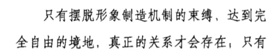 |
| 2017-10-17 09:31:03 | 你 | 这个关系 也不知道是翻译的不好还是什么 |
| 2017-10-17 09:31:17 | 你 | 应该是英语里的relationship |
| 2017-10-17 09:31:34 | 我 | 嗯 |
| 2017-10-17 09:40:25 | 你 | 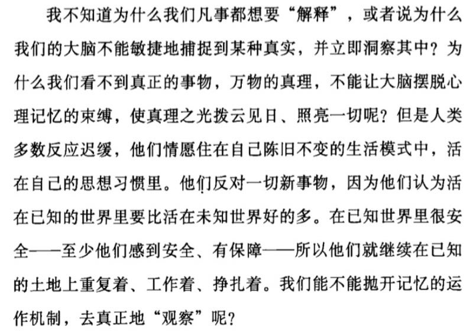 |
| 2017-10-17 09:40:47 | 我 | 嗯嗯 |
| 2017-10-17 11:20:52 | 你 | 你为啥瞪我一眼，讨厌 |
| 2017-10-17 11:21:13 | 我 | GCI就算都问你也不能说呀 |
| 2017-10-17 11:21:28 | 你 | 咋了？ |
| 2017-10-17 11:21:44 | 我 | 我说王胜利控制不了GCI给哪个项目 |
| 2017-10-17 11:21:50 | 我 | 你就说都过你 |
| 2017-10-17 11:22:00 | 我 | 我怎么接着说呀 |
| 2017-10-17 11:22:13 | 你 | 我说的是回王总问题的 |
| 2017-10-17 11:42:51 | 我 | 张淑峰的事情你不说吗 |
| 2017-10-17 11:44:20 | 你 | 哎呀，我忘了 |
| 2017-10-17 11:44:36 | 你 | 脑子里想的全是吃饭的事 |
| 2017-10-17 11:44:46 | 我 | 😀 |
| 2017-10-17 11:45:00 | 你 | 幸好你tixingwole |
| 2017-10-17 11:45:35 | 我 | 嗯嗯 |
| 2017-10-17 14:06:10 | 我 | 你在干啥呢 |
| 2017-10-17 14:06:20 | 你 | 写PPT啊 |
| 2017-10-17 14:06:31 | 你 | 这次写好点 |
| 2017-10-17 14:06:44 | 我 | 嗯嗯 |
| 2017-10-17 14:39:58 | 我 | 亲，你陷入细节了 |
| 2017-10-17 14:40:18 | 你 | 啊 |
| 2017-10-17 14:40:41 | 我 | 先不要去纠结这些样式的问题，要先做好骨架 |
| 2017-10-17 14:40:54 | 我 | 第一页你就这么纠结，后面的那就更不好写了 |
| 2017-10-17 15:30:53 | 我 | 写的怎么样了 |
| 2017-10-17 15:31:18 | 你 | 这个其实真的很简单 |
| 2017-10-17 15:31:33 | 我 | 嗯嗯 |
| 2017-10-17 15:31:34 | 你 | 我就是画图很烦 |
| 2017-10-17 15:31:40 | 我 | 哈哈，和我一样 |
| 2017-10-17 15:31:44 | 你 | 等我写的差不多给你看看 |
| 2017-10-17 15:31:52 | 我 | 我的图都是让胖子画的 |
| 2017-10-17 15:31:54 | 我 | 嗯嗯 |
| 2017-10-17 15:40:12 | 我 | 呵呵，这个高杰又在抢功劳了 |
| 2017-10-17 15:40:20 | 你 | 就是 |
| 2017-10-17 16:16:32 | 我 | 最后整明白了吗？是和高杰写一份吗 |
| 2017-10-17 16:16:41 | 你 | 各写各的 |
| 2017-10-17 16:16:53 | 你 | 我自己想的 |
| 2017-10-17 16:17:10 | 我 | 嗯 |
| 2017-10-17 16:17:24 | 我 | 你就写你自己的 |
| 2017-10-17 16:17:27 | 你 | 高杰已经写过一个了 大纲设计好了 给王总看 王总不满意 觉得她写的 不是他想要的 结果让我来写 |
| 2017-10-17 16:17:58 | 你 | 但是也不是很有把握 |
| 2017-10-17 16:18:00 | 我 | 😃，这才对嘛 |
| 2017-10-17 16:18:11 | 我 | 没事，你就写吧 |
| 2017-10-17 16:18:13 | 你 | 我先按照自己的想法写吧 |
| 2017-10-17 16:18:23 | 我 | 一定比她的强 |
| 2017-10-17 16:18:56 | 你 | 我看他写的也挺好的 |
| 2017-10-17 16:32:24 | 我 | 你写了多少页了 |
| 2017-10-17 16:32:51 | 你 | 10几页 |
| 2017-10-17 16:33:05 | 你 | 我大纲想好了 |
| 2017-10-17 16:33:11 | 我 | 嗯嗯 |
| 2017-10-17 16:33:13 | 你 | 剩下的就是找材料了 |
| 2017-10-17 16:33:21 | 你 | 等会让你看看 |
| 2017-10-17 16:33:27 | 你 | 我差不多先不写了 |
| 2017-10-17 16:33:34 | 我 | 好 |
| 2017-10-17 16:33:41 | 你 | 今天就干到这吧 |
| 2017-10-17 16:33:51 | 我 | 嗯嗯，歇会吧 |
| 2017-10-17 16:34:58 | 你 | 还有 高杰那得东西 |
| 2017-10-17 16:35:08 | 你 | 而且每天她凭什么不用汇报 |
| 2017-10-17 16:35:13 | 你 | 每次都是我们说 |
| 2017-10-17 16:35:23 | 你 | 他干了啥 没人知道 |
| 2017-10-17 16:35:27 | 我 | 哈哈，我还真不希望她汇报 |
| 2017-10-17 16:35:32 | 你 | 我看了 好多项目信息他都有 |
| 2017-10-17 16:35:35 | 你 | 我都没有 |
| 2017-10-17 16:35:45 | 我 | 因为她是项目管理，她汇报的内容就是给别人派活 |
| 2017-10-17 16:35:59 | 你 | 他汇报就是他干了啥啊 |
| 2017-10-17 16:36:08 | 你 | 那时候严丹也是得汇报的 |
| 2017-10-17 16:36:20 | 我 | 项目信息这事没有办法，她原来是产品线的，CRM 她可以登录，咱们没法登录 |
| 2017-10-17 16:36:26 | 我 | 项目信息都是那里面的 |
| 2017-10-17 16:49:52 | 你 | 发给你了 |
| 2017-10-17 16:49:56 | 你 | 你看下结构 |
| 2017-10-17 16:50:01 | 我 | 好 |
| 2017-10-17 17:01:57 | 你 | 我跟你说说高杰写的啥 |
| 2017-10-17 17:02:05 | 我 | 嗯 |
| 2017-10-17 17:02:16 | 你 | 人家写的跟研发季度会那个 汇报似的 |
| 2017-10-17 17:02:35 | 你 | 专用市场、通用市场啥的 |
| 2017-10-17 17:02:45 | 我 | 嗯嗯 |
| 2017-10-17 17:02:47 | 你 | 后来我说 王总是给他们培训 不是汇报 |
| 2017-10-17 17:02:58 | 你 | 王总给他们汇报太掉价了 |
| 2017-10-17 17:03:02 | 我 | 是 |
| 2017-10-17 17:03:13 | 你 | 他就说 那都是销售啥的 |
| 2017-10-17 17:03:17 | 你 | 我没说啥 |
| 2017-10-17 17:03:30 | 你 | 后来人家说王总让写RSS内部怎么实现的 |
| 2017-10-17 17:03:37 | 我 | 哈哈 |
| 2017-10-17 17:03:41 | 你 | 我说销售连这个都听啊 |
| 2017-10-17 17:03:51 | 你 | 他说那他说要写 |
| 2017-10-17 17:03:55 | 你 | 我说那个我可写不了 |
| 2017-10-17 17:04:07 | 你 | 他也搞不懂王总要个啥 |
| 2017-10-17 17:04:21 | 你 | 我看他那个写的信息可多了 |
| 2017-10-17 17:04:26 | 我 | 嗯 |
| 2017-10-17 17:04:30 | 你 | 比我这个多很多 |
| 2017-10-17 17:04:36 | 你 | 就这样吧 |
| 2017-10-17 17:04:43 | 我 | 嗯嗯 |
| 2017-10-17 17:04:46 | 你 | 她才是王总御用写PPT的 |
| 2017-10-17 17:04:52 | 我 | 是 |
| 2017-10-17 17:04:58 | 你 | 我只根据王总的要求 写我自己的 |
| 2017-10-17 17:05:19 | 你 | 后来我俩谁也说服不了谁 就说各汇报各的了 |
| 2017-10-17 17:06:38 | 你 | 我看看 |
| 2017-10-17 17:06:41 | 我 | 我给你的你能看吗 |
| 2017-10-17 17:06:45 | 你 | 能看 |
| 2017-10-17 17:06:54 | 我 | 嗯嗯，可以对着正文看 |
| 2017-10-17 17:09:33 | 你 | 好的 |
| 2017-10-17 17:17:30 | 你 | 你干啥呢 |
| 2017-10-17 17:17:35 | 我 | 没事干 |
| 2017-10-17 17:17:37 | 你 | 要不咱们出去溜达圈 |
| 2017-10-17 17:17:40 | 我 | 好呀 |
| 2017-10-17 17:17:51 | 我 | 你手机吧 |
| 2017-10-17 17:17:57 | 你 | 是的 |
| 2017-10-17 17:18:03 | 你 | 想动吗 |
| 2017-10-17 17:18:06 | 我 | 想 |
| 2017-10-17 17:18:13 | 你 | 那走吧 |
| 2017-10-17 17:18:17 | 我 | 👌 |
| 2017-10-17 17:18:18 | 你 | 你先走 |
| 2017-10-17 17:18:31 | 我 | 我给你带着充电宝吧 |
| 2017-10-17 17:19:11 | 你 | 好 |
| 2017-10-17 17:19:20 | 你 | 你先走吧 我得穿衣服 |
| 2017-10-17 17:19:33 | 我 | 恩 |
{kind=link}
{kind=link}
2017-10-18¶
| 2017-10-18 09:00:16 | 你 | 开会了 |
| 2017-10-18 11:03:36 | 你 | 我也会抱怨你 |
| 2017-10-18 11:03:44 | 你 | 你不会是说我呢吧 |
| 2017-10-18 11:03:54 | 我 | 哦，没有 |
| 2017-10-18 11:04:02 | 我 | 我没想过你会抱怨我 |
| 2017-10-18 11:04:24 | 你 | 我觉得这很正常啊 |
| 2017-10-18 11:04:48 | 你 | 而且还是那句 抱怨是要分抱怨什么 和跟谁抱怨的 |
| 2017-10-18 11:05:36 | 你 | 你赶紧回答我 |
| 2017-10-18 11:05:41 | 你 | 你为什么问这个问题 |
| 2017-10-18 11:05:52 | 我 | 因为我信任你，想听听你的看法 |
| 2017-10-18 11:06:44 | 你 | 你还没回答我的问题 |
| 2017-10-18 11:07:17 | 我 | 我有点晕了，我觉得我回答了呀 |
| 2017-10-18 11:07:43 | 我 | 我有一个问题，自己纠结了很久解不开，所以就想找一个人问问 |
| 2017-10-18 11:07:59 | 你 | 那你为什么纠结这个问题 |
| 2017-10-18 11:08:03 | 你 | 我问得是这个 |
| 2017-10-18 11:08:28 | 我 | 这么说吧，被抱怨是出乎我意料 |
| 2017-10-18 11:08:47 | 我 | 所以我才会比较纠结 |
| 2017-10-18 11:09:11 | 你 | 其实你还没回答我的问题 算了 无所谓了 |
| 2017-10-18 11:09:14 | 我 | 而且恰恰是我绝不会抱怨他 |
| 2017-10-18 11:09:17 | 你 | 答案我跟你说了已经 |
| 2017-10-18 11:09:33 | 你 | 他？ |
| 2017-10-18 11:09:36 | 你 | 谁？ |
| 2017-10-18 11:09:42 | 我 | 你不认识的 |
| 2017-10-18 11:10:06 | 你 | 那我就说不好了 |
| 2017-10-18 11:11:18 | 我 | 这么说，我们关系不错，我也一直帮他，我一直认为他也是这么看我的，所以当知道他抱怨我的时候，我是挺意外的 |
| 2017-10-18 11:11:55 | 你 | 男的女的 |
| 2017-10-18 11:12:09 | 我 | 其实我纠结的不是他抱怨我，而是我怎么看待这件事情以及未来怎么对待他 |
| 2017-10-18 11:12:13 | 我 | 男的 |
| 2017-10-18 11:12:19 | 我 | 有关系吗？ |
| 2017-10-18 11:12:25 | 你 | 有啊 |
| 2017-10-18 11:12:30 | 你 | 男的一般不爱抱怨 |
| 2017-10-18 11:12:31 | 我 | 如果是女的我就原谅他？ |
| 2017-10-18 11:12:36 | 你 | 女的爱抱怨 |
| 2017-10-18 11:12:47 | 你 | 女的抱怨的话 其实一般都不过脑子的 |
| 2017-10-18 11:12:55 | 你 | 说出去就没事了 |
| 2017-10-18 11:13:05 | 我 | 哈哈，你说完了我就更纠结了 |
| 2017-10-18 11:13:20 | 你 | 男的 说实话 我看到过男的爱抱怨的 尤其是 说别人的 比较少 |
| 2017-10-18 11:13:24 | 你 | 王总算一个 |
| 2017-10-18 11:13:31 | 我 | 嗯 |
| 2017-10-18 11:13:44 | 我 | 对呀，所以我才纠结，我才意外 |
| 2017-10-18 11:13:53 | 你 | 还是得看抱怨啥 跟谁抱怨 |
| 2017-10-18 11:14:10 | 你 | 一般我觉得『抱怨』这个词 就跟『牢骚』一样 |
| 2017-10-18 11:14:21 | 你 | 不怎么会过心的 |
| 2017-10-18 11:14:27 | 我 | 嗯嗯 |
| 2017-10-18 11:14:33 | 我 | 算了，不想了 |
| 2017-10-18 11:14:46 | 你 | 基本上升不到思想的高度 |
| 2017-10-18 11:14:51 | 你 | 你是说旭明吗 |
| 2017-10-18 11:15:09 | 我 | 不是，他还够不上我这么纠结 |
| 2017-10-18 11:15:16 | 你 | 哦 好吧 |
| 2017-10-18 11:15:30 | 你 | 那是你惺惺相惜的挚友啊 |
| 2017-10-18 11:15:41 | 我 | 是 |
| 2017-10-18 11:16:30 | 你 | 那别想了 |
| 2017-10-18 11:16:37 | 我 | 嗯 |
| 2017-10-18 11:20:52 | 我 | 你没有朋友是因为你有李杰 |
| 2017-10-18 11:27:00 | 你 | 你也有弟弟啊 |
| 2017-10-18 11:33:27 | 我 | 我弟比我小太多了。很多他都不懂 |
| 2017-10-18 14:53:37 | 我 | 干啥呢，看着你好像很无聊 |
| 2017-10-18 14:53:49 | 你 | 写ppt |
| 2017-10-18 15:30:59 | 你 | 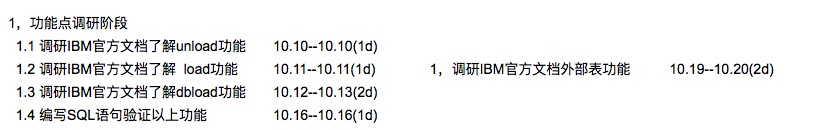 |
| 2017-10-18 15:31:16 | 你 | 这部分工作是不是有点耗时太长了 |
| 2017-10-18 15:32:04 | 你 | 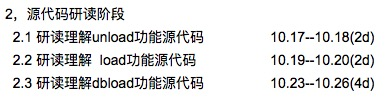 |
| 2017-10-18 15:32:11 | 你 | 这部分时间有点短 |
| 2017-10-18 15:32:44 | 我 | 我估计是张杰告诉他的吧 |
| 2017-10-18 15:32:58 | 你 | 前期时间用的太多了 |
| 2017-10-18 15:33:24 | 你 | 5天就测试功能 |
| 2017-10-18 15:33:28 | 你 | 我一天就搞定了 |
| 2017-10-18 15:34:00 | 我 | 呵呵，他哪能和你比呀 |
| 2017-10-18 15:34:12 | 你 | 不是 关键这个很简单 |
| 2017-10-18 15:34:19 | 你 | 测什么需求都写了 |
| 2017-10-18 15:34:23 | 你 | 根本用不了这么久 |
| 2017-10-18 15:35:04 | 你 | 这个就是分隔符 原来一个 改成多个 |
| 2017-10-18 15:35:08 | 你 | 能有多难啊 |
| 2017-10-18 15:35:19 | 我 | 是 |
| 2017-10-18 15:35:22 | 你 | 代码研读8天 方案写4天 |
| 2017-10-18 15:35:47 | 你 | 4周 |
| 2017-10-18 15:35:50 | 你 | 也差不多 |
| 2017-10-18 15:36:09 | 你 | 我觉得足够了 我要是懂代码 我肯定能看完 |
| 2017-10-18 15:36:24 | 我 | 就这样吧 |
| 2017-10-18 15:36:30 | 你 | 这3个工具 有2个几乎一样 而且是独立于Server的 |
| 2017-10-18 15:36:41 | 你 | 比加载机简单多了 |
| 2017-10-18 15:36:52 | 你 | 一共3、4个参数 |
| 2017-10-18 15:36:58 | 你 | 功能超级简单 |
| 2017-10-18 15:37:05 | 你 | dbload难一点 |
| 2017-10-18 15:37:13 | 你 | 外部表还不是他做 |
| 2017-10-18 15:37:33 | 我 | 他这个计划里面包括了外部表 |
| 2017-10-18 15:37:56 | 你 | 没有外部表啊 |
| 2017-10-18 15:38:24 | 我 | 有 |
| 2017-10-18 15:38:26 | 你 | 外部表是最难的 |
| 2017-10-18 15:38:47 | 我 | 是，我在想是不是让张杰去干 |
| 2017-10-18 15:39:05 | 你 | 这个计划没有外部表 |
| 2017-10-18 15:39:31 | 你 | 有两列 一列是许永亮 另一列是『someone else』 |
| 2017-10-18 15:39:49 | 你 | someone else的意思是其他人做 |
| 2017-10-18 15:39:54 | 你 | 不是许永亮做 |
| 2017-10-18 15:40:09 | 我 | 呵呵，我手机上看的 |
| 2017-10-18 15:40:10 | 你 | 可以考虑让许永亮去测试组吧 |
| 2017-10-18 15:40:15 | 你 | 我觉得他底子太薄了 |
| 2017-10-18 15:40:28 | 我 | 这个得王总说 |
| 2017-10-18 15:40:44 | 你 | 我就是私下跟你说说 |
| 2017-10-18 15:40:59 | 你 | 他去哪也不关你我的事 |
| 2017-10-18 15:41:08 | 我 | 是 |
| 2017-10-18 17:10:23 | 你 | 我觉得你俩又得吵起来，我先撤了 |
| 2017-10-18 17:11:00 | 我 | 啊，没吵 |
| 2017-10-18 17:49:43 | 你 | 你干啥去了 |
| 2017-10-18 17:49:52 | 你 | 刚才黄军雷找你 你不在 交给高杰了 |
| 2017-10-18 17:49:59 | 我 | 上厕所 |
| 2017-10-18 17:50:08 | 你 | 就是跟ML那一堆文档有关的事 |
| 2017-10-18 17:50:16 | 你 | 说让指定研发 测试人员啥的 |
| 2017-10-18 17:50:27 | 我 | 哦 |
| 2017-10-18 17:50:33 | 我 | 我回去看看 |
| 2017-10-18 17:50:34 | 你 | 说让你和高杰商量定下 |
| 2017-10-18 17:50:44 | 你 | 高杰说 他定了 发邮件抄送你就行 |
| 2017-10-18 17:50:51 | 你 | 你就当不知道啊 |
| 2017-10-18 17:51:08 | 我 | 嗯嗯，那就让她定，出事我不管 |
| 2017-10-18 17:51:21 | 你 | 好吧 |
| 2017-10-18 17:51:25 | 你 | 我还有事跟你说呢 |
| 2017-10-18 17:51:31 | 你 | 五期延期的事 |
| 2017-10-18 17:51:34 | 我 | 我马上回去 |
| 2017-10-18 17:51:46 | 你 | 我今天早下班 |
| 2017-10-18 17:51:51 | 你 | 你回来吧 |
| 2017-10-18 17:51:59 | 你 | 说完我就走 |
| 2017-10-18 17:52:16 | 我 | 哦 |
| 2017-10-18 17:52:21 | 我 | 这么早就走 |
{kind=link}
{kind=link}
2017-10-19¶
| 2017-10-19 09:20:52 | 我 | 最近这两天张淑锋找你了吗 |
| 2017-10-19 09:21:03 | 你 | 没有 |
| 2017-10-19 09:21:14 | 我 | 嗯嗯 |
| 2017-10-19 09:21:23 | 我 | 你没睡好吗？ |
| 2017-10-19 09:22:24 | 你 | 没有啊，怎么了 |
| 2017-10-19 09:24:58 | 我 | 看你有点没精神 |
| 2017-10-19 09:35:52 | 你 | 没有 |
| 2017-10-19 09:36:27 | 我 | 嗯嗯 |
| 2017-10-19 09:37:33 | 我 | 亲，你给我发的邮件没有附件 |
| 2017-10-19 09:37:48 | 你 | 老陈找你了 |
| 2017-10-19 09:38:01 | 你 | 说ML测试补全国网的所有测试用例 |
| 2017-10-19 09:38:06 | 你 | 他跟高杰说呢 |
| 2017-10-19 09:38:28 | 我 | 哦，那就让高杰去做吧，我不想管了 |
| 2017-10-19 09:38:40 | 你 | 好 |
| 2017-10-19 09:42:50 | 你 | 不用看附件啊 |
| 2017-10-19 09:42:58 | 你 | 我让你看的是王总的回复 |
| 2017-10-19 09:45:47 | 我 | 嗯嗯，不需要大改吧 |
| 2017-10-19 09:46:00 | 你 | 就是补充例子 |
| 2017-10-19 09:46:11 | 我 | 嗯 |
| 2017-10-19 09:58:29 | 你 | 王总那意思是技术支持的去支持了吗 张淑锋那事 |
| 2017-10-19 09:58:42 | 你 | 他说话总是不清不楚的 |
| 2017-10-19 09:58:47 | 你 | 真晕 |
| 2017-10-19 09:59:52 | 我 | 我觉得是，既然他说咱们不用管，就先别管了 |
| 2017-10-19 10:00:15 | 你 | 不管了啊 |
| 2017-10-19 10:00:28 | 我 | 要是张树峰找你你就说王总已经安排服务去支持了 |
| 2017-10-19 10:00:29 | 你 | 我是说他的意思是有人支持了是吧 |
| 2017-10-19 10:00:37 | 我 | 是的，我是这么理解的 |
| 2017-10-19 10:00:46 | 我 | 应该是让唐骞他们把 |
| 2017-10-19 10:00:51 | 你 | 恩 好吧 |
| 2017-10-19 10:00:55 | 你 | 那我就不管了 |
| 2017-10-19 10:01:01 | 我 | 别管了 |
| 2017-10-19 10:32:11 | 你 | 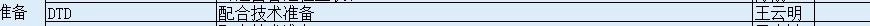 |
| 2017-10-19 10:32:16 | 你 | 就这一项对吧 |
| 2017-10-19 10:32:25 | 我 | 后面还有 |
| 2017-10-19 10:32:43 | 我 | 下一张 |
| 2017-10-19 10:32:50 | 你 | 嗯嗯 |
| 2017-10-19 10:32:52 | 你 | 没看到 |
| 2017-10-19 10:33:05 | 我 | 评估检查里面有 DTD |
| 2017-10-19 10:33:30 | 你 | 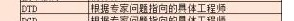 |
| 2017-10-19 10:33:42 | 我 | 对 |
| 2017-10-19 10:36:58 | 你 | ML看来成的可能性挺大的 |
| 2017-10-19 10:37:30 | 我 | 这个是必须要过的 |
| 2017-10-19 10:38:49 | 我 | 对于咱们来说就是一个配合就可以了 |
| 2017-10-19 10:39:13 | 我 | 我觉得大部分应该是水面下的工作 |
| 2017-10-19 10:39:25 | 你 | 恩 |
| 2017-10-19 10:39:33 | 你 | 那也要做好准备啊 |
| 2017-10-19 10:39:39 | 你 | 既然DSD这么叮嘱了 |
| 2017-10-19 10:39:47 | 我 | 是 |
| 2017-10-19 10:40:28 | 你 | 崔总 赵总 都出面了 |
| 2017-10-19 10:40:51 | 我 | 嗯嗯，不知道 ZF 会是谁来 |
| 2017-10-19 10:41:26 | 你 | 谁来也不知道 |
| 2017-10-19 10:41:56 | 我 | 我觉得他们应该知道了，王军负责这事 |
| 2017-10-19 10:42:42 | 你 | 谁来会怎么样 |
| 2017-10-19 10:42:43 | 你 | 王军是销售吗 |
| 2017-10-19 10:43:19 | 我 | 不是，专用事业部的，负责 J 口的 |
| 2017-10-19 10:43:52 | 我 | 看看会不会是有大领导来，ZF 的大领导和崔总他们都很熟 |
| 2017-10-19 14:08:39 | 我 | PPT 写完了吗 |
| 2017-10-19 14:08:44 | 你 | 没呢 |
| 2017-10-19 14:08:56 | 你 | 估计还得写3个小时 |
| 2017-10-19 14:09:08 | 我 | 哦，还需要那么久 |
| 2017-10-19 14:09:13 | 我 | 你赶快写吧 |
| 2017-10-19 14:09:14 | 你 | 这下能到35页了估计 |
| 2017-10-19 14:09:21 | 我 | 嗯嗯，不错 |
| 2017-10-19 14:49:14 | 我 | [链接] 王雪松和男男的聊天记录 |
| 2017-10-19 14:52:06 | 你 | 陈捷对吧 |
| 2017-10-19 14:52:12 | 我 | 对 |
| 2017-10-19 14:52:14 | 你 | 要测试的人啊 |
| 2017-10-19 14:52:52 | 你 | 哪哪都崩不住了 |
| 2017-10-19 14:52:58 | 我 | 是 |
| 2017-10-19 14:53:27 | 我 | 由她出面要人吧，反正我也说了，要找王总协调 |
| 2017-10-19 14:53:50 | 我 | 其实咱们的人没啥用，最多就是装一下8t |
| 2017-10-19 14:54:03 | 我 | 而且这次我们已经做了绿色安装包 |
| 2017-10-19 14:54:37 | 你 | 是吧 |
| 2017-10-19 14:54:42 | 我 | 这个估计是顶卓他们说的，就先安排一个过去吧 |
| 2017-10-19 14:54:44 | 你 | 她有她的想法 |
| 2017-10-19 14:54:51 | 你 | 恩 |
| 2017-10-19 14:54:52 | 我 | 嗯嗯，你说得对 |
| 2017-10-19 14:55:04 | 你 | 关键这个用户用的时候 跟8a mpp没啥却别啊 |
| 2017-10-19 14:55:07 | 你 | 区别啊 |
| 2017-10-19 14:55:15 | 我 | 对呀 |
| 2017-10-19 14:55:42 | 你 | 就是呗 |
| 2017-10-19 14:55:49 | 你 | 他说啥是啥吧 |
| 2017-10-19 14:56:05 | 我 | 嗯嗯 |
| 2017-10-19 14:56:51 | 你 | 我觉得每到事上的时候 就显得王总特别不专业 |
| 2017-10-19 14:57:02 | 你 | 咱们总跟着他丢人 |
| 2017-10-19 14:57:09 | 我 | 是 |
| 2017-10-19 14:57:29 | 你 | 事情的关键点他都把握不好 总是抓那些边边角角 |
| 2017-10-19 14:57:41 | 我 | 说的没错 |
| 2017-10-19 14:58:00 | 我 | 你和他说重点，他非得给你带到边上去 |
| 2017-10-19 14:58:05 | 你 | 是呢 |
| 2017-10-19 14:58:12 | 你 | 而且他也不听建议 |
| 2017-10-19 14:58:18 | 我 | 嗯 |
| 2017-10-19 14:58:19 | 你 | 谁的话都不信 |
| 2017-10-19 14:58:54 | 你 | 倒是露脸的事 可爱干了 |
| 2017-10-19 14:59:06 | 我 | 嗯嗯 |
| 2017-10-19 14:59:19 | 我 | 感觉和王胜利差不多 |
| 2017-10-19 14:59:30 | 你 | 他出差前 中午我吃饭 他出来跟我说出差 |
| 2017-10-19 14:59:38 | 你 | 我说：好辛苦啊 blabla的 |
| 2017-10-19 14:59:52 | 你 | 人家来了句 到十一月我就可以回去了 |
| 2017-10-19 14:59:57 | 你 | 回美国 |
| 2017-10-19 15:00:00 | 我 | 呵呵 |
| 2017-10-19 15:00:01 | 你 | 这家伙 |
| 2017-10-19 15:00:27 | 我 | 说实话，明年部门合并我真不看好他 |
| 2017-10-19 15:00:34 | 你 | 谁知道呢 |
| 2017-10-19 15:00:36 | 你 | 不知道 |
| 2017-10-19 15:00:51 | 我 | 你说他就这样，大崔和赵总心里能不没有想法吗 |
| 2017-10-19 15:00:53 | 你 | 能力太差了 |
| 2017-10-19 15:01:10 | 你 | 谁知道赵总和大崔知不知道他这样啊 |
| 2017-10-19 15:02:57 | 我 | 我估计大家都知道 |
| 2017-10-19 15:03:52 | 你 | 要是知道就好了 |
| 2017-10-19 15:04:20 | 我 | 是，不管他了，明年爱咋样咋样吧 |
| 2017-10-19 15:04:29 | 你 | 是 |
| 2017-10-19 15:04:31 | 你 | 随便吧 |
| 2017-10-19 15:06:48 | 你 | 我觉得我写的这个PPT 他也讲不了 |
| 2017-10-19 15:07:00 | 我 | 为啥？ |
| 2017-10-19 15:07:01 | 你 | 这么细节的话 他很多都不清楚 |
| 2017-10-19 15:07:15 | 你 | 要是有较真的跟他问 他也答不上来 |
| 2017-10-19 15:08:01 | 我 | 是，不过他现场忽悠的能力还是蛮不错的[偷笑] |
| 2017-10-19 15:08:25 | 你 | shi |
| 2017-10-19 15:23:17 | 你 | 我电脑自带邮箱客户端又不能用了 |
| 2017-10-19 15:23:23 | 你 | 密码老是不对 |
| 2017-10-19 15:23:32 | 我 | 啊，我回去看看 |
| 2017-10-19 15:23:33 | 你 | 我在网页版的改了密码 |
| 2017-10-19 15:23:49 | 我 | 哦，那你还是改回来吧 |
| 2017-10-19 15:23:50 | 你 | 然后想在网页版的再改回来 改不回来了 |
| 2017-10-19 15:24:07 | 我 | 不会呀 |
| 2017-10-19 15:24:17 | 你 | 两边都报密码错误 |
| 2017-10-19 15:24:19 | 你 | 真晕 |
| 2017-10-19 15:24:35 | 你 | 现在网页版的能用 |
| 2017-10-19 16:27:03 | 我 | 刚给你转了个邮件，你看看 |
| 2017-10-19 16:35:55 | 你 | 好 |
| 2017-10-19 16:37:00 | 你 | 看完了 |
| 2017-10-19 16:37:27 | 你 | 如您所说，您已经在找 陈文亭总 协调测试人力–这句好不客气啊 |
| 2017-10-19 16:37:48 | 我 | 是，我正想说让你看看陈婕的语气 |
| 2017-10-19 16:39:15 | 你 | 『8t MPP（DB4项目）已经承诺客户年底外发』–承诺很重要啊 |
| 2017-10-19 16:39:57 | 你 | 你发现咱们部门的有事就是抽调别的部门的 真是无语 |
| 2017-10-19 16:40:20 | 我 | 我估计就是王总老觉得老陈给他的人太差 |
| 2017-10-19 16:40:34 | 我 | 这个坎他就一直没有过去 |
| 2017-10-19 16:40:42 | 我 | 有点太小心眼了 |
| 2017-10-19 16:40:46 | 你 | 上次做JAVA的 不还说要老田的人么 |
| 2017-10-19 16:40:49 | 你 | 他一直这样 |
| 2017-10-19 16:41:03 | 我 | 是 |
| 2017-10-19 16:41:15 | 你 | 这邮件是全部回复的 |
| 2017-10-19 16:41:18 | 你 | 呵呵 |
| 2017-10-19 16:41:45 | 你 | 如您所说，您已经在找 陈文亭总 协调测试人力—-这句话还是有点呵呵啊 |
| 2017-10-19 16:42:00 | 我 | 嗯嗯 |
| 2017-10-19 16:42:46 | 你 | 这下 陈捷更得跟王总要人了 |
| 2017-10-19 16:43:01 | 我 | 对呀 |
| 2017-10-19 16:43:47 | 我 | 就像你说的，关键点他都把握不好 |
| 2017-10-19 16:43:59 | 你 | 说实话 没想到陈捷竟然管这么多 |
| 2017-10-19 16:45:17 | 我 | 名义上他是 DMD的，实际上现在是管着所有研发 leader |
| 2017-10-19 16:46:05 | 你 | 嗯嗯 |
| 2017-10-19 16:51:18 | 我 | 你忙吗 |
| 2017-10-19 16:51:38 | 你 | 不忙 |
| 2017-10-19 16:51:48 | 你 | 刚才王总回复了 说这一版的PPT可以用 |
| 2017-10-19 16:51:52 | 我 | 聊天吧 |
| 2017-10-19 16:51:59 | 我 | 嗯嗯，👍 |
| 2017-10-19 16:54:31 | 你 | 收邮件 |
| 2017-10-19 16:56:19 | 我 | 哈哈，这下成了正式任务了 |
| 2017-10-19 16:57:21 | 你 | 请8t研发/技术支持分析优化下tpc性能，增加其他用例测试下CPU扩展性—这是不是没人支持人家啊 |
| 2017-10-19 16:57:55 | 我 | 不知道，感觉现在他把这个工作推给咱们了 |
| 2017-10-19 16:58:00 | 我 | 人家现在不干了 |
| 2017-10-19 16:58:19 | 你 | 就像你说的 成正式任务了 |
| 2017-10-19 16:58:28 | 你 | 这个张淑锋好强势啊 |
| 2017-10-19 16:58:46 | 我 | 对呀，我之前和你说过 |
| 2017-10-19 16:59:00 | 我 | 关键是武总支持他 |
| 2017-10-19 17:03:14 | 我 | 张树峰找你了吗 |
| 2017-10-19 17:03:19 | 你 | 没有 |
| 2017-10-19 17:03:31 | 你 | 我也很意外 竟然收了这么个邮件 |
| 2017-10-19 17:03:41 | 我 | 嗯嗯，我估计他也知道你推不动这事了 |
| 2017-10-19 17:04:05 | 你 | 额~~~ |
| 2017-10-19 17:08:15 | 我 | 恐惧是一种特别强烈的情绪，能轻易地支配一个人的行为，但是人脑子里还有一种东西更加强大，可以毫不费力地碾碎恐惧，那就是理性。 很多可怕的事情都是这样，当人们对其建立起理性的认识后，那种剧烈的恐惧感就会立刻烟消云散。怕什么，就去研究什么，然后就再也不怕了。 |
| 2017-10-19 17:08:44 | 我 | 从微博上看来的，这是一头一尾，中间的是他举的一些例子 |
| 2017-10-19 17:08:47 | 你 | 说的好 |
| 2017-10-19 17:11:14 | 你 | [链接] 李辉和张淑锋的聊天记录 |
| 2017-10-19 17:13:14 | 我 | 哈哈，这个张树峰太有意思了 |
| 2017-10-19 17:13:21 | 你 | 是呢 |
| 2017-10-19 17:13:28 | 你 | 我觉得他跟个小孩一样 |
| 2017-10-19 17:13:42 | 我 | 是，可能是因为长期玩技术吧 |
| 2017-10-19 17:14:10 | 你 | 他还问我发邮件行不行 |
| 2017-10-19 17:14:13 | 你 | 多好玩 |
| 2017-10-19 17:14:18 | 我 | 嗯嗯 |
| 2017-10-19 17:14:50 | 你 | 有可能 技术太强了 沟通上会直来直去的 |
| 2017-10-19 17:15:05 | 我 | 是 |
{kind=link}
{kind=link}
2017-10-20¶
| 2017-10-20 09:03:20 | 我 | [链接] 群聊的聊天记录 |
| 2017-10-20 09:29:35 | 你 | 超擎这事 王总在主管群里 连名字都没指 你别一直管了 |
| 2017-10-20 09:30:06 | 你 | 但是你是为了我把王志拉下水的吗？ [坏笑] |
| 2017-10-20 09:30:38 | 我 | 是的 |
| 2017-10-20 09:37:25 | 你 | 超擎是C++语言，能达到快速入库的目标即可—C++接口又基本形同虚设，应用又是C、C++的 那肯定只能是odbc了吧 |
| 2017-10-20 09:38:19 | 我 | 是的 |
| 2017-10-20 09:38:56 | 我 | 其实我觉得这事没有那么严重，现在 JDBC 的性能比 ODBC 高，就先看看 JDBC 怎么实现的就行了 |
| 2017-10-20 09:39:38 | 我 | 我让王志负责也是因为我不想管了，等王总回来就让他去管吧 |
| 2017-10-20 09:39:41 | 你 | 赵总不还让陈总把MYSQL怎么实现的也参考下么 |
| 2017-10-20 09:40:07 | 我 | 是，老陈刚才回复了 |
| 2017-10-20 09:40:26 | 我 | [链接] 群聊的聊天记录 |
| 2017-10-20 09:40:49 | 我 | 老陈说的这个一定是要改 server 了，工作量不小 |
| 2017-10-20 09:41:07 | 你 | 这个一个季度也不一定做出来 |
| 2017-10-20 09:41:18 | 你 | 不就是大对象支持insert values语法么 |
| 2017-10-20 09:41:24 | 你 | 金航数码提过需求的 |
| 2017-10-20 09:41:33 | 我 | 稍等，赵总找我 |
| 2017-10-20 09:43:19 | 我 | 是 |
| 2017-10-20 10:07:24 | 我 | 赵总要求今天给一个结论 |
| 2017-10-20 10:07:33 | 你 | 哈哈 |
| 2017-10-20 10:07:37 | 你 | 我就知道会这样 |
| 2017-10-20 10:07:41 | 你 | 跟上次一个模式 |
| 2017-10-20 10:07:45 | 我 | 是 |
| 2017-10-20 10:08:02 | 我 | 这次又喊上老陈了 |
| 2017-10-20 10:30:36 | 我 | 要不是赵总找我我都不想管这事 |
| 2017-10-20 10:30:52 | 你 | 这不是赵总找了么 |
| 2017-10-20 10:31:02 | 你 | 不过王总下午就回来了 |
| 2017-10-20 10:31:08 | 你 | 让他去搞吧 |
| 2017-10-20 10:31:14 | 你 | 他不是乐意干么 |
| 2017-10-20 10:31:34 | 我 | 那也没用了，赵总肯定是希望我能帮他解决问题 |
| 2017-10-20 10:31:57 | 我 | 要是找的王总，我就真不管了 |
| 2017-10-20 10:32:11 | 你 | 恩 |
| 2017-10-20 11:19:40 | 你 | 发版的事 现在王总也要管了 |
| 2017-10-20 11:19:44 | 你 | 我真是服死他了 |
| 2017-10-20 11:20:01 | 你 | 这个刘畅真是个惹祸精 |
| 2017-10-20 11:20:23 | 我 | 是，这次一定要给她一个教训 |
| 2017-10-20 11:21:03 | 你 | 这种事，问清楚，私下里跟你一说不就得了 |
| 2017-10-20 11:21:13 | 我 | 对呀 |
| 2017-10-20 11:21:39 | 你 | 你问她啥，她啥也不知，动不动就是，咱们产品经理确认blabla的 |
| 2017-10-20 11:21:44 | 你 | 还不分场合 |
| 2017-10-20 11:21:45 | 我 | 这家伙还不知道自己错哪里了 |
| 2017-10-20 11:22:05 | 你 | 唉 |
| 2017-10-20 13:31:19 | 我 | 感觉你好像很累的样子 |
| 2017-10-20 13:31:29 | 你 | 我没睡醒 |
| 2017-10-20 13:31:37 | 我 | 要不我现在给你讲讲8t 的架构 |
| 2017-10-20 13:31:49 | 你 | 就是还想睡 但是时间不允许的那种感觉 |
| 2017-10-20 13:31:57 | 我 | 嗯 |
| 2017-10-20 13:32:09 | 我 | 你就睡吧，也没人管 |
| 2017-10-20 13:32:10 | 你 | 你歇会吧 |
| 2017-10-20 13:32:14 | 你 | 一会那么多会 |
| 2017-10-20 13:32:19 | 你 | 我不能睡了 |
| 2017-10-20 13:32:33 | 你 | 以前我都是1：15就醒 |
| 2017-10-20 13:32:38 | 你 | 现在越来越晚了 |
| 2017-10-20 13:32:50 | 你 | 王总在的话 看我们睡觉他该不乐意了 |
| 2017-10-20 13:32:55 | 我 | 没事的 |
| 2017-10-20 13:33:02 | 我 | 不用理他 |
| 2017-10-20 13:34:52 | 你 | 你看我 起来看表了 肯定是生物钟催起来的 |
| 2017-10-20 13:34:55 | 我 | 嗯嗯 |
| 2017-10-20 13:35:00 | 你 | 要是自然醒 就没事 |
| 2017-10-20 13:35:13 | 我 | 歇会，喝点水 |
| 2017-10-20 13:35:23 | 我 | 活动一下 |
| 2017-10-20 14:15:32 | 你 | 你没开会啊 |
| 2017-10-20 14:15:50 | 我 | 半点 |
| 2017-10-20 14:16:03 | 我 | 你还在写ppt吗 |
| 2017-10-20 14:16:27 | 你 | 是 |
| 2017-10-20 14:16:32 | 你 | 写完就没事了 |
| 2017-10-20 14:16:53 | 我 | 我以为你已经写完了 |
| 2017-10-20 14:17:05 | 你 | 还有三个性能指标 我也不知道 |
| 2017-10-20 14:17:10 | 你 | 我问张振鹏呢 |
| 2017-10-20 14:17:14 | 你 | 他还没告诉我 |
| 2017-10-20 14:17:16 | 我 | 什么指标 |
| 2017-10-20 14:17:26 | 你 | 就是1440列 RSS那个 |
| 2017-10-20 14:17:36 | 我 | 哦 |
| 2017-10-20 14:17:52 | 我 | 1440列是葛娜测的 |
| 2017-10-20 14:34:51 | 你 | 亲 你跟赵总开什么会啊 |
| 2017-10-20 14:34:57 | 你 | 刚才关门怎么那么大劲 |
| 2017-10-20 14:35:41 | 我 | 没有呀 |
| 2017-10-20 14:36:14 | 你 | 这个常建卯真是醉了 |
| 2017-10-20 14:36:26 | 我 | 我看见了 |
| 2017-10-20 14:36:30 | 你 | RSS那个为啥说性能不理想啊 |
| 2017-10-20 14:36:42 | 我 | 不行我给他打电话 |
| 2017-10-20 14:36:51 | 你 | 打啥 |
| 2017-10-20 14:37:03 | 我 | 好像是因为磁盘不好 |
| 2017-10-20 14:38:55 | 你 | 我可不建议你打 |
| 2017-10-20 14:39:20 | 我 | 为啥 |
| 2017-10-20 14:39:55 | 你 | 国网的事 王总最积极了 从头到尾你都没咋出现过 你打电话说啥啊 |
| 2017-10-20 14:40:08 | 你 | 说别让他在大群里吵吵了吗 |
| 2017-10-20 14:40:43 | 我 | 恩，听你的 |
| 2017-10-20 14:40:44 | 你 | 这个常建卯 不是那种好对付的主 |
| 2017-10-20 14:41:16 | 你 | 他之所以往群里说 肯定有他自己的想法 |
| 2017-10-20 14:41:20 | 你 | 你说非常不合适 |
| 2017-10-20 14:41:42 | 你 | 最关键的是 王总总是最积极的 |
| 2017-10-20 14:41:59 | 我 | 明白，那我就不理他 |
| 2017-10-20 14:42:04 | 你 | 这浑水 没事你淌它干啥 |
| 2017-10-20 14:42:19 | 你 | 要是28s的事 肯定你说没问题 |
| 2017-10-20 14:42:26 | 我 | 我听王志说，可能配置有问题 |
| 2017-10-20 14:42:34 | 我 | 嗯嗯 |
| 2017-10-20 14:42:36 | 你 | 1440列和60列 你都别参合了 |
| 2017-10-20 14:42:47 | 我 | 👌 |
| 2017-10-20 14:43:05 | 你 | 我倒是觉得byte这事 你积极点（看你挺积极的） 毕竟赵总找了 |
| 2017-10-20 14:43:18 | 你 | 我也希望事能成 |
| 2017-10-20 14:43:36 | 我 | 是 |
| 2017-10-20 14:44:59 | 你 | 我刚才问了 RSS那个测试组连个性能指标都没有，这样的话 理想不理想就说不清了 |
| 2017-10-20 14:45:16 | 你 | RSS性能：1. 不开启性能优化节点数据传输约15MB每秒。2. 开启2条传输通道，节点数据传输约29MB每秒。3. 开启3条传输通道，节点数据传输约45MB每秒。大于3通道后性能就没有提升了。 |
| 2017-10-20 14:45:21 | 你 | 这个是测试结果 |
| 2017-10-20 14:45:30 | 你 | 最好也就是3倍 |
| 2017-10-20 14:45:34 | 我 | 嗯嗯 |
| 2017-10-20 14:45:39 | 你 | 45M/S |
| 2017-10-20 14:47:24 | 我 | 好像现场达不到这么高 |
| 2017-10-20 14:47:51 | 你 | 所以他说的不理想 不知道是没起作用 还是起作用了依然不行 |
| 2017-10-20 14:47:57 | 你 | 估计前者的面大 |
| 2017-10-20 14:48:02 | 我 | 而且测试组这个三倍其实是因为磁盘受限了 |
| 2017-10-20 14:48:08 | 我 | 嗯嗯 |
| 2017-10-20 14:48:30 | 我 | 懒得管了，爱咋样咋样吧 |
| 2017-10-20 14:48:36 | 你 | 就是 别管 |
| 2017-10-20 14:48:43 | 你 | 出了事 有王总呢 |
| 2017-10-20 14:49:03 | 我 | 这个常也挺不靠谱，1440就是配置错了 |
| 2017-10-20 14:49:07 | 我 | 嗯嗯 |
| 2017-10-20 14:49:26 | 你 | 是啊 |
| 2017-10-20 14:49:44 | 你 | 而且从我跟他沟通来看 他是那种认准什么 一条道走到黑的 |
| 2017-10-20 14:49:53 | 我 | 嗯嗯 |
| 2017-10-20 14:49:59 | 你 | 你更少搭理他得了 |
| 2017-10-20 14:50:15 | 我 | 嗯，听你的 |
| 2017-10-20 14:53:33 | 你 | 嗯嗯 |
| 2017-10-20 14:57:54 | 我 | 你看看国网群，密码那事不会影响吧 |
| 2017-10-20 14:58:19 | 你 | 我已经问了 |
| 2017-10-20 14:58:21 | 你 | 不影响 |
| 2017-10-20 14:58:35 | 我 | 嗯嗯 |
| 2017-10-20 14:58:54 | 你 | 现在卡在rtsync了 |
| 2017-10-20 14:59:19 | 我 | 嗯 |
| 2017-10-20 15:19:30 | 我 | 亲，PPT 写完了吗 |
| 2017-10-20 15:19:57 | 你 | 写完了 |
| 2017-10-20 15:20:17 | 我 | 嗯嗯，你好点了吗 |
| 2017-10-20 15:20:25 | 你 | 没事了 |
| 2017-10-20 15:20:28 | 你 | 就是没睡醒 |
| 2017-10-20 15:20:31 | 你 | 你干啥呢 |
| 2017-10-20 15:20:47 | 我 | 现在没事，回 mpp 这边躲清静 |
| 2017-10-20 15:24:34 | 你 | 刚才王志来 说改了 |
| 2017-10-20 15:24:49 | 我 | 改好了？ |
| 2017-10-20 15:25:00 | 你 | 说改了 现在在调 |
| 2017-10-20 15:25:10 | 你 | 王总一会回来 |
| 2017-10-20 15:25:19 | 你 | 高杰去南站接去了 |
| 2017-10-20 15:25:29 | 我 | 嗯，那就让王总去管吧 |
| 2017-10-20 15:25:39 | 你 | 恩 |
| 2017-10-20 15:26:30 | 我 | 没想到今天会这么忙 |
| 2017-10-20 15:26:37 | 你 | 是 |
| 2017-10-20 15:26:45 | 你 | 以后这就是常态了 |
| 2017-10-20 15:27:06 | 我 | 是，以后问题会越来越多 |
| 2017-10-20 15:28:22 | 你 | 发出去的版本 都没底 |
| 2017-10-20 15:28:33 | 你 | 联调几乎都没有没问题的 |
| 2017-10-20 15:28:49 | 我 | 是呢，今天早上晨会我还忘了问现在有多少没有测试就发出去的 |
| 2017-10-20 15:28:54 | 我 | 好像不少了 |
| 2017-10-20 15:29:18 | 你 | 这个我不清楚 |
| 2017-10-20 15:29:22 | 你 | 有几个记着的 |
| 2017-10-20 15:29:29 | 你 | 你得跟刘畅要 |
| 2017-10-20 15:29:32 | 我 | 是 |
| 2017-10-20 15:31:19 | 我 | 我在考虑是不是把发版不让刘畅管了 |
| 2017-10-20 15:31:24 | 我 | 太惹事了 |
| 2017-10-20 15:31:29 | 你 | 嗯嗯 |
| 2017-10-20 15:31:31 | 你 | 你看吧 |
| 2017-10-20 15:31:34 | 你 | 不行我给管 |
| 2017-10-20 15:32:01 | 我 | 上次王总安排你做她的备份是和你俩一起说的吗 |
| 2017-10-20 15:32:30 | 你 | 不是 |
| 2017-10-20 15:32:36 | 你 | 你看吧 |
| 2017-10-20 15:32:40 | 我 | 唉，这个王总办事呀 |
| 2017-10-20 15:32:57 | 你 | 他总干这种没头没尾的事 |
| 2017-10-20 15:33:03 | 你 | 他现在跟我说的话 我都不信 |
| 2017-10-20 15:33:07 | 我 | 嗯嗯 |
| 2017-10-20 15:33:11 | 你 | 信他还不如信我自己 |
| 2017-10-20 15:33:16 | 我 | 太不靠谱了 |
| 2017-10-20 15:33:17 | 你 | 你看张淑锋那事 |
| 2017-10-20 15:33:18 | 我 | 没错 |
| 2017-10-20 15:33:27 | 你 | 也就是张淑锋不较真 |
| 2017-10-20 15:33:31 | 我 | 我现在也是信你 |
| 2017-10-20 15:33:39 | 你 | 我是绝对可信的 |
| 2017-10-20 15:33:45 | 我 | 当然啦 |
| 2017-10-20 15:33:51 | 我 | 相当负责任 |
| 2017-10-20 15:33:57 | 你 | 做什么事 做不成也是结论 必须有始有终 |
| 2017-10-20 15:34:08 | 你 | 最讨厌这种不了了之了 |
| 2017-10-20 15:34:09 | 我 | 嗯嗯 |
| 2017-10-20 15:34:18 | 我 | 唉，现在赵总检查 |
| 2017-10-20 15:34:22 | 你 | 他都是不了了之的 |
| 2017-10-20 15:34:26 | 我 | 等我吧，我去开会 |
| 2017-10-20 15:34:37 | 你 | 嗯嗯 |
| 2017-10-20 16:18:00 | 我 | 碰上麻烦事啦 |
| 2017-10-20 16:18:10 | 你 | 咋了 |
| 2017-10-20 16:18:15 | 你 | 晓亮@你呢 |
| 2017-10-20 16:18:23 | 我 | 需要8a 的代码，张绍勇不配合，要我请示武总去 |
| 2017-10-20 16:18:47 | 你 | 那就请示去呗 |
| 2017-10-20 16:18:49 | 你 | 这有啥 |
| 2017-10-20 16:19:35 | 我 | 对呀，我现在就给武总写邮件 |
| 2017-10-20 16:20:44 | 你 | 没事 |
| 2017-10-20 16:20:49 | 你 | 那就写吧 |
| 2017-10-20 17:55:52 | 我 | 真是忙了一天，都没空好好看你 |
| 2017-10-20 17:55:59 | 我 | 你又该走了吧 |
| 2017-10-20 17:56:17 | 你 | 嗯嗯，再等等 |
| 2017-10-20 18:01:14 | 我 | 今天还打算给你讲架构呢 |
| 2017-10-20 18:01:24 | 我 | 唉，人算不如天算 |
| 2017-10-20 18:01:46 | 你 | 没事 |
| 2017-10-20 18:01:50 | 你 | 你快歇会吧 |
| 2017-10-20 18:01:58 | 你 | 感觉累的快没气了 |
| 2017-10-20 18:02:05 | 我 | 我还行 |
| 2017-10-20 18:02:35 | 我 | 估计下周会更忙 |
| 2017-10-20 18:04:33 | 你 | 为啥 |
| 2017-10-20 18:05:03 | 我 | 下周 ML 检查，农行可能会交流 |
| 2017-10-20 18:05:09 | 我 | 然后 mpp 研发 |
| 2017-10-20 18:05:16 | 我 | 等等等等 |
| 2017-10-20 18:05:17 | 你 | 哦 |
| 2017-10-20 18:07:08 | 我 | 反倒是你现在比较清闲了 |
| 2017-10-20 18:07:23 | 你 | 
|
| 2017-10-20 18:07:31 | 你 | 我自己找事做 |
| 2017-10-20 18:07:38 | 你 | 事不少呢 |
| 2017-10-20 18:07:42 | 我 | 我看见你今天和王总解释啥事 |
| 2017-10-20 18:07:56 | 你 | 对了，ppt那个王总让我讲 |
| 2017-10-20 18:08:01 | 你 | 他不去了 |
| 2017-10-20 18:08:07 | 你 | 随便瞎聊 |
| 2017-10-20 18:08:21 | 我 | 啥时候去讲 |
| 2017-10-20 18:08:29 | 你 | 不知道 |
| 2017-10-20 18:08:36 | 你 | 哪天我问问他吧 |
| 2017-10-20 18:08:42 | 你 | 那个我不难 |
| 2017-10-20 18:08:51 | 我 | 他到会偷懒，没准是下周四 |
| 2017-10-20 18:10:21 | 我 | 待会你就走吧，我估计他们都不会早走了 |
| 2017-10-20 18:10:40 | 我 | 老冷昨天走的就晚 |
| 2017-10-20 18:10:52 | 你 | 嗯，好 |
| 2017-10-20 18:23:29 | 你 | 没什么聊的 |
| 2017-10-20 18:23:59 | 我 | 关键是他们都在 |
| 2017-10-20 18:32:37 | 你 | 我走了啊 |
| 2017-10-20 18:32:57 | 我 | 嗯嗯 |
| 2017-10-20 18:33:09 | 我 | 走吧 |
2017-10-23¶
| 2017-10-23 08:53:25 | 我 | 到了吗 |
| 2017-10-23 08:55:19 | 你 | 到了 专家也到了 |
| 2017-10-23 08:55:24 | 你 | 还没上六楼 |
| 2017-10-23 08:55:33 | 我 | 嗯嗯 |
| 2017-10-23 10:05:02 | 我 | [链接] 王雪松和倾心蓝鸟的聊天记录 |
| 2017-10-23 10:08:33 | 你 | 真是奇葩 |
| 2017-10-23 10:09:05 | 我 | 是 |
| 2017-10-23 10:41:24 | 我 | 王总都没搞明白葛娜说的是啥 |
| 2017-10-23 10:42:35 | 我 | 根本就不懂软件工程 |
| 2017-10-23 10:43:29 | 你 | 呵呵 |
| 2017-10-23 10:43:51 | 你 | 我没听[呲牙][调皮] |
| 2017-10-23 10:47:51 | 你 | 测试的太懈怠了，测什么都得别人给定 |
| 2017-10-23 10:48:00 | 你 | 自己一点不想思考 |
| 2017-10-23 10:48:05 | 我 | 嗯嗯 |
| 2017-10-23 11:05:50 | 你 | 你现在真是专心MPP啊 |
| 2017-10-23 11:09:35 | 我 | 嗯嗯，懒得管他们了 |
| 2017-10-23 11:10:01 | 我 | 除了发版，我关心的几件事情现在也没有啥风险 |
| 2017-10-23 11:10:08 | 你 | 是 |
| 2017-10-23 11:13:12 | 我 | 老陈那边出事了 |
| 2017-10-23 11:15:49 | 我 | limit 这个需求怎么这么讨厌，现场到底有几种写法，还都要求实现 |
| 2017-10-23 11:25:09 | 你 | 是呢 |
| 2017-10-23 11:25:25 | 你 | 你看到廖爱福给贴的sql |
| 2017-10-23 11:26:36 | 我 | 嗯 |
| 2017-10-23 11:26:51 | 你 | 那根本就是从论坛上给贴过来的 |
| 2017-10-23 11:26:59 | 我 | 是，没错 |
| 2017-10-23 11:27:05 | 你 | 还不承认 |
| 2017-10-23 11:27:12 | 你 | 我早上打电话说他了 |
| 2017-10-23 11:27:23 | 我 | 对，使劲说他 |
| 2017-10-23 11:27:35 | 你 | 我把继展车上的人都轰跑了 |
| 2017-10-23 11:27:37 | 你 | 哈哈 |
| 2017-10-23 11:27:44 | 我 | 😁 |
| 2017-10-23 11:27:49 | 我 | 👍 |
| 2017-10-23 13:36:52 | 我 | 待会开会你帮我拿着本吧 |
| 2017-10-23 13:37:01 | 你 | 好的 |
| 2017-10-23 13:37:34 | 我 | 刚才去专家那了，说了两个专利的内容✌️ |
| 2017-10-23 13:38:15 | 你 | 嗯嗯 |
| 2017-10-23 14:52:30 | 你 | GBase 8t产品版本号新规则说明_V1.0_批注.doc |
| 2017-10-23 14:52:43 | 你 | 这纯粹是应付事呢 |
| 2017-10-23 14:52:50 | 你 | 你自己看吧 我给加批注了 |
| 2017-10-23 14:52:56 | 我 | 好 |
| 2017-10-23 14:54:52 | 你 | 我觉得这个刘畅真是个奇葩 |
| 2017-10-23 14:55:11 | 你 | odbc passwd的需求关了 |
| 2017-10-23 14:55:20 | 你 | 晓亮找到绕过的方法咧 哈哈 |
| 2017-10-23 14:59:43 | 我 | 👌 |
| 2017-10-23 15:14:57 | 我 | 刚才去找武总，让武总给说了一顿 |
| 2017-10-23 15:37:45 | 我 | 1. 组件部分新增 bundle，IDS 没有组件部分 2. Release 部分（现在为4），每次发版增加1 3. 在版本号后面新增分支标识。分支标识有两部分组成：以大写字母标识分支，以阿拉伯数字标识此分支的 Release 版次。主干分支没有分支标识部分。具体例子：国网五期：1.6.4.G5。G 代表国网分支，5代表国网第5个 Release 版 4. 在版本号后面新增补丁版本信息（如果有分支信息则在分支信息后面）。补丁版本信息由两部分组成：以 X 标识补丁版，以阿拉伯数字标识是第几个补丁版。当有新的版本 Release 后，补丁信息的阿拉伯数字复位到1，重新计数。 5. 同一套代码的版本号信息保持一致，不同平台通过平台信息区分 6. 送测次数在版本号之后，用下划线和版本号分割。用阿拉伯数字区分送测次数，每个 Release 版本从1开始，代表第一次送测，每送测一次增加1。 |
| 2017-10-23 15:37:53 | 我 | 你帮我看看 |
| 2017-10-23 15:38:47 | 你 | 等会 |
| 2017-10-23 15:44:36 | 你 | Bundle 的版本号要说明一下吗？ |
| 2017-10-23 15:44:50 | 你 | 写的比我好多了 |
| 2017-10-23 15:53:54 | 我 | 应该说明，和IDS保持一致 |
| 2017-10-23 17:02:15 | 你 | 我评完了 |
| 2017-10-23 17:02:19 | 你 | 快崩溃了 |
| 2017-10-23 17:02:45 | 我 | 啊，累坏人了吧 |
| 2017-10-23 17:03:06 | 你 | 关键孙世林沟通太困难了 |
| 2017-10-23 17:05:06 | 我 | 是 |
| 2017-10-23 17:08:51 | 我 | 赶紧歇会吧 |
| 2017-10-23 17:16:56 | 你 | 你在哪呢？ |
| 2017-10-23 17:17:05 | 我 | mpp |
| 2017-10-23 17:17:09 | 我 | 我这就回去 |
| 2017-10-23 18:06:24 | 我 | 咋了，因为这事不开心啦？ |
| 2017-10-23 18:06:50 | 你 | 没有不开心 只是我当时没想到 而且还把话说出去了 |
| 2017-10-23 18:07:13 | 我 | 没事的，你只是需求，又不是产品经理 |
| 2017-10-23 18:07:36 | 我 | 现在也来得及呀，反正他们还没有开始做 |
| 2017-10-23 18:08:08 | 我 | 如果说有错，那是咱们的流程上还不够完善，缺少很多细节去防止出现这种问题 |
| 2017-10-23 18:09:18 | 你 | 恩 |
| 2017-10-23 18:09:20 | 你 | 我没事 |
| 2017-10-23 18:09:37 | 我 | 嗯嗯 |
| 2017-10-23 18:09:51 | 你 | 关于char和varchar的行为，你说的是对的，是我考虑不周 |
| 2017-10-23 18:10:13 | 我 | 谈不上什么不周，我一直说老虎还有打盹的时候 |
| 2017-10-23 18:10:36 | 我 | 现在就你一个人做需求，也没有人校对审核的，这种情况很正常 |
| 2017-10-23 18:11:39 | 你 | 我知道什么是对的 什么是错的 没事的 |
| 2017-10-23 18:11:52 | 你 | 还得谢谢你给我讲 幸好我今天跟你说了 |
| 2017-10-23 18:12:02 | 我 | 我觉得这件事情现在这样就是最好的结果了，我们没有付出特别大的成本，还可以及时纠正，这就是不错的结果 |
| 2017-10-23 18:12:15 | 你 | 是 |
| 2017-10-23 18:12:25 | 你 | 我本来都没当回事 |
| 2017-10-23 18:12:31 | 你 | 结果一说出这么大事 |
| 2017-10-23 18:13:20 | 我 | 哈哈，也是不是大事啦。即使做出来了也不是什么大事，大不了主干再改回来呗 |
| 2017-10-23 18:13:28 | 你 | 是 |
| 2017-10-23 18:13:33 | 我 | 你是站在项目的角度看，所以你是对的 |
| 2017-10-23 18:13:43 | 你 | 行了 你别劝我了 |
| 2017-10-23 18:13:44 | 我 | 我是站在产品的角度看，不一样 |
| 2017-10-23 18:13:45 | 你 | 我没事的 |
| 2017-10-23 18:14:13 | 我 | 嗯嗯 |
2017-10-24¶
| 2017-10-24 09:04:59 | 你 | 说下is null 的设计 |
| 2017-10-24 09:05:28 | 我 | 嗯嗯 |
| 2017-10-24 09:15:05 | 我 | 你应该让他写 |
| 2017-10-24 09:16:14 | 你 | 设计方案里有了 |
| 2017-10-24 09:17:03 | 我 | 我知道有，你看最后他还是让你在会议纪要里面写，这样他就逃脱责任了 |
| 2017-10-24 09:17:18 | 你 | 我肯定不会写的啊 |
| 2017-10-24 09:17:26 | 你 | 我知道你的意思了 |
| 2017-10-24 09:17:38 | 你 | 没反应过来 |
| 2017-10-24 09:17:40 | 我 | 本来是他们的设计错误，通过这种方式他就变成符合要求了 |
| 2017-10-24 09:17:52 | 你 | 是 |
| 2017-10-24 09:23:01 | 我 | 你好香 |
| 2017-10-24 09:40:28 | 你 | 是？ |
| 2017-10-24 09:40:34 | 你 | 平时不也这样么 |
| 2017-10-24 09:40:57 | 我 | 今天香 |
| 2017-10-24 09:41:29 | 你 | 毛衣这种材质的衣服 一般保持香气的时间会长好多 |
| 2017-10-24 09:41:41 | 我 | 嗯嗯 |
| 2017-10-24 09:50:57 | 我 | limit那个需求，怎么廖爱福改进度，不应该是你去改进度吗 |
| 2017-10-24 09:51:35 | 你 | 我不是提问来着么 改成feedback了 |
| 2017-10-24 09:51:45 | 你 | 他回复了 改回in progress了 |
| 2017-10-24 09:52:22 | 我 | 呵呵，算了，随他吧，反正你也在干了 |
| 2017-10-24 09:52:42 | 你 | 额 |
| 2017-10-24 10:01:19 | 你 | 刘畅早上找王总了 |
| 2017-10-24 10:01:30 | 你 | 跟高杰吵起来了 |
| 2017-10-24 10:01:34 | 你 | 在王总那屋 |
| 2017-10-24 10:01:59 | 我 | 为啥呀 |
| 2017-10-24 10:02:07 | 我 | 是团建的事情吗 |
| 2017-10-24 10:02:08 | 你 | 稍等 |
| 2017-10-24 10:02:16 | 你 | 好像是 |
| 2017-10-24 10:06:15 | 我 | 这个高杰也是的，本来王总都说了让刘畅安排，还没事老插手，而且还不是那种给建议的，完全是做主的做法 |
| 2017-10-24 10:06:32 | 你 | 刘畅做的真的很过分 |
| 2017-10-24 10:06:42 | 你 | 他俩都有问题 |
| 2017-10-24 10:06:45 | 我 | 说说 |
| 2017-10-24 10:09:30 | 我 | 亲，198你的状态设置错了，应该是resolved |
| 2017-10-24 10:19:35 | 你 | 这回刺激了 |
| 2017-10-24 10:19:41 | 你 | 刘畅不管了 |
| 2017-10-24 10:19:45 | 你 | 让高杰管 |
| 2017-10-24 10:19:48 | 我 | 啊 |
| 2017-10-24 10:19:51 | 我 | 😁 |
| 2017-10-24 10:19:53 | 你 | 刘畅说高杰推卸责任 |
| 2017-10-24 10:20:00 | 你 | 把团建的事交给她 |
| 2017-10-24 10:20:07 | 你 | 高杰气死了 |
| 2017-10-24 10:20:16 | 你 | 王总说不去蓟县了 |
| 2017-10-24 10:20:19 | 你 | 在公司做 |
| 2017-10-24 10:20:21 | 我 | 哦 |
| 2017-10-24 10:20:23 | 你 | 真是醉了 |
| 2017-10-24 10:20:35 | 我 | 变化真大 |
| 2017-10-24 10:20:46 | 我 | 到底是为啥呀 |
| 2017-10-24 10:21:22 | 你 | 刘畅周五去 当天她就要回来 到现在了 啥事也没定呢 |
| 2017-10-24 10:21:29 | 你 | 据说预算都没做 |
| 2017-10-24 10:21:36 | 你 | 昨天高杰简单做了下 说不够 |
| 2017-10-24 10:21:43 | 我 | 呵呵，真可以呀 |
| 2017-10-24 10:21:51 | 我 | 我算是服了 |
| 2017-10-24 10:21:54 | 你 | 所以我就说这个刘畅真是有很大的问题 |
| 2017-10-24 10:22:13 | 你 | 他整天打着团建的幌子 天天找王总讨论 到现在啥事也没做 |
| 2017-10-24 10:22:14 | 我 | 是，现在我尽量不让她干活 |
| 2017-10-24 10:22:25 | 你 | 什么都没定 |
| 2017-10-24 10:22:35 | 我 | 嗯嗯 |
| 2017-10-24 10:22:48 | 你 | 你说都全员说了 去盘山 |
| 2017-10-24 10:22:51 | 你 | 结果又不去了 |
| 2017-10-24 10:22:53 | 你 | 真行 |
| 2017-10-24 10:23:03 | 你 | 没见过这么出尔反尔的 |
| 2017-10-24 10:23:14 | 你 | 王总非要听什么汇报 |
| 2017-10-24 10:23:19 | 我 | 幸亏我不在那屋 |
| 2017-10-24 10:23:35 | 你 | 在也不管你的事啊 |
| 2017-10-24 10:23:43 | 我 | 嗯嗯 |
| 2017-10-24 10:23:48 | 你 | 这个刘畅 我现在觉得她工作态度有问题 |
| 2017-10-24 10:23:54 | 你 | 有点消极怠工了 |
| 2017-10-24 10:24:00 | 你 | 以前至少还积极点 |
| 2017-10-24 10:24:24 | 我 | 积极也没有用，他做事的方法不对 |
| 2017-10-24 10:24:37 | 我 | 他关注的点和别人总是不一样 |
| 2017-10-24 10:24:45 | 你 | 是 |
| 2017-10-24 10:28:17 | 你 | 杨总这个邮件 |
| 2017-10-24 10:28:30 | 你 | 廖晋清的版本支持注释啊 |
| 2017-10-24 10:28:56 | 我 | 什么时候申请的 |
| 2017-10-24 10:29:15 | 你 | 这个是28的 win 64位的内测版 |
| 2017-10-24 10:29:25 | 你 | 11.30正式发版的那个 |
| 2017-10-24 10:29:39 | 你 | GBase8tV8.7.12.10.FC4G1TL_1.6.4.27.WIN2003 |
| 2017-10-24 10:29:52 | 你 | 我不知道什么时候申请的 |
| 2017-10-24 10:29:53 | 我 | 注释功能测试测过吗 |
| 2017-10-24 10:30:30 | 你 | 这个就不知道了 |
| 2017-10-24 10:30:40 | 你 | 反正是没发版的 |
| 2017-10-24 10:30:50 | 你 | 又去蓟县了 |
| 2017-10-24 10:31:04 | 我 | 你去追一下测试，看看这个版本里面有没有字段注释功能 |
| 2017-10-24 10:31:07 | 我 | 呵呵 |
| 2017-10-24 10:31:14 | 你 | 肯定有 |
| 2017-10-24 10:31:23 | 我 | 我去问刘畅这个版本是怎么发的 |
| 2017-10-24 10:31:27 | 你 | 追的话也是追能不能用 |
| 2017-10-24 10:31:38 | 你 | 我怀疑这个是上次王总说的那个吧 |
| 2017-10-24 10:31:42 | 你 | poc测试的 |
| 2017-10-24 10:31:44 | 我 | 对，就是测试测过没有 |
| 2017-10-24 10:32:33 | 你 | 测试说测过能用 |
| 2017-10-24 10:32:36 | 你 | 刚问的 |
| 2017-10-24 10:32:48 | 我 | 👌，那我就回复邮件了 |
| 2017-10-24 10:32:56 | 你 | 好的 |
| 2017-10-24 10:33:18 | 你 | 『现有版本不支持字段 注释信息』–这个如果就是咱们的备注功能的话啊 |
| 2017-10-24 10:33:42 | 我 | 什么意思？ |
| 2017-10-24 10:34:09 | 你 | 我的意思是 他说的这个是不是咱们的注释 |
| 2017-10-24 10:34:21 | 你 | 应该是 |
| 2017-10-24 10:34:37 | 我 | 咱们做的注释是表的还是字段的？ |
| 2017-10-24 10:34:40 | 你 | 发版的事 你别让刘畅管了 |
| 2017-10-24 10:34:46 | 你 | 都做了 |
| 2017-10-24 10:34:53 | 你 | 表、视图、字段 |
| 2017-10-24 10:35:08 | 你 | 添加、删除、修改、授权、收回都做了 |
| 2017-10-24 10:35:30 | 我 | 『现有版本不支持字段 注释信息』这个不在咱们做的范围内吗？ |
| 2017-10-24 10:35:52 | 你 | 我不知道他这个是不是指的咱们做的那个 |
| 2017-10-24 10:36:05 | 你 | 你最好是说一下咱们支持什么 看是不是他说的 |
| 2017-10-24 10:36:08 | 你 | 你说呢 |
| 2017-10-24 10:36:28 | 你 | 无所谓了 是我想多了 |
| 2017-10-24 10:36:31 | 我 | 你把咱们支持的发给我一份 |
| 2017-10-24 10:36:34 | 你 | 你回吧[偷笑] |
| 2017-10-24 10:36:44 | 你 | 好的，马上 |
| 2017-10-24 10:37:33 | 你 | 为表、视图等数据库对象添加、删除、更改注释； 例如： 为test库下t1表添加注释：comment on table test:t1 is ‘comments_on_tab_information’; 为test库下t1表c1列添加注释：comment on column test:t1.c1 is ‘comments_on_col_information’; 查看表的注释：select * from syscomments where tablename=’ table_name ‘; 查看列的注释：select * from syscolcomments where table_name=’table_name’; 为用户赋予添加注释权限：Grant comment any table to user_name; 收回添加注释权限：revoke comment any table from user_name; |
| 2017-10-24 10:43:10 | 我 | 有关问题，这个版本的用户手册是不是没给他们 |
| 2017-10-24 10:43:23 | 你 | 亲 这些我都不知道 |
| 2017-10-24 10:43:28 | 你 | 你问问刘畅吧 |
| 2017-10-24 10:43:50 | 我 | 我自己查吧，这些事情以后真的不能靠他了 |
| 2017-10-24 10:44:10 | 你 | 好 |
| 2017-10-24 11:16:50 | 我 | 团建是咋回事呀 |
| 2017-10-24 11:16:58 | 你 | 就是我跟你说的 |
| 2017-10-24 11:17:05 | 你 | 全部转给高杰了 |
| 2017-10-24 11:17:51 | 我 | 哦 |
| 2017-10-24 11:18:01 | 我 | 就去一天了？ |
| 2017-10-24 11:18:18 | 你 | 王总非得坚持汇报 |
| 2017-10-24 11:18:33 | 你 | 结果所有人汇报 下午两点出发去蓟县 |
| 2017-10-24 11:20:33 | 我 | 原来不是去农家院做汇报吗 |
| 2017-10-24 11:21:08 | 你 | 改在家里了 |
| 2017-10-24 11:29:58 | 我 | 不明白，钱不是一样吗？ |
| 2017-10-24 11:35:38 | 你 | 人不一样 |
| 2017-10-24 11:35:53 | 你 | 去团建的人太少了 |
| 2017-10-24 11:36:02 | 你 | 他要听所有人的汇报 |
| 2017-10-24 11:36:03 | 我 | 哦，有很多人不去吗 |
| 2017-10-24 11:36:09 | 我 | 呵呵 |
| 2017-10-24 12:29:55 | 你 | 刚才王总跟我抱怨刘畅了 |
| 2017-10-24 12:30:11 | 我 | 嗯，说啥了 |
| 2017-10-24 12:30:18 | 你 | 说她做的不好 |
| 2017-10-24 12:30:27 | 你 | 都现在了 什么都没定下来 |
| 2017-10-24 12:30:37 | 我 | 是 |
| 2017-10-24 12:33:42 | 你 | 金航数码那个电子表的事情重新启动了 |
| 2017-10-24 12:33:50 | 我 | 哦 |
| 2017-10-24 12:33:51 | 你 | 周四要出差 王总说要我跟他一起去 |
| 2017-10-24 12:34:15 | 我 | 唉，我周三出差，你周四出差 |
| 2017-10-24 12:34:32 | 我 | 去吧 |
| 2017-10-24 12:34:38 | 你 | 嗯嗯 |
| 2017-10-24 13:55:41 | 你 | https://www.2cto.com/database/201412/360265.html |
| 2017-10-24 13:55:47 | 你 | 关于sql标准的 |
| 2017-10-24 13:56:56 | 我 | 嗯嗯 |
| 2017-10-24 13:57:44 | 你 | 不过，SQL标准包含的内容实在太多了，而且有很多特性对新的SQL产品而言也越来越不重要了 |
| 2017-10-24 13:58:15 | 你 | 从SQL99之后，标准中符合程度的定义就不再分级，而是改成了核心兼容性和特性兼容性；也没有机构来推出权威的SQL标准符合程度的测试认证了 |
| 2017-10-24 13:58:21 | 我 | 嗯嗯 |
| 2017-10-24 13:59:17 | 你 | 我看分页功能的sql标准里并没有 |
| 2017-10-24 13:59:43 | 我 | 哦，应该有才对 |
| 2017-10-24 14:00:00 | 你 | 你那有sql标准的文档吗 |
| 2017-10-24 14:00:03 | 你 | 我没有查到 |
| 2017-10-24 14:00:09 | 你 | 给我 我自己查下 |
| 2017-10-24 14:00:25 | 我 | 我这也没有 |
| 2017-10-24 14:00:46 | 你 | 我自己找吧 你忙吧 |
| 2017-10-24 14:07:07 | 你 | sql server我看就不支持 他支持top |
| 2017-10-24 14:07:14 | 我 | 是 |
| 2017-10-24 14:07:32 | 我 | DB2 – select * from table fetch first 10 rows only Informix – select first 10 * from table Microsoft SQL Server and Access – select top 10 * from table MySQL and PostgreSQL – select * from table limit 10 Oracle – select * from (select * from table) where rownum <= 10 |
| 2017-10-24 14:07:53 | 你 | 所以是不是标准这个得查 |
| 2017-10-24 14:08:20 | 我 | 现在看 offset 至少不是92标准里面的 |
| 2017-10-24 14:09:24 | 你 | 是吧 |
| 2017-10-24 14:09:39 | 你 | 那这个我就不写在文档里了 |
| 2017-10-24 14:09:53 | 我 | 别写里面了 |
| 2017-10-24 14:10:13 | 你 | 反正都得做 |
| 2017-10-24 14:10:22 | 我 | 是 |
| 2017-10-24 14:10:31 | 你 | 多这么一个理由 少这么一个也无所谓了 |
| 2017-10-24 14:10:38 | 你 | 对了 你看那篇文章 |
| 2017-10-24 14:10:49 | 你 | sql标准已经越来越弱化了 |
| 2017-10-24 14:11:02 | 你 | 说明数据库处理的业务变得越来越多 |
| 2017-10-24 14:11:07 | 我 | 是的 |
| 2017-10-24 14:11:16 | 你 | sql标准已经没办法定义了 |
| 2017-10-24 14:11:24 | 你 | 所以改为兼容和特性的方式 |
| 2017-10-24 14:11:50 | 你 | 本身应用和数据库的边界就不清晰 |
| 2017-10-24 14:11:58 | 我 | 是 |
| 2017-10-24 14:12:05 | 你 | 没有什么应该和不应该的 |
| 2017-10-24 14:12:12 | 你 | 还得看给不给钱 哈哈 |
| 2017-10-24 14:12:43 | 我 | 嗯嗯 |
| 2017-10-24 14:20:10 | 我 | 这个主要还是动态电子表单那个需求吧 |
| 2017-10-24 14:20:18 | 你 | 是 |
| 2017-10-24 14:20:21 | 你 | 就这一个 |
| 2017-10-24 14:20:32 | 我 | 主要还是 Hibernate 的事情 |
| 2017-10-24 14:20:46 | 你 | 王总，我和旭岭联系了，根据目前拿到的信息（信息太少，对接的服务人员离职了）初步判定是用户使用了hibernate，但是informix的方言包太老，导致联调的时候一些操作失败。 销售说这次沟通可以比较深入，能看客户的代码，我想到时候让王旭跟我一起去，他比较熟悉hibernate 您看行吗？ 时间定在下周，具体周几销售的安排，我们等通知即可。 |
| 2017-10-24 14:20:52 | 你 | 还有就是有可能根本没hibernate的事，现在的信息实在是太少，我会尽快确认，也好安排是否需要王旭一起。 |
| 2017-10-24 14:21:04 | 你 | 这是上次他说的时候 我给他的回复 |
| 2017-10-24 14:21:11 | 你 | 你帮我分析后 给他的回复 |
| 2017-10-24 14:21:12 | 你 | 嘻嘻 |
| 2017-10-24 14:21:26 | 你 | 他都忘的一干二净了 |
| 2017-10-24 14:21:29 | 我 | 嗯嗯 |
| 2017-10-24 14:24:48 | 你 | 哎呀，我想起来了，周四我有个培训 |
| 2017-10-24 14:25:08 | 我 | 嗯嗯，我也周四培训 |
| 2017-10-24 14:25:43 | 你 | 那我怎么出差啊 |
| 2017-10-24 14:25:57 | 我 | 你和王总商量吧 |
| 2017-10-24 14:26:04 | 我 | 这个本来也是他的工作 |
| 2017-10-24 14:26:06 | 你 | 唉 |
| 2017-10-24 14:26:10 | 我 | 就是培训部的 |
| 2017-10-24 14:26:12 | 你 | 估计去不成了 |
| 2017-10-24 14:26:27 | 我 | 也不一定，不行就推了呗 |
| 2017-10-24 14:31:04 | 你 | 我问问 |
| 2017-10-24 14:31:12 | 我 | 嗯 |
| 2017-10-24 14:37:52 | 你 | 王总说回来讲 |
| 2017-10-24 14:38:34 | 我 | 什么意思，当天你们还赶回来上班？ |
| 2017-10-24 14:38:41 | 你 | 是 |
| 2017-10-24 14:39:00 | 我 | 呵呵 |
| 2017-10-24 14:39:11 | 我 | 这个家伙简直没有人性 |
| 2017-10-24 14:39:25 | 你 | 是呢 |
| 2017-10-24 14:39:26 | 你 | 唉 |
| 2017-10-24 14:39:34 | 你 | 估计早上我还得来上班 |
| 2017-10-24 14:39:37 | 你 | 从单位走 |
| 2017-10-24 14:39:44 | 我 | 啊 |
| 2017-10-24 14:40:06 | 我 | 我觉得你们赶不回来 |
| 2017-10-24 14:40:16 | 我 | 定了几点了吗 |
| 2017-10-24 14:40:17 | 你 | 12：00沟通完 |
| 2017-10-24 14:40:27 | 你 | 也差不多 |
| 2017-10-24 14:40:28 | 我 | 哦 |
| 2017-10-24 14:40:40 | 你 | 我跟沈老师问了3：30回不来 就提前通知她 |
| 2017-10-24 14:40:57 | 我 | 呵呵，太折腾人了 |
| 2017-10-24 14:41:11 | 你 | 就这吧 |
| 2017-10-24 14:41:22 | 我 | 都是他的事情，结果折腾你 |
| 2017-10-24 14:41:31 | 你 | 没事 |
| 2017-10-24 14:41:33 | 你 | 我还年轻 |
| 2017-10-24 14:41:40 | 我 | 唉 |
| 2017-10-24 14:41:45 | 你 | 关键这两件事我都挺想干的 |
| 2017-10-24 14:41:46 | 你 | 嘻嘻 |
| 2017-10-24 14:45:55 | 我 | 嗯嗯 |
| 2017-10-24 15:04:11 | 你 | 7：47从南站走 |
| 2017-10-24 15:04:21 | 你 | 我得多早起啊 |
| 2017-10-24 15:04:49 | 你 | 6点就得起 |
| 2017-10-24 15:04:55 | 我 | 唉，他怎么走，不会让你自己去南站吧 |
| 2017-10-24 15:05:04 | 你 | 他说接我 我不用他接 |
| 2017-10-24 15:05:07 | 你 | 我自己去吧 |
| 2017-10-24 15:05:13 | 我 | 嗯 |
| 2017-10-24 15:30:25 | 你 | 无聊了 你那边事多吗？ |
| 2017-10-24 15:30:37 | 我 | 没事了，陪你吧 |
| 2017-10-24 15:31:01 | 你 | 申威是cpu对吧 |
| 2017-10-24 15:31:05 | 我 | 是 |
| 2017-10-24 15:33:13 | 我 | 你调研啥呢 |
| 2017-10-24 15:33:48 | 你 | 没有 随便问问 |
| 2017-10-24 15:37:22 | 我 | 聊聊呗 |
| 2017-10-24 15:37:30 | 你 | 聊啥啊 |
| 2017-10-24 15:37:36 | 你 | 你PPT写怎么样了 |
| 2017-10-24 15:37:40 | 我 | 看你呀 |
| 2017-10-24 15:37:47 | 我 | 刚刚开始构思 |
| 2017-10-24 15:37:53 | 你 | 恩 |
| 2017-10-24 15:39:00 | 你 | 我有个同学是女同 |
| 2017-10-24 15:39:16 | 我 | 大学同学吗 |
| 2017-10-24 15:39:19 | 你 | 是 |
| 2017-10-24 15:39:26 | 你 | 大学里这种事很常见 |
| 2017-10-24 15:39:32 | 我 | 是 |
| 2017-10-24 15:39:44 | 我 | 不过我记得你好像说很讨厌 |
| 2017-10-24 15:39:53 | 你 | 今天早上聊了会天 |
| 2017-10-24 15:40:11 | 你 | 讨厌？ |
| 2017-10-24 15:40:20 | 你 | 我现在觉得不那么讨厌了 |
| 2017-10-24 15:40:28 | 你 | 不喜欢也不讨厌 |
| 2017-10-24 15:40:29 | 我 | 嗯嗯 |
| 2017-10-24 15:40:45 | 你 | 而且我觉得我有的时候也很喜欢女生 |
| 2017-10-24 15:40:57 | 你 | 但是是那种中性的 帅帅的哈 |
| 2017-10-24 15:41:01 | 我 | 哈哈 |
| 2017-10-24 15:41:02 | 我 | 我知道 |
| 2017-10-24 15:41:08 | 你 | 你怎么知道的 |
| 2017-10-24 15:41:17 | 我 | 其实这是你逐渐在接近自己的本心 |
| 2017-10-24 15:41:33 | 我 | 我其实早就知道了，或者说猜到了 |
| 2017-10-24 15:41:57 | 你 | 为啥啊 |
| 2017-10-24 15:42:02 | 你 | 你说说 这不可能 |
| 2017-10-24 15:42:51 | 你 | 你怎么猜到的 |
| 2017-10-24 15:43:13 | 我 | 没有那么难的 |
| 2017-10-24 15:43:29 | 我 | 和你这么久了，我多少还是了解你的 |
| 2017-10-24 15:43:53 | 你 | 那就是直觉了 |
| 2017-10-24 15:43:55 | 我 | 我猜到不是说我看透你的内心了，是因为我了解人性 |
| 2017-10-24 15:44:16 | 你 | 恩 说明这是人性的一部分 |
| 2017-10-24 15:44:52 | 我 | 你自己很明显是分成两层，一层是教育出来的超我，一层是本能的本我，你的自我是比较弱的 |
| 2017-10-24 15:45:00 | 我 | 嗯嗯，你说的对 |
| 2017-10-24 15:45:32 | 你 | 你知道 我那个同学 她现在纠结的要死要活的 |
| 2017-10-24 15:45:44 | 你 | 我在她身上就看到了超我和自我 |
| 2017-10-24 15:45:49 | 我 | 嗯嗯 |
| 2017-10-24 15:46:03 | 我 | 他纠结什么呢 |
| 2017-10-24 15:46:37 | 你 | 她觉得自己不该喜欢女人 |
| 2017-10-24 15:46:55 | 你 | 应该像个正常的女人一样结婚 过日子 |
| 2017-10-24 15:47:15 | 你 | 晋清回邮件了 |
| 2017-10-24 15:47:23 | 我 | 唉，可是她自己却真的喜欢 |
| 2017-10-24 15:47:28 | 你 | 对的 |
| 2017-10-24 15:47:30 | 你 | 是的 |
| 2017-10-24 15:47:44 | 你 | 我看着她觉得特别可怜 |
| 2017-10-24 15:47:53 | 你 | 就像你看着我一样 |
| 2017-10-24 15:48:00 | 我 | 嗯嗯 |
| 2017-10-24 15:48:25 | 你 | 你记得我跟你说 我被教育的 几乎就是不能跟男人说话的 不能打闹 |
| 2017-10-24 15:48:39 | 我 | 是 |
| 2017-10-24 15:48:59 | 你 | 但我内心却是个非常希望其他男人注意的人 |
| 2017-10-24 15:49:13 | 你 | 当然是我崇拜的男人们哈 |
| 2017-10-24 15:49:24 | 我 | 不是其他男人注意，是所有人注意 |
| 2017-10-24 15:49:27 | 你 | 是 |
| 2017-10-24 15:49:42 | 你 | 我跟她其实是一样的 只是表现的点不一样而已 |
| 2017-10-24 15:49:47 | 我 | 只不过现在这个世界是男人主导的 |
| 2017-10-24 15:49:52 | 我 | 是的 |
| 2017-10-24 15:50:24 | 你 | 我周末看老友记 |
| 2017-10-24 15:50:28 | 你 | 非常有感触 |
| 2017-10-24 15:50:32 | 我 | 嗯 |
| 2017-10-24 15:50:45 | 你 | 我曾经看过一篇剧评 |
| 2017-10-24 15:50:59 | 你 | 分别介绍这6个人的心理 行为模式 |
| 2017-10-24 15:51:26 | 我 | 嗯 |
| 2017-10-24 15:51:43 | 你 | 我只说Joey自己的 |
| 2017-10-24 15:51:53 | 我 | 嗯嗯 |
| 2017-10-24 15:52:31 | 你 | 他说Joey的形象象征着西方的神，菲比是东方的神，不说菲比， |
| 2017-10-24 15:53:06 | 你 | 西方对神的定义就是：对食物的占有和对异性的吸引 |
| 2017-10-24 15:53:27 | 你 | 也就是常说的『食、色』 |
| 2017-10-24 15:53:33 | 我 | 嗯 |
| 2017-10-24 15:53:45 | 你 | Joey就是非常迷恋食物，而且异性缘非常好 |
| 2017-10-24 15:54:17 | 你 | 后来我就想 其实那些异性喜欢J 不是因为J去勾引他们 |
| 2017-10-24 15:54:45 | 你 | 而是他自身就有那种气质或者说魅力吸引她们 |
| 2017-10-24 15:54:51 | 我 | 对的 |
| 2017-10-24 15:54:52 | 你 | 这并不是J的错 |
| 2017-10-24 15:55:19 | 你 | 说明这种人就是这样 |
| 2017-10-24 15:55:29 | 我 | 是的 |
| 2017-10-24 15:55:39 | 你 | 我觉得我就是有这种潜质的人 |
| 2017-10-24 15:55:49 | 你 | 程度不能一概而论啊 |
| 2017-10-24 15:55:53 | 你 | 但是道理相似 |
| 2017-10-24 15:56:37 | 你 | 就像有的人就是那种给人踏实感觉的 这种气质 魅力是发自内心深处 |
| 2017-10-24 15:56:53 | 你 | 不带有任何粉饰、讨好成分的 |
| 2017-10-24 15:57:02 | 你 | 最本最真的东西 |
| 2017-10-24 15:57:43 | 我 | 没错 |
| 2017-10-24 15:57:48 | 我 | 你说的非常对 |
| 2017-10-24 15:57:50 | 你 | 就跟你说的那三中蜥蜴 |
| 2017-10-24 15:57:55 | 你 | 黄喉的 |
| 2017-10-24 15:58:20 | 你 | 只是人们都伪装的很好 而且这个需要用心去感受才会感受的到 |
| 2017-10-24 15:58:26 | 你 | 我觉得老杨也是这种人 |
| 2017-10-24 15:58:34 | 我 | 是的 |
| 2017-10-24 15:58:52 | 你 | 当然 这些话你都说过 |
| 2017-10-24 15:58:57 | 我 | 你现在应该明白一点当初我是怎么和你说你和老杨之间的关系了 |
| 2017-10-24 15:58:58 | 你 | 但是我最开始并没有理解 |
| 2017-10-24 16:03:45 | 你 | 嗯嗯 |
| 2017-10-24 16:03:49 | 你 | 明白一点了 |
| 2017-10-24 16:04:12 | 你 | 其实并不是每个人都能知道『我是怎样的一个人』 |
| 2017-10-24 16:04:16 | 我 | 好，现在我想和你说一个非常重要的事情 |
| 2017-10-24 16:04:30 | 我 | 这是我一直想和你讲但是没讲的 |
| 2017-10-24 16:04:40 | 你 | 会有很多人都认为我是那种轻浮的 |
| 2017-10-24 16:04:43 | 你 | 说吧 |
| 2017-10-24 16:04:58 | 我 | 就一句话：“随性、随心，保证安全” |
| 2017-10-24 16:05:11 | 我 | 这句话同样可以送给你的女同学 |
| 2017-10-24 16:05:19 | 你 | 他肯定不懂 |
| 2017-10-24 16:05:28 | 你 | 我解读一下 |
| 2017-10-24 16:05:31 | 你 | 你看对不对 |
| 2017-10-24 16:05:58 | 你 | 很多时候 我都会把你说的话 理解的很偏很偏 |
| 2017-10-24 16:06:13 | 你 | 你都想象不到 我会理解成啥样 |
| 2017-10-24 16:06:22 | 我 | 嗯嗯，你说吧 |
| 2017-10-24 16:06:32 | 你 | 保证安全是个非常大的概念 |
| 2017-10-24 16:06:56 | 你 | 也算是个底线 |
| 2017-10-24 16:07:20 | 你 | 这个底线是不让自己受伤 或者不快乐 |
| 2017-10-24 16:07:39 | 你 | 因为追求 或者是做自我本身就是为了让自己快乐 |
| 2017-10-24 16:08:05 | 我 | 嗯嗯 |
| 2017-10-24 16:08:14 | 你 | 说实话 我还是说不太好 |
| 2017-10-24 16:08:18 | 你 | 我再想想吧 |
| 2017-10-24 16:09:05 | 我 | 我给你解释一下吧，就拿你的女同学举例，你可能共容易理解 |
| 2017-10-24 16:09:42 | 我 | 现在她是一个女同，如果随心，那么她就应该继续走这条路。 |
| 2017-10-24 16:10:15 | 我 | 但是，如果继续走这条路，那么她会不会遇到很多困难甚至痛苦 |
| 2017-10-24 16:10:45 | 我 | 我就把这种情况称之为不安全 |
| 2017-10-24 16:11:33 | 我 | 再假如，她结婚了，但是她自己又没法改变，哪怕真的有了孩子，她还是喜欢女的 |
| 2017-10-24 16:11:57 | 我 | 那么这时候让不让她老公知道，这就是一个问题了 |
| 2017-10-24 16:12:25 | 我 | 如果她老公能够理解甚至支持她，那么让她老公知道就是安全的。否则就是不安全的 |
| 2017-10-24 16:12:33 | 你 | 恩 |
| 2017-10-24 16:13:14 | 你 | 那这是个不断妥协的过程对吗 |
| 2017-10-24 16:13:16 | 我 | 所以安全其实就是如何能够最大限度的让自己长期保持快乐 |
| 2017-10-24 16:13:24 | 我 | 没错，就是一个妥协 |
| 2017-10-24 16:13:26 | 你 | 对的 |
| 2017-10-24 16:13:43 | 你 | 当自己的追求不安全 那就先对安全妥协 |
| 2017-10-24 16:13:53 | 你 | 其实社会是很包容的 |
| 2017-10-24 16:14:07 | 你 | 明白了 |
| 2017-10-24 16:14:17 | 我 | 比如你这个同学，如果老公不支持，那么她就可以考虑私下约会 |
| 2017-10-24 16:14:39 | 我 | 你说的没错，社会其实是很包容的 |
| 2017-10-24 16:14:43 | 你 | 那我想说 会不会有一种追求 是由于短视造成的 |
| 2017-10-24 16:15:08 | 我 | 我不太明白，你详细说说你的想法 |
| 2017-10-24 16:15:21 | 你 | 由于看不清楚自己想要的 一冲动干了什么事 然后事后很后悔 |
| 2017-10-24 16:15:46 | 我 | 肯定有呀，而且很多人都是这样的 |
| 2017-10-24 16:15:47 | 你 | 这么说吧 你这个方法论是要在认清自己后 实施的 |
| 2017-10-24 16:15:56 | 我 | 对呀对呀 |
| 2017-10-24 16:15:57 | 你 | 很多人认不清自己 |
| 2017-10-24 16:16:03 | 我 | 你说的太对了 |
| 2017-10-24 16:16:14 | 我 | 所以我才教你如何认清自己 |
| 2017-10-24 16:16:23 | 你 | 他不知道自己当下追求的东西 对他的『快乐』是对是错 |
| 2017-10-24 16:16:24 | 我 | 然后再教你如何保护自己 |
| 2017-10-24 16:16:48 | 你 | 对 |
| 2017-10-24 16:17:00 | 你 | 所以 认清自己 才能谈到追求快乐 |
| 2017-10-24 16:17:05 | 我 | 没错 |
| 2017-10-24 16:17:16 | 你 | 否则 都不知道自己想要什么 还怎么追求 |
| 2017-10-24 16:17:23 | 我 | 对的 |
| 2017-10-24 16:17:59 | 你 | 我还有要说的 |
| 2017-10-24 16:18:30 | 我 | 嗯嗯，说吧 |
| 2017-10-24 16:19:21 | 你 | 如果我喜欢跟男生玩 但是教育不让我跟男生玩 我跟男生玩的时候 就会很痛苦 然后脑子里会自己构想出很多画面 比如：村里人说什么了 村里人知道了什么的 |
| 2017-10-24 16:19:47 | 我 | 嗯 |
| 2017-10-24 16:19:57 | 你 | 而且 『跟男生玩』这件事会因为求不得 变得更吸引我 |
| 2017-10-24 16:20:34 | 你 | 如果我想明白了 跟男生玩了 会发现 我自己构想出来的那些恐怖的事 并没有发生 |
| 2017-10-24 16:21:06 | 你 | 当然 要在保证安全的底线下啊 |
| 2017-10-24 16:21:17 | 我 | 对 |
| 2017-10-24 16:21:38 | 你 | 而且『跟男生玩』这件事 也没有那么神秘 也没有那么吸引我 |
| 2017-10-24 16:21:52 | 你 | 就是不扭曲了 |
| 2017-10-24 16:22:16 | 我 | 嗯嗯 |
| 2017-10-24 16:23:39 | 你 | 你还有要跟我说的么 |
| 2017-10-24 16:23:48 | 我 | 有 |
| 2017-10-24 16:23:49 | 你 | 这个认识 挺深刻的 |
| 2017-10-24 16:23:53 | 你 | 我还得消化消化 |
| 2017-10-24 16:24:41 | 我 | 一旦你完全消除了恐惧，那么『跟男生玩』这件事情本身就会给你带来真正的快乐 |
| 2017-10-24 16:24:52 | 你 | 是 |
| 2017-10-24 16:25:03 | 我 | 这个其实就是克氏思想的中心 |
| 2017-10-24 16:25:37 | 我 | 我再给你从另外一个角度分析一下 |
| 2017-10-24 16:25:44 | 你 | 好 |
| 2017-10-24 16:26:02 | 我 | 克氏思想的中心就是恐惧和爱 |
| 2017-10-24 16:26:27 | 你 | 额 |
| 2017-10-24 16:26:45 | 我 | 他的文章一直提的就是用爱去消除恐惧 |
| 2017-10-24 16:27:08 | 我 | 但是他的理论层次太高了 |
| 2017-10-24 16:27:32 | 我 | 你看看书里面那些人的提问，其实和你我差不多，都是想知道如何去做 |
| 2017-10-24 16:27:55 | 你 | 是的 一点没错 |
| 2017-10-24 16:28:14 | 我 | 我自己总结出来的是在如何去做之前我们首先要保证我们的安全，因为安全是快乐的基础 |
| 2017-10-24 16:28:24 | 你 | 是 |
| 2017-10-24 16:28:39 | 我 | 这种基于安全的快乐的观点是我自己总结出来的 |
| 2017-10-24 16:28:50 | 你 | 爱怎么能消除恐惧 |
| 2017-10-24 16:29:14 | 我 | 在安全的前提下，我们就可以去实践克氏所说的“让欲望飞” |
| 2017-10-24 16:29:27 | 我 | 其实不是爱把恐惧消除的 |
| 2017-10-24 16:29:56 | 我 | 是我们放飞自己的内心，获得内心自由之后，我们就不会再去恐惧 |
| 2017-10-24 16:30:16 | 我 | 而放飞内心之后，你自然而然的就产生了爱 |
| 2017-10-24 16:30:46 | 你 | 哦 |
| 2017-10-24 16:31:25 | 我 | 这一段过程其实是挺玄妙的，我也是看完他的书以后自己总结的 |
| 2017-10-24 16:31:48 | 我 | 他的书缺少的就是如何去做 |
| 2017-10-24 16:32:15 | 我 | 我是根据自己的经验以及理解，把这些都联系到一起 |
| 2017-10-24 16:32:16 | 你 | 没了恐惧 自然获得自由 也就自然能够有爱 |
| 2017-10-24 16:32:23 | 你 | 是 |
| 2017-10-24 16:32:37 | 我 | 没错，这个是克氏说的，我也赞成这种说法 |
| 2017-10-24 16:33:34 | 你 | 这里有几个问题：恐惧来自哪里？是什么？ 怎么消除？ |
| 2017-10-24 16:33:53 | 你 | 你说说答案 我听听 |
| 2017-10-24 16:34:41 | 我 | 恐惧来源太多了 |
| 2017-10-24 16:34:54 | 你 | 经验、教育 |
| 2017-10-24 16:34:56 | 我 | 最简单的就是社会性对人的约束 |
| 2017-10-24 16:35:20 | 你 | 克里希那穆提说的是：思想 |
| 2017-10-24 16:35:26 | 我 | 然后教育的过程中采用恐惧教育法，从而对人产生影响 |
| 2017-10-24 16:35:30 | 我 | 是的 |
| 2017-10-24 16:35:38 | 你 | 只是你说的 和我说的 的抽象 |
| 2017-10-24 16:36:23 | 你 | 如何消除？ |
| 2017-10-24 16:37:40 | 我 | 这两句话我没联系起来 |
| 2017-10-24 16:38:16 | 你 | 我的意思是说：恐惧来自哪里？这个问题的答案 |
| 2017-10-24 16:38:48 | 你 | 你的和我的 其实只都是一个具象 克里希那穆提把他们抽象成了：思想 |
| 2017-10-24 16:38:56 | 我 | 对 |
| 2017-10-24 16:38:58 | 我 | 没错 |
| 2017-10-24 16:39:06 | 你 | 就是更抽象 |
| 2017-10-24 16:39:20 | 你 | 然后还有一个问题 怎么消除？ |
| 2017-10-24 16:39:21 | 我 | 是的，因为他看见的是大众，不是你我这样的个体 |
| 2017-10-24 16:39:36 | 你 | 对的 |
| 2017-10-24 16:39:38 | 我 | 关于消除，其实刚才你自己都说了 |
| 2017-10-24 16:39:44 | 你 | 你说说 |
| 2017-10-24 16:39:47 | 我 | 就是『跟男生玩』这个例子 |
| 2017-10-24 16:39:58 | 你 | 认清自己？ |
| 2017-10-24 16:40:22 | 你 | 其实他也说了 现在想来也是太抽象了 你给我找到了一条我能理解的路 |
| 2017-10-24 16:40:32 | 你 | 他的方法就是：活在当下。 |
| 2017-10-24 16:40:45 | 我 | 在安全的前提下，去触碰恐惧的根源，发现这些东西不会给你带来伤害，从而消除了这些恐惧的假象 |
| 2017-10-24 16:41:01 | 我 | 说的没错，他说的就是少了一个安全环境 |
| 2017-10-24 16:41:10 | 你 | 对 少了一个环境 |
| 2017-10-24 16:41:19 | 你 | 所以他一直说大环境 |
| 2017-10-24 16:41:30 | 你 | 社会的无秩序性 |
| 2017-10-24 16:41:36 | 我 | 没错 |
| 2017-10-24 16:42:12 | 我 | 所以有一次我和你说他的思想其实和马克思的思想有想通之处 |
| 2017-10-24 16:42:22 | 你 | 他说的『活在当下』其实思维是很跳跃的 |
| 2017-10-24 16:42:27 | 你 | 是 |
| 2017-10-24 16:42:38 | 我 | 指的就是在共产主义环境下，这些事情都不应该产生恐惧 |
| 2017-10-24 16:42:41 | 你 | 但是他没有很侧重的说社会无序性 |
| 2017-10-24 16:42:46 | 你 | 是的 |
| 2017-10-24 16:43:04 | 我 | 所以共产主义才特别强调社会的有序性 |
| 2017-10-24 16:43:08 | 你 | 我接着我的这个话题说『他说的『活在当下』其实思维是很跳跃的』 |
| 2017-10-24 16:43:15 | 你 | 因为我还有一个小疑问 |
| 2017-10-24 16:43:19 | 我 | 你看，这些人的理论是不是都连在一起了 |
| 2017-10-24 16:43:24 | 我 | 嗯嗯，你说 |
| 2017-10-24 16:43:26 | 你 | 共产主义的 待会咱们再聊 |
| 2017-10-24 16:43:43 | 我 | 嗯嗯 |
| 2017-10-24 16:44:25 | 你 | 他说活在当下要『忘掉』已有的思想，不能让已有的老去的思想指导当下的行为。 |
| 2017-10-24 16:44:35 | 你 | 这是他活在当下的方法论 |
| 2017-10-24 16:44:40 | 你 | 但是太抽象了 |
| 2017-10-24 16:45:09 | 你 | 这个『忘掉』以及『如何不能让已有的老去的思想指导当下的行为』这个步骤他没有展开说 |
| 2017-10-24 16:45:20 | 你 | 你说的那部分 恰好就是这部分 |
| 2017-10-24 16:45:44 | 你 | 『去触碰恐惧的根源，发现这些东西不会给你带来伤害，从而消除了这些恐惧的假象』 |
| 2017-10-24 16:46:15 | 我 | 嗯嗯 |
| 2017-10-24 16:46:31 | 你 | 如果『思想』是恐惧的来源 |
| 2017-10-24 16:47:02 | 你 | 这个方法你再总结一下 你知道我说的是什么吗 |
| 2017-10-24 16:47:14 | 你 | 我说不出来 但是他就在我面前 |
| 2017-10-24 16:47:22 | 我 | 说实话，我没看出来 |
| 2017-10-24 16:47:27 | 你 | 要是能面对面说就好了 |
| 2017-10-24 16:47:29 | 我 | 这样，待会我回去 |
| 2017-10-24 16:47:35 | 我 | 面对面说 |
| 2017-10-24 16:47:45 | 我 | 哈哈，你果然进步很快 |
| 2017-10-24 16:47:56 | 我 | 我真的太高兴了 |
| 2017-10-24 16:47:58 | 你 | 因为我真正思考了 |
| 2017-10-24 16:48:10 | 你 | 你说的话 我都会认真思考 |
| 2017-10-24 16:48:14 | 我 | 你知道吗，关于安全这件事情，我很早以前和你说过，发现你没有理解 |
| 2017-10-24 16:48:18 | 你 | 不会放过每个机会 |
| 2017-10-24 16:48:19 | 我 | 我就一直等着 |
| 2017-10-24 16:48:22 | 你 | 哈哈 |
| 2017-10-24 16:48:23 | 我 | 等着 |
| 2017-10-24 16:48:28 | 你 | 你就耐心等吧 |
| 2017-10-24 16:48:34 | 我 | 等着你能理解的那一天 |
| 2017-10-24 16:48:44 | 你 | 你早就说过 我是机遇型的 |
| 2017-10-24 16:48:56 | 我 | 哈哈，我真的太高兴了，太兴奋了 |
| 2017-10-24 16:49:03 | 你 | 我也是 |
| 2017-10-24 16:51:24 | 我 | [链接] 王雪松和高姐姐的聊天记录 |
| 2017-10-24 16:51:41 | 我 | [链接] 王雪松和Yunming的聊天记录 |
| 2017-10-24 16:52:07 | 你 | 呵呵 |
| 2017-10-24 16:52:18 | 我 | 呵呵 |
| 2017-10-24 16:55:23 | 你 | 为啥高杰不用汇报啊 |
| 2017-10-24 17:02:46 | 我 | 上次高杰汇报了吗 |
| 2017-10-24 17:02:54 | 你 | 没有 |
| 2017-10-24 17:03:16 | 我 | 随便吧 |
| 2017-10-24 17:03:22 | 你 | 恩 |
| 2017-10-24 17:14:05 | 你 | 2017三季度个人总结_李辉.pptx |
| 2017-10-24 18:12:08 | 你 | 我想下班了 |
| 2017-10-24 18:12:16 | 你 | 你还有跟我说的么 |
| 2017-10-24 18:12:20 | 我 | 哦 |
| 2017-10-24 18:12:31 | 我 | 有呀，你不是还想面谈呢 |
| 2017-10-24 18:12:39 | 我 | 你要是想下班就下班吧 |
| 2017-10-24 18:12:46 | 你 | 哦哦 |
| 2017-10-24 18:13:03 | 我 | 咱俩可以继续聊一聊流程呀 |
| 2017-10-24 18:13:04 | 你 | 今天高杰会不会回很晚啊 |
| 2017-10-24 18:13:15 | 我 | 不知道，我觉得不会 |
| 2017-10-24 18:13:17 | 你 | 流程我没有问题了主要 |
| 2017-10-24 18:13:37 | 我 | 可以讨论一下咱们具体要怎么干呀 |
| 2017-10-24 18:13:54 | 你 | 额 |
| 2017-10-24 18:13:58 | 你 | 那你问我吧 |
| 2017-10-24 18:14:11 | 你 | 感觉这个话题已经不讨论了 |
| 2017-10-24 18:14:16 | 我 | 应该是你问我，然后我给你解释呀 |
| 2017-10-24 18:14:40 | 我 | 你发现问题了，但是没有解决问题呀 |
2017-10-25¶
| 2017-10-25 09:40:18 | 你 | 晨会开完了 没事 |
| 2017-10-25 10:14:19 | 我 | 嗯嗯 |
| 2017-10-25 11:21:53 | 你 | 你顺利吗 |
| 2017-10-25 12:05:08 | 我 | 刚完，非常糟糕，人家根本就不想让咱们去 |
| 2017-10-25 12:05:55 | 我 | 明天你几点培训 |
| 2017-10-25 12:06:47 | 你 | 啊 |
| 2017-10-25 12:07:15 | 你 | 我把ppt发给沈丽萍了，人家大仙给我回了，让我改 |
| 2017-10-25 12:07:17 | 你 | 真晕 |
| 2017-10-25 12:07:25 | 我 | 呵呵 |
| 2017-10-25 12:13:03 | 我 | 你有史立鹏的电话吗 |
| 2017-10-25 12:23:08 | 你 | 他微信名字上有吧 |
| 2017-10-25 12:24:02 | 你 | 185-0709-5672 |
| 2017-10-25 12:24:06 | 我 | 找到了 |
| 2017-10-25 12:24:13 | 你 | 嗯 |
| 2017-10-25 12:37:56 | 我 | 现在咱们好像没有标准版了 |
| 2017-10-25 12:38:25 | 你 | 现在就是企业版和TL版吧 |
| 2017-10-25 12:38:26 | 我 | 从来没有编译过 |
| 2017-10-25 12:38:29 | 我 | 是的 |
| 2017-10-25 12:38:34 | 你 | 我直接回复他 不知道 |
| 2017-10-25 12:39:05 | 我 | 嗯嗯 |
| 2017-10-25 14:07:49 | 我 | 起来了吗 |
| 2017-10-25 14:20:23 | 你 | 你回去了吗 |
| 2017-10-25 14:20:39 | 你 | 我这火腾一下就上来了 |
| 2017-10-25 14:20:50 | 我 | 嗯嗯，已经到家了 |
| 2017-10-25 14:20:55 | 我 | 我知道 |
| 2017-10-25 14:20:57 | 你 | 嗯嗯 歇会吧 |
| 2017-10-25 14:21:06 | 你 | 天津南站现在人多吗？ |
| 2017-10-25 14:21:12 | 你 | 你是从天津站走的吧 |
| 2017-10-25 14:21:18 | 你 | 我明天也得起大早 |
| 2017-10-25 14:21:22 | 我 | 我是从天津站走的 |
| 2017-10-25 14:21:28 | 你 | 恩 |
| 2017-10-25 14:21:43 | 我 | 南站应该没那么多人 |
| 2017-10-25 14:21:58 | 你 | 检票步骤多了吗 |
| 2017-10-25 14:22:16 | 我 | 是，多了两次安检 |
| 2017-10-25 14:22:30 | 你 | 恩 |
| 2017-10-25 14:36:47 | 我 | 你收一下邮件 |
| 2017-10-25 14:42:30 | 你 | 看完了 |
| 2017-10-25 14:42:53 | 我 | 这个王总根本就不明白人家给他挖了什么坑 |
| 2017-10-25 14:43:04 | 我 | 你看看第4条是要 java 开发 |
| 2017-10-25 14:43:10 | 你 | 我看了 |
| 2017-10-25 14:43:16 | 你 | java的 我们能做吗 |
| 2017-10-25 14:43:25 | 我 | 他哪有人，这个应该让李瀚去找武总要人去 |
| 2017-10-25 14:43:37 | 我 | 不可能，我怀疑范树磊他们都做不了 |
| 2017-10-25 14:43:41 | 你 | 我觉得他说的都是废话 |
| 2017-10-25 14:43:46 | 你 | 怎么支持也没说 |
| 2017-10-25 14:44:03 | 我 | 关键是你也别说这种模糊的话 |
| 2017-10-25 14:44:17 | 你 | 他总是这样 |
| 2017-10-25 14:44:19 | 我 | 李瀚就可以拿着这封邮件说王总全力支持 |
| 2017-10-25 14:44:28 | 你 | 肯定的呗 |
| 2017-10-25 14:44:32 | 我 | 什么叫全力，就是什么都管呀 |
| 2017-10-25 14:44:56 | 我 | 还有就是月底前就得拿出东西来 |
| 2017-10-25 14:44:57 | 你 | 那投入多少人 做哪些是 啥也不说 |
| 2017-10-25 14:45:11 | 你 | 哪写了 |
| 2017-10-25 14:45:19 | 我 | 这个没写 |
| 2017-10-25 14:45:38 | 我 | 王喆是想拿中车10月份的单子 |
| 2017-10-25 14:45:47 | 我 | 所以要赶紧写一个 Demo |
| 2017-10-25 14:45:55 | 我 | 好去中车那忽悠人家 |
| 2017-10-25 14:46:20 | 你 | 王总也没问问你么 |
| 2017-10-25 14:46:23 | 我 | 这么关键的信息王总都不问 |
| 2017-10-25 14:46:26 | 你 | 他啥都不知道就瞎说 |
| 2017-10-25 14:46:32 | 我 | 是呀，所以随他吧 |
| 2017-10-25 14:47:00 | 你 | 我跟你说 他拿说话不算数根本不当回事 |
| 2017-10-25 14:47:08 | 我 | 晚上我给他发个微信，告诉他现在这个情况，我就不管了。以后8e 的事情就让李瀚直接找王总吧 |
| 2017-10-25 14:47:09 | 你 | 这种人 承诺程度低 信用也差 |
| 2017-10-25 14:47:16 | 你 | 就是 |
| 2017-10-25 14:47:24 | 我 | 是，但是我不能给他擦屁股 |
| 2017-10-25 14:47:32 | 你 | 就是 |
| 2017-10-25 14:47:34 | 你 | 别管了 |
| 2017-10-25 14:47:39 | 我 | 他承诺了那他去做，我没有承诺过 |
| 2017-10-25 14:47:47 | 你 | 反正你也没责任 |
| 2017-10-25 14:47:58 | 你 | 谁承诺的谁干呗 |
| 2017-10-25 14:48:06 | 你 | 你就把这事说清楚 |
| 2017-10-25 14:48:14 | 我 | 是，我也只是负责技术评估，而且我和李瀚说的也是我们做不了 |
| 2017-10-25 14:48:28 | 你 | 所以他才找王总啊 |
| 2017-10-25 14:48:36 | 你 | 这个人 啥也不知道 |
| 2017-10-25 14:48:40 | 你 | 还啥也不问 |
| 2017-10-25 14:48:44 | 我 | 是 |
| 2017-10-25 14:48:58 | 你 | 你说人家销售 各个人精 怎么可能无缘无故给发邮件呢 |
| 2017-10-25 14:49:26 | 你 | 什么都不问 |
| 2017-10-25 14:49:33 | 你 | 天天想着团建 |
| 2017-10-25 14:49:41 | 我 | 对呀，都不问清楚就随便说 |
| 2017-10-25 14:49:53 | 你 | 你看咱们部门多少问题啊 还觉得自己没事干 |
| 2017-10-25 14:50:00 | 你 | 不是聊闲篇就是拉家常 |
| 2017-10-25 14:50:15 | 你 | 他就是经常这样 |
| 2017-10-25 14:50:47 | 你 | 你看 要是哪天 他突然对某个项目特别认真了 就是高杰跟他说的 不然就是从哪听来的 反正咱们跟他说的 他都不信 |
| 2017-10-25 14:51:14 | 你 | 也不上心 |
| 2017-10-25 14:51:19 | 我 | 是 |
| 2017-10-25 14:51:37 | 你 | 他自己都一点没跟过这个项目 现在需要他承诺了 他至少把来龙去脉问清楚 |
| 2017-10-25 14:51:45 | 你 | 什么都不问就瞎咧咧 |
| 2017-10-25 14:52:24 | 你 | 『1个PC 上Web应用，用于展现PLC或组态软件上的模拟信息，和边缘计算结果。』这点是需要咱们做吗 |
| 2017-10-25 14:52:32 | 我 | 就这样吧，明天可千万别是他管了，这么管非得出大事不可 |
| 2017-10-25 14:52:37 | 你 | 这得多少坑啊 |
| 2017-10-25 14:53:01 | 我 | 你看看哪个部门的主管不都是把活往外推，就他，是不是自己的都答应下来 |
| 2017-10-25 14:53:10 | 你 | 要是还他管 8t离死也不远了 |
| 2017-10-25 14:53:50 | 你 | 也不能都往外推 关键得掂量掂量自己几斤几两啊 |
| 2017-10-25 14:54:52 | 你 | 今天晨会有个小插曲：张杰问主分支101需求开发完后，谁负责合代码、自测、跑NQA，他说让阿娇 |
| 2017-10-25 14:54:54 | 我 | 哈哈，你是不知道，所有的主管都推，DMD DSD 行销部包括开发中心 |
| 2017-10-25 14:55:11 | 你 | 杨丽颖说阿娇合不了让他们自己合 |
| 2017-10-25 14:55:22 | 我 | 当初你和范树磊去上海也是老杨实在推不出了 |
| 2017-10-25 14:55:32 | 我 | 嗯嗯 |
| 2017-10-25 14:55:41 | 你 | 就吵吵了两句 |
| 2017-10-25 14:55:52 | 我 | 我看你的会议纪要是让阿娇合并 |
| 2017-10-25 14:56:01 | 你 | 后来就定的阿娇和代码 许永亮张杰自测 |
| 2017-10-25 14:56:03 | 你 | 是 |
| 2017-10-25 14:56:24 | 你 | 整个事我都没说话 |
| 2017-10-25 14:56:27 | 你 | 他俩吵得 |
| 2017-10-25 14:56:32 | 你 | 我就是问了几个问题 |
| 2017-10-25 14:56:48 | 你 | 但是我内心觉得张杰说的对 |
| 2017-10-25 14:57:08 | 你 | 阿娇本身工作也不多 就合个代码能用多久 |
| 2017-10-25 14:57:31 | 你 | 你看她一年年的天天白过年 也不学东西 |
| 2017-10-25 14:57:37 | 你 | 也不干什么活 |
| 2017-10-25 14:58:13 | 我 | 嗯嗯 |
| 2017-10-25 14:58:50 | 你 | 阿娇她本来就懒 得压着 才能出活 而且他对干活也不是那么排斥 |
| 2017-10-25 14:59:01 | 你 | 我还是希望他能多点机会 练练 |
| 2017-10-25 14:59:35 | 我 | 是，就这样吧。其实我是担心阿娇合并会出问题。不过让她锻炼锻炼也是对的 |
| 2017-10-25 14:59:43 | 你 | 有的时候我看问题是有个人局限性 你也多说着我点 |
| 2017-10-25 15:00:26 | 我 | 现在 CC 的合并不像以前我们 Git 或者 SVN 的合并那么容易，很容易出现问题 |
| 2017-10-25 15:00:35 | 你 | 这个主干 本身也没什么风险 101那个需求是可以往后推的（只你知道），所以就让她练练呗 她潜力还是很大的 |
| 2017-10-25 15:00:39 | 我 | 必须是人去一行一行代码对 |
| 2017-10-25 15:00:46 | 你 | 阿娇很聪明 学东西也快 |
| 2017-10-25 15:00:49 | 我 | 嗯嗯，可以 |
| 2017-10-25 15:02:33 | 你 | 关键合代码这个事能有多大啊 张杰都开这个口了 |
| 2017-10-25 15:02:42 | 我 | 是 |
| 2017-10-25 15:02:46 | 你 | 他也是看着许永亮做这个需求有点吃力 |
| 2017-10-25 15:02:54 | 你 | 设计方案评审都有风险 |
| 2017-10-25 15:02:58 | 你 | 周一还请假 |
| 2017-10-25 15:05:27 | 我 | 哦 |
| 2017-10-25 15:06:34 | 我 | 这个许永亮确实是个大问题，当初他们几个面试都还觉得不错 |
| 2017-10-25 15:22:22 | 我 | 哈哈，明天你在我之后，你能赶回来听我的培训吗 |
| 2017-10-25 15:43:05 | 你 | 我是2：40的北京南火车 |
| 2017-10-25 15:43:24 | 我 | 嗯嗯 |
| 2017-10-25 15:43:27 | 你 | 你排后边去呗 |
| 2017-10-25 15:44:20 | 我 | 培训部排的，不行明天我告诉他们我3点有会，让他们把后面的提前 |
| 2017-10-25 15:44:43 | 你 | 恩 |
| 2017-10-25 15:44:44 | 你 | 好啊 |
| 2017-10-25 15:44:55 | 你 | 你在我后边 我讲完 正好不走 听你讲 |
| 2017-10-25 15:45:06 | 我 | 嗯嗯 |
| 2017-10-25 15:48:57 | 我 | 你是听培训呢吗 |
| 2017-10-25 15:49:17 | 你 | 去听了 |
| 2017-10-25 15:49:21 | 你 | 培训完了 |
| 2017-10-25 15:49:35 | 我 | 啊，这么快，没讲啥东西呀 |
| 2017-10-25 15:50:32 | 你 | 群里说了 |
| 2017-10-25 15:51:43 | 我 | 我看见了，RSS 并发吗，那也太快了 |
| 2017-10-25 15:52:13 | 你 | 讲的还不错，比王胜利他们好多了 |
| 2017-10-25 15:52:20 | 你 | 王胜利讲我都不听 |
| 2017-10-25 15:52:40 | 我 | 
|
| 2017-10-25 15:55:57 | 我 | 这个刘畅我算是服他了 |
| 2017-10-25 15:56:04 | 你 | 咋了 |
| 2017-10-25 15:56:42 | 我 | [链接] 倾心蓝鸟和王雪松的聊天记录 |
| 2017-10-25 15:57:38 | 我 | 你自己对着邮件看吧，我无语了。🤦♀️ |
| 2017-10-25 16:02:43 | 你 | 她跟本不知道你想知道什么 |
| 2017-10-25 16:03:13 | 我 | 唉，有这么一个下属真是要了亲命了 |
| 2017-10-25 16:03:24 | 你 | 我说的对吗？ |
| 2017-10-25 16:03:30 | 我 | 对呀 |
| 2017-10-25 16:03:45 | 我 | 要是都像你这样，我得多幸福呀 |
| 2017-10-25 16:03:46 | 你 | 这个是正式的poc测试，走流程就行啊 |
| 2017-10-25 16:04:14 | 你 | 再说版本号跟poc有啥关系啊 |
| 2017-10-25 16:04:28 | 你 | 哪有什么poc的版本号 |
| 2017-10-25 16:04:51 | 我 | 没有关系，其实版本号就是看是不是需要入库，需要入库的必须有版本号 |
| 2017-10-25 16:05:41 | 你 | 就是啊 |
| 2017-10-25 16:05:55 | 我 | 算了，不说他了，越说越生气 |
| 2017-10-25 16:07:21 | 我 | 
|
| 2017-10-25 16:08:15 | 我 | 我的个人总结，😄，这都不能算个人总结了 |
| 2017-10-25 16:23:56 | 你 | 不错 |
| 2017-10-25 16:23:59 | 你 | 挺好的 |
| 2017-10-25 16:24:15 | 我 | 我打算讲10到15分钟 |
| 2017-10-25 16:24:35 | 我 | 等王总讲完我就讲 |
| 2017-10-25 16:25:23 | 你 | 那你跟高杰说声吗 |
| 2017-10-25 16:25:38 | 你 | Win57buglist评审 |
| 2017-10-25 16:25:56 | 你 | Win安装界面的那些低级错误，一个没改 |
| 2017-10-25 16:26:04 | 我 | 明天吧，我现在理论上还在出差呢😏 |
| 2017-10-25 16:26:12 | 你 | 嗯 |
| 2017-10-25 16:26:13 | 我 | 嗯嗯，我不急 |
| 2017-10-25 16:26:47 | 我 | 57版就这样吧，反正也不能做一个最新版 |
| 2017-10-25 16:28:12 | 你 | 可是onstate -v显示的是8s |
| 2017-10-25 16:28:36 | 我 | 国网的应该就是8s吧 |
| 2017-10-25 16:30:00 | 你 | 是啊 |
| 2017-10-25 16:30:05 | 你 | 这是售后项目 |
| 2017-10-25 16:30:36 | 你 | [链接] 李辉和孙晓亮的聊天记录 |
| 2017-10-25 16:31:25 | 我 | 我记得好像是说这个只是他们用于开发应用的，不是真正的当成数据库用的吧 |
| 2017-10-25 16:33:54 | 你 | 不是上线用 |
| 2017-10-25 16:34:01 | 你 | 但是是客户用 |
| 2017-10-25 16:34:12 | 你 | 发Aee版 |
| 2017-10-25 16:34:15 | 你 | ？ |
| 2017-10-25 16:34:16 | 我 | 嗯嗯，你就看着办吧 |
| 2017-10-25 16:36:08 | 我 | blademgr即在报错里面也在不存在里面[偷笑] |
| 2017-10-25 16:38:26 | 你 | 我知道，张振鹏给我发的 |
| 2017-10-25 16:38:34 | 我 | 嗯 |
| 2017-10-25 17:18:07 | 你 | 这个buglist评审 太失望了 |
| 2017-10-25 17:18:13 | 你 | 你好好看纪要吧 |
| 2017-10-25 17:18:25 | 我 | 好的 |
| 2017-10-25 17:32:07 | 我 | 有空吗 |
| 2017-10-25 17:32:17 | 你 | 有空 |
| 2017-10-25 17:32:25 | 我 | 帮我看个东西 |
| 2017-10-25 17:32:35 | 我 | 王总，我今天出差，刚看见李瀚总和王喆总发的邮件。昨天晚上下班后李瀚总给我打过电话，说了邮件里面提到的4个功能点，并且说后面两点想让咱们部门做。我当时给他解释了这两点需要的技术能力，第3点要求具有可以在嵌入式设备上进行开发应用的能力，特别需要对嵌入式设备和应用模型（这里是电力计量）有了解的，我们的研发都是聚焦于数据库内核的开发，缺乏嵌入式设备开发的能力，也缺乏对电力系统应用模型的了解；第4点其实是要一个基于 RESTful 的Web Service服务，这个也属于典型的应用层的东西，而且他邮件里面写的要求用 Java 开发，我们的研发肯定没有这个能力。 |
| 2017-10-25 17:32:36 | 你 | 恩 好 |
| 2017-10-25 17:32:38 | 我 | 昨天李瀚总和我提到后面两点在 Autolette 的设备上都是已经具有的功能，只是和他们现在在嵌入式设备上使用的实时数据库耦合太强，无法迁移到8e，所以提出来让我们开发。我个人的判断是 Autolette 不想用我们的8e，想用他们现在已有的设备去和中车适配。但是从王喆总和李瀚总的角度看，这种方式就和我们8e 没有关系了，所以没有同意他们的方案。以上请你了解。 |
| 2017-10-25 17:37:21 | 我 | 这么给王总写行吗 |
| 2017-10-25 17:37:31 | 你 | 稍等 |
| 2017-10-25 17:37:56 | 你 | 收晓亮的邮件 |
| 2017-10-25 17:38:04 | 我 | 已经看了 |
| 2017-10-25 17:39:49 | 你 | 挺好的 |
| 2017-10-25 17:40:03 | 我 | 好，那我就发给他了 |
| 2017-10-25 17:44:51 | 我 | 晓亮这个是不是就是上次东江做的 QT |
| 2017-10-25 17:45:31 | 你 | 是 |
| 2017-10-25 17:45:40 | 你 | 一样的 就是换了接口 |
| 2017-10-25 17:46:18 | 我 | 这个比较讨厌，其实就是 OCI 接口 |
| 2017-10-25 17:47:51 | 我 | 说实话，我觉得他们的理由不是很充分 |
| 2017-10-25 17:48:17 | 我 | 因为 QT 本身为了降低对数据库的依赖，就已经抽象出一个 Driver 层 |
| 2017-10-25 17:49:07 | 我 | 换句话说，QT 应用完全可以不考虑使用的是什么数据库，代码的改动量非常小 |
| 2017-10-25 17:54:16 | 你 | 那出现这个问题是因为什么呢 |
| 2017-10-25 17:54:22 | 你 | QT代码写的不行？ |
| 2017-10-25 17:54:43 | 我 | 不知道，这个需要一个懂 QT 的和他们去谈了 |
| 2017-10-25 17:55:35 | 我 | 我正在看 QT 的文档，文档中明确说了通过 Driver 层隔离了数据库依赖性 |
| 2017-10-25 17:55:48 | 我 | 文档里面的例子代码都是数据库独立的 |
| 2017-10-25 17:55:53 | 你 | 那也需要数据库能够支持QOCI啊 |
| 2017-10-25 17:56:03 | 你 | 你把文档发给我看看 |
| 2017-10-25 17:56:06 | 我 | 所以我现在不知道他们是怎么回事 |
| 2017-10-25 17:56:38 | 你 | 是啊 |
| 2017-10-25 17:56:51 | 你 | 我给你叫语音说下这个事 在办公室呢啊 |
| 2017-10-25 17:57:03 | 我 | http://doc.qt.io/qt-4.8/sql-programming.html |
| 2017-10-25 17:57:12 | 我 | 稍等，我去拿耳机 |
| 2017-10-25 17:57:23 | 你 | 那你跟我叫吧 |
| 2017-10-25 18:00:31 | 我 | [电话] |
| 2017-10-25 18:00:45 | 我 | 刘辉电话 |
| 2017-10-25 18:06:00 | 你 | 有 |
| 2017-10-25 18:06:08 | 你 | 恩 |
| 2017-10-25 18:12:34 | 我 | [电话] |
| 2017-10-25 18:13:27 | 你 | 不好意思啊 |
| 2017-10-25 18:13:39 | 你 | 刚才惹火你了 |
| 2017-10-25 18:14:00 | 我 | 没有，我是怕你不了解情况 |
| 2017-10-25 18:14:43 | 我 | 说到这些技术，咱们部门没有几个能超过我的[呲牙] |
| 2017-10-25 18:14:55 | 我 | 我学的太杂了 |
| 2017-10-25 18:39:28 | 你 | [电话] |
2017-10-26¶
| 2017-10-26 07:22:29 | 你 | 到南站了，你出发了吗 |
| 2017-10-26 07:22:51 | 我 | 是，快到公司了 |
| 2017-10-26 07:22:56 | 我 | 困吗 |
| 2017-10-26 07:23:06 | 你 | 还行，不困 |
| 2017-10-26 07:23:14 | 你 | 王总好像还没到呢 |
| 2017-10-26 07:23:40 | 我 | 哦 |
| 2017-10-26 07:24:12 | 你 | 你把你总结的ppt给我发下一会，我再看看学习学习 |
| 2017-10-26 07:24:55 | 我 | 这有啥好学习的[呲牙] |
| 2017-10-26 07:25:12 | 我 | 等我到公司就给你发 |
| 2017-10-26 07:25:15 | 你 | 我看看啊， |
| 2017-10-26 07:25:18 | 你 | 好 |
| 2017-10-26 07:25:41 | 我 | 就是昨天给你发的，没有别的啦 |
| 2017-10-26 07:26:01 | 我 | 剩下的我打算讲 |
| 2017-10-26 07:26:22 | 我 | 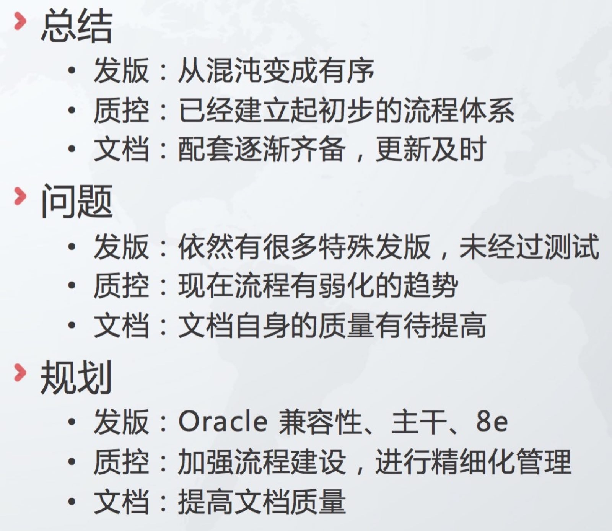 |
| 2017-10-26 07:28:07 | 你 | 
|
| 2017-10-26 07:42:40 | 我 | 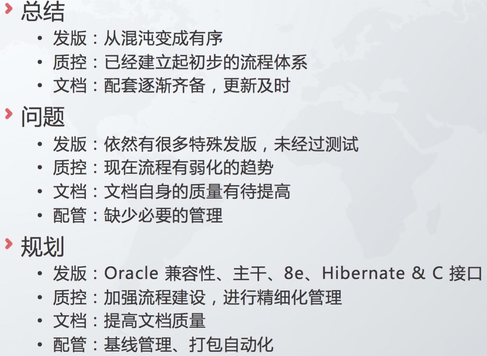 |
| 2017-10-26 07:42:53 | 我 | 新的 |
| 2017-10-26 07:42:56 | 我 | 上车了吗 |
| 2017-10-26 07:48:26 | 你 | 上车了 |
| 2017-10-26 07:48:35 | 你 | 我想眯会， |
| 2017-10-26 07:48:41 | 我 | 嗯嗯，歇会吧 |
| 2017-10-26 08:18:03 | 我 | 亲，你没发外出申请，待会用手机申请吧。另外有任务申请单吗 |
| 2017-10-26 08:30:25 | 你 | 没有 |
| 2017-10-26 08:31:29 | 我 | 那就用手机申请吧，王总怎么连任务申请单都不要，这样费用得咱们自己出😓 |
| 2017-10-26 08:32:11 | 你 | 回去弄吧，手机上不了北森 |
| 2017-10-26 08:32:25 | 我 | 嗯嗯 |
| 2017-10-26 08:32:36 | 你 | 等回头我问问他 |
| 2017-10-26 08:32:43 | 我 | 好 |
| 2017-10-26 08:36:16 | 你 | 下午我自己回去，王总还要去国网 |
| 2017-10-26 08:36:40 | 我 | 啊，真晕 |
| 2017-10-26 08:37:07 | 你 | 而且我们交流的时间改为9:30了 |
| 2017-10-26 08:37:09 | 你 | 哈哈 |
| 2017-10-26 08:37:21 | 我 | 😁 |
| 2017-10-26 08:38:15 | 你 | 你们mpp最近有事吗？ |
| 2017-10-26 08:38:24 | 你 | 做的怎么样 |
| 2017-10-26 08:38:37 | 我 | 大事没有，有些东西需要和蔡刚确认 |
| 2017-10-26 08:38:39 | 你 | 8e的王总回复你了吗？ |
| 2017-10-26 08:39:07 | 你 | 扩容那个性能的能优化下不？ |
| 2017-10-26 08:39:16 | 我 | 另外DMD 的人想回去了，我现在得抓紧找些活让他们干，否则以后就麻烦了 |
| 2017-10-26 08:39:27 | 我 | 王总回复了，待会转给你 |
| 2017-10-26 08:39:44 | 你 | 哦，那就剩你们几个人啦 |
| 2017-10-26 08:39:47 | 我 | 扩容的性能很麻烦，短期内提升不了 |
| 2017-10-26 08:39:56 | 你 | 好吧 |
| 2017-10-26 08:40:09 | 我 | [链接] Yunming和王雪松的聊天记录 |
| 2017-10-26 08:40:28 | 你 | 提升不了最好给廖爱福一个解释，说服他替你们说话 |
| 2017-10-26 08:40:50 | 我 | 我后面就没有回王总，他好像没有理解我说的 |
| 2017-10-26 08:40:56 | 我 | 嗯嗯 |
| 2017-10-26 08:41:16 | 你 | 是呢 |
| 2017-10-26 08:42:00 | 我 | 这事我不想管了，让李瀚直接找王总吧，我估计这次就算能做出来时间也不赶趟了 |
| 2017-10-26 08:42:25 | 我 | 另外晓亮 QT 的事情你和他说过我们之前给 D5000 写过 Demo 吗 |
| 2017-10-26 08:49:10 | 你 | 说了一句，没细说 |
| 2017-10-26 09:23:14 | 我 | 今天高杰没来，我让胖子记会议纪要了 |
| 2017-10-26 09:24:58 | 你 | 到了，王总好像要撇下我去国网 |
| 2017-10-26 09:25:00 | 你 | 我晕 |
| 2017-10-26 09:38:24 | 我 | 啊 |
| 2017-10-26 09:38:36 | 我 | 天哪，怎么能这样 |
| 2017-10-26 09:38:53 | 我 | 还不如带着王旭呢 |
| 2017-10-26 09:40:16 | 你 | 是啊 |
| 2017-10-26 09:40:29 | 你 | 他走了，他的护照没有身份证，不让进 |
| 2017-10-26 09:42:27 | 你 | 只能硬着头皮上了，真无语，这边配了4个研发，看着都有40岁 |
| 2017-10-26 09:42:45 | 你 | 有架构的，有研发的 |
| 2017-10-26 09:54:23 | 我 | 唉 |
| 2017-10-26 09:59:42 | 你 | 现在8a的售前给洗脑呢 |
| 2017-10-26 10:00:03 | 我 | 哈哈 |
| 2017-10-26 10:00:43 | 你 | [链接] 李辉和Yunming的聊天记录 |
| 2017-10-26 10:00:59 | 你 | 晕死了 |
| 2017-10-26 10:08:22 | 我 | 和你一起的还有谁 |
| 2017-10-26 10:23:26 | 你 | 售前也瞎说 |
| 2017-10-26 10:23:34 | 你 | 都不认识 |
| 2017-10-26 10:23:53 | 你 | 石景怡，腊国禄 |
| 2017-10-26 10:24:05 | 我 | 嗯嗯 |
| 2017-10-26 10:24:28 | 你 | 售前 |
| 2017-10-26 10:24:32 | 你 | 瞎说 |
| 2017-10-26 10:25:14 | 你 | 8a哈西一次只能是单列对吧 |
| 2017-10-26 10:25:34 | 你 | 不能两个列联合起来哈希 |
| 2017-10-26 10:30:20 | 我 | 不能 |
| 2017-10-26 10:30:32 | 我 | 我刚刚问了王建忠😁 |
| 2017-10-26 10:30:57 | 你 | 8tmpp 也不行吧 |
| 2017-10-26 10:31:06 | 我 | 不行 |
| 2017-10-26 10:55:56 | 我 | 王旭岭没去吗 |
| 2017-10-26 11:09:30 | 你 | 销售改成腊xx了 |
| 2017-10-26 11:09:43 | 你 | 技术支持的没来 |
| 2017-10-26 11:09:56 | 我 | 呵呵 |
| 2017-10-26 11:09:58 | 你 | 销售的走了，就剩下两个售前 |
| 2017-10-26 11:10:33 | 我 | 你这12点能结束吗 |
| 2017-10-26 11:10:55 | 你 | 还没到我呢，一直销售的在讲 |
| 2017-10-26 11:11:06 | 我 | 啊 |
| 2017-10-26 11:11:08 | 你 | 你帮我想想我要问他们什么问题啊 |
| 2017-10-26 11:11:24 | 你 | 就是问问他们有什么问题 |
| 2017-10-26 11:11:45 | 我 | 唉，我知道，关键是我不知道他们怎么回答，应该是根据他们的回答去问 |
| 2017-10-26 11:12:21 | 你 | 你先跟我说说问题 |
| 2017-10-26 11:12:36 | 你 | 我自己大致判断下，不行过几天再来吧 |
| 2017-10-26 11:12:39 | 我 | 嗯嗯，我先看看以前的邮件 |
| 2017-10-26 11:12:51 | 你 | 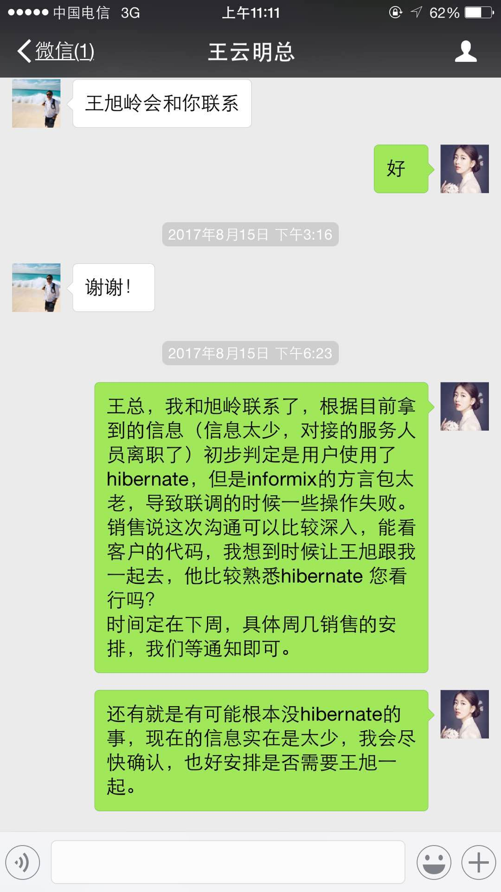 |
| 2017-10-26 11:13:18 | 你 | 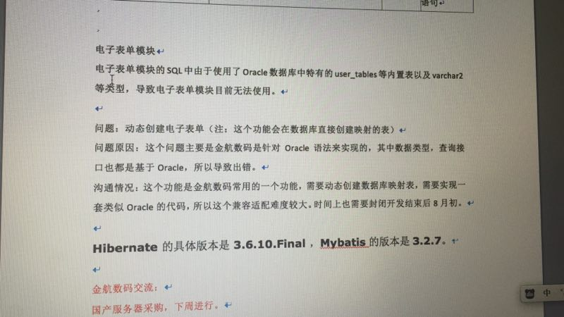 |
| 2017-10-26 11:14:09 | 你 | 就这么多 |
| 2017-10-26 11:14:22 | 我 | 那就让他们说一下具体的错误信息 |
| 2017-10-26 11:14:49 | 我 | 问问他们有没有错误日志什么的 |
| 2017-10-26 11:15:16 | 我 | 他们使用的是什么 ORM，Hibernate 还是 Mybatis，还是两个都要用 |
| 2017-10-26 11:15:51 | 我 | 最好他们能提供错误相关的程序代码，或者能够复现问题的代码，这样我们好定位问题 |
| 2017-10-26 11:16:02 | 你 | 嗯 |
| 2017-10-26 11:17:08 | 我 | 还有一个，就是让他们写一个邮件，说明一下电子表单的业务逻辑，都使用了 oracle 的哪些功能 |
| 2017-10-26 11:17:46 | 你 | 嗯 |
| 2017-10-26 12:04:24 | 我 | 怎么样，结束了吗 |
| 2017-10-26 12:13:07 | 你 | 结束了 |
| 2017-10-26 12:13:16 | 你 | 根本不是咱们想的那样子 |
| 2017-10-26 12:13:21 | 你 | 超级简单 |
| 2017-10-26 12:13:31 | 你 | 我自己就搞定了 |
| 2017-10-26 12:13:53 | 我 | 😄。👍 |
| 2017-10-26 12:25:32 | 我 | 你几点回来 |
| 2017-10-26 12:31:35 | 你 | 马上去地铁站 |
| 2017-10-26 12:31:49 | 我 | 嗯嗯 |
| 2017-10-26 12:50:52 | 你 | 我问了，没有hibernate的事 |
| 2017-10-26 12:51:23 | 我 | 那就简单了 |
| 2017-10-26 12:51:28 | 你 | 就是一些不兼容的语法，他们让写出8t对应的，然后他们改 |
| 2017-10-26 12:51:37 | 你 | 我给你转一个邮件 |
| 2017-10-26 12:51:48 | 你 | 地铁信号不好 |
| 2017-10-26 12:51:57 | 我 | 👌不急 |
| 2017-10-26 12:52:56 | 你 | 但是需要comment |
| 2017-10-26 12:53:30 | 我 | 嗯嗯 |
| 2017-10-26 12:53:36 | 你 | 你给小亮打电话了吗？ |
| 2017-10-26 12:54:10 | 我 | 打完了，代码已经发给他了。他先试试 |
| 2017-10-26 13:07:20 | 你 | 嗯 |
| 2017-10-26 13:31:50 | 我 | 吃饭了吗 |
| 2017-10-26 13:32:22 | 你 | 吃了，在金航吃的 |
| 2017-10-26 13:33:14 | 我 | 嗯嗯，累了吗 |
| 2017-10-26 13:33:49 | 你 | 还行吧，有点困 |
| 2017-10-26 13:34:53 | 我 | 几点的车，在车上睡会吧 |
| 2017-10-26 13:35:22 | 你 | 没事 |
| 2017-10-26 13:37:17 | 你 | |
| 2017-10-26 13:37:27 | 你 | |
| 2017-10-26 13:37:48 | 你 | |
| 2017-10-26 13:38:01 | 你 | |
| 2017-10-26 13:38:21 | 你 | |
| 2017-10-26 13:38:25 | 你 | |
| 2017-10-26 13:38:49 | 我 | 哈哈 |
| 2017-10-26 13:39:09 | 我 | 你一去就镇住他们了 |
| 2017-10-26 13:39:14 | 你 | |
| 2017-10-26 13:39:21 | 我 | 啥问题都没了 |
| 2017-10-26 13:39:30 | 你 | |
| 2017-10-26 13:39:39 | 你 | |
| 2017-10-26 13:39:54 | 你 | |
| 2017-10-26 13:40:08 | 你 | |
| 2017-10-26 13:40:22 | 你 | |
| 2017-10-26 13:40:36 | 你 | |
| 2017-10-26 13:40:45 | 你 | |
| 2017-10-26 13:41:27 | 你 | |
| 2017-10-26 13:41:48 | 你 | |
| 2017-10-26 13:42:01 | 你 | |
| 2017-10-26 13:42:09 | 你 | |
| 2017-10-26 13:42:46 | 我 | 嗯嗯，不错不错 |
| 2017-10-26 13:42:48 | 你 | |
| 2017-10-26 13:43:04 | 你 | |
| 2017-10-26 13:43:14 | 我 | 😄 |
| 2017-10-26 13:44:48 | 你 | |
| 2017-10-26 13:44:58 | 你 | |
| 2017-10-26 13:45:45 | 我 | 哈哈，说明你是福将呀 |
| 2017-10-26 13:45:54 | 我 | 只要你出马就没有问题了 |
| 2017-10-26 13:46:12 | 我 | 我的培训安排到4点了 |
| 2017-10-26 13:46:13 | 你 | |
| 2017-10-26 13:46:25 | 你 | |
| 2017-10-26 13:46:52 | 我 | 应该是在我后面吧 |
| 2017-10-26 13:46:58 | 你 | |
| 2017-10-26 13:47:23 | 你 | |
| 2017-10-26 13:49:13 | 我 | 哈哈，他们也不懂呀 |
| 2017-10-26 13:50:55 | 你 | 是啊，说明一点基础都没有 |
| 2017-10-26 13:55:13 | 我 | 你今天上午发的仪电物联go 适配的需求，我记得好像之前刘畅那个 QT 项目里面提到了科东有 go 的适配 |
| 2017-10-26 13:56:32 | 你 | 是 |
| 2017-10-26 13:57:25 | 我 | 不行让他们去问问，科东是怎么做适配的，咱们也学习学习[呲牙] |
| 2017-10-26 13:57:40 | 你 | 可以， |
| 2017-10-26 13:57:48 | 你 | 你会go吗？ |
| 2017-10-26 13:57:53 | 我 | 我会呀 |
| 2017-10-26 13:58:02 | 我 | 我估计咱们部门也就我一个会了 |
| 2017-10-26 13:58:13 | 你 | 我们怎么可能跟一个语言适配呢 |
| 2017-10-26 13:58:38 | 我 | go 有一个数据库接口，我们就实现这个接口就行了 |
| 2017-10-26 13:59:41 | 你 | 我带了充电宝，带错线了 |
| 2017-10-26 13:59:51 | 我 | 啊 |
| 2017-10-26 14:00:09 | 你 | 真晕 |
| 2017-10-26 14:00:12 | 我 | 还有多少电 |
| 2017-10-26 14:00:14 | 你 | 还有23 |
| 2017-10-26 14:00:28 | 我 | 歇会吧，别聊了，回来赶紧充电 |
| 2017-10-26 14:00:36 | 你 | 
|
| 2017-10-26 14:34:58 | 你 | 上车了 |
| 2017-10-26 14:35:18 | 我 | 嗯嗯 |
| 2017-10-26 15:13:20 | 你 | 感觉咱们部门就是高杰和王总对话 |
| 2017-10-26 15:13:28 | 你 | 就这么俩闲人 |
| 2017-10-26 15:13:47 | 我 | 是的 |
| 2017-10-26 15:14:19 | 你 | 我还是觉得出差好玩 |
| 2017-10-26 15:14:33 | 你 | 长见识哈哈 |
| 2017-10-26 15:14:35 | 我 | 😀 |
| 2017-10-26 15:14:49 | 我 | 是，应该多出去 |
| 2017-10-26 15:32:37 | 我 | 下车了吗 |
| 2017-10-26 15:58:11 | 我 | 去529 |
| 2017-10-26 15:59:02 | 你 | 好 |
{kind=link}
{kind=link}
{kind=link}
{kind=link}
2017-10-27¶
| 2017-10-27 09:23:58 | 你 | 废话好多 |
| 2017-10-27 09:24:15 | 我 | 嗯嗯 |
| 2017-10-27 09:25:59 | 你 | 人家孙世霖情何以堪 |
| 2017-10-27 09:26:03 | 你 | 真晕 |
| 2017-10-27 09:26:19 | 我 | 😃 |
| 2017-10-27 09:26:30 | 你 | 他非得点名表扬么 |
| 2017-10-27 09:26:45 | 我 | 关键是不会说 |
| 2017-10-27 09:26:52 | 你 | 测试加班多，还说人家效率低 |
| 2017-10-27 09:26:56 | 你 | 我靠 |
| 2017-10-27 09:27:00 | 我 | 说得大家都心寒 |
| 2017-10-27 09:27:13 | 你 | 我要是测试的，以后才不加班 |
| 2017-10-27 09:27:22 | 我 | 是 |
| 2017-10-27 09:35:43 | 你 | Oh my dear God |
| 2017-10-27 09:35:55 | 我 | 哈哈 |
| 2017-10-27 09:36:02 | 我 | 真醉了 |
| 2017-10-27 09:36:03 | 你 | 赶紧别说了 |
| 2017-10-27 09:36:12 | 你 | 我都觉得丢人 |
| 2017-10-27 09:36:18 | 我 | 是 |
| 2017-10-27 09:37:10 | 你 | Too young too天真 |
| 2017-10-27 09:37:18 | 我 | 嗯嗯 |
| 2017-10-27 10:19:23 | 你 | 讲得真👍 |
| 2017-10-27 11:13:02 | 你 | 要吐了 |
| 2017-10-27 11:13:18 | 我 | 😀 |
| 2017-10-27 11:18:30 | 你 | 要吐了 |
| 2017-10-27 11:18:43 | 你 | [吐][吐][吐][吐][吐][吐] |
| 2017-10-27 11:18:45 | 我 | 哈哈 |
| 2017-10-27 11:18:58 | 你 | 要吐了 |
| 2017-10-27 11:19:02 | 你 | 要吐了 |
| 2017-10-27 11:19:09 | 我 | 今天你都要吐两回了 |
| 2017-10-27 11:19:24 | 你 | 啥意思 |
| 2017-10-27 11:19:28 | 我 | 别听他们了 |
| 2017-10-27 11:19:38 | 我 | 说你呢 |
| 2017-10-27 11:19:50 | 我 | 😄 |
| 2017-10-27 11:19:52 | 你 | 我才不理他 |
| 2017-10-27 11:20:00 | 你 | 恶心 |
| 2017-10-27 11:20:04 | 我 | 这个小白太好玩了 |
| 2017-10-27 11:20:10 | 你 | 是 |
| 2017-10-27 12:14:12 | 我 | 我去锦江吃饭 |
| 2017-10-27 12:17:54 | 你 | 你自己啊 |
| 2017-10-27 12:18:16 | 我 | 是，胖子回家了，王志和你们吃 |
| 2017-10-27 12:18:47 | 你 | 严丹吃了？ |
| 2017-10-27 12:18:59 | 我 | 是 |
| 2017-10-27 12:19:40 | 你 | 好吧，耍单了还 |
| 2017-10-27 12:20:24 | 我 | 是呢，你赶紧吃吧，吃完睡会 |
| 2017-10-27 13:43:20 | 我 | 你们出发了吗 |
| 2017-10-27 13:45:23 | 你 | 出发了，我和阿娇在王总的车里 |
| 2017-10-27 13:45:34 | 我 | 好的 |
| 2017-10-27 13:45:49 | 我 | 你坐副驾吗 |
| 2017-10-27 13:47:41 | 你 | 我俩都在后边 |
| 2017-10-27 13:47:51 | 我 | 嗯嗯 |
| 2017-10-27 13:53:08 | 你 | 王总一直说话， |
| 2017-10-27 13:53:14 | 你 | 不停 |
| 2017-10-27 13:53:47 | 我 | 哈哈，他本来就喜欢说话，再加上你这个大美女在车上，当然就会不停地说啦 |
| 2017-10-27 13:55:05 | 你 | 阿娇也在 |
| 2017-10-27 13:55:36 | 我 | 阿娇哪有你漂亮 |
| 2017-10-27 14:30:09 | 我 | [链接] 倾心蓝鸟和王雪松的聊天记录 |
| 2017-10-27 14:31:34 | 你 | 真晕 |
| 2017-10-27 14:31:45 | 你 | 王总走错了，他还怪我[微笑] |
| 2017-10-27 14:31:55 | 我 | 他每次都走错 |
| 2017-10-27 14:32:00 | 你 | 是 |
| 2017-10-27 14:32:01 | 我 | 你就别理他 |
| 2017-10-27 14:32:13 | 你 | 没责备，就是随口说的 |
| 2017-10-27 14:32:30 | 我 | 嗯 |
| 2017-10-27 14:34:48 | 我 | 哈哈，你都快成一个大调度了 |
| 2017-10-27 14:35:01 | 我 | 简直就是现场直播呀 |
| 2017-10-27 14:35:20 | 你 | 哈哈，你好知道我们的近况啊 |
| 2017-10-27 14:35:31 | 我 | 嗯嗯，是的 |
| 2017-10-27 14:37:16 | 你 | 我做什么你都觉得好，看来你对我是真爱 |
| 2017-10-27 14:37:33 | 我 | 哈哈，当然啦 |
| 2017-10-27 14:39:39 | 你 | 王总车上没有人，我看他心里没底，我说我跟他一起走，他特别高兴 |
| 2017-10-27 14:39:54 | 我 | 嗯嗯 |
| 2017-10-27 14:39:55 | 你 | 一个人走是有点风险 |
| 2017-10-27 14:40:04 | 我 | 高杰怎么不和他一起走 |
| 2017-10-27 14:40:10 | 你 | 后来我就拉着阿娇一起了 |
| 2017-10-27 14:40:16 | 你 | 高杰也开车了 |
| 2017-10-27 14:40:21 | 我 | 嗯嗯 |
| 2017-10-27 14:40:25 | 你 | 只有我了也 |
| 2017-10-27 14:40:35 | 你 | 别人都不敢坐 |
| 2017-10-27 14:40:41 | 你 | 不乐意做 |
| 2017-10-27 14:40:52 | 我 | 哈哈 |
| 2017-10-27 14:40:55 | 你 | 阿娇撅着大嘴跟我一起 |
| 2017-10-27 14:41:13 | 我 | 是，他们都不想和领导一起 |
| 2017-10-27 14:41:39 | 你 | 是 |
| 2017-10-27 14:42:01 | 我 | 不过王总的车大，坐着舒服 |
| 2017-10-27 14:42:26 | 你 | 是，真舒服 |
| 2017-10-27 14:48:19 | 你 | 快到服务区了 |
| 2017-10-27 14:48:31 | 我 | 嗯嗯，挺快的 |
| 2017-10-27 15:41:41 | 我 | 你们咋不直播了 |
| 2017-10-27 15:42:04 | 你 | 高速上比较顺利 |
| 2017-10-27 15:42:16 | 我 | 嗯嗯，困吗 |
| 2017-10-27 15:42:44 | 你 | 我没机会睡，竟陪他聊天了 |
| 2017-10-27 15:43:22 | 我 | 唉，累坏了吧 |
| 2017-10-27 15:44:02 | 你 | 有点 |
| 2017-10-27 15:44:55 | 我 | 晚上早点休息吧，明天还要爬山呢 |
| 2017-10-27 15:45:07 | 你 | 是 |
| 2017-10-27 15:45:35 | 我 | 这次整的太紧张了 |
| 2017-10-27 15:46:03 | 你 | 是 |
| 2017-10-27 15:47:17 | 我 | 我喊刘畅过来面谈，人家正在园区遛弯呢 |
| 2017-10-27 15:47:28 | 你 | 呵呵 |
| 2017-10-27 15:47:57 | 我 | 看看待会能谈出啥吧 |
| 2017-10-27 15:48:28 | 你 | 估计没啥 |
| 2017-10-27 15:48:58 | 我 | 是 |
| 2017-10-27 15:49:14 | 我 | 这家伙估计又是一堆的抱怨 |
| 2017-10-27 15:49:23 | 你 | 是 |
| 2017-10-27 15:50:15 | 我 | 你不在我感觉好不习惯 |
| 2017-10-27 15:50:27 | 你 | 真的吗？ |
| 2017-10-27 15:50:34 | 你 | 开心 |
| 2017-10-27 15:50:35 | 我 | 真的 |
| 2017-10-27 15:50:56 | 我 | [动画表情] |
| 2017-10-27 15:53:18 | 我 | 你今天好像打了我两次 |
| 2017-10-27 15:54:35 | 你 | 不乐意了 |
| 2017-10-27 15:55:17 | 我 | 哈哈，恰好相反 |
| 2017-10-27 15:56:14 | 我 | 那天得考虑一下打回来[偷笑] |
| 2017-10-27 15:56:43 | 你 | 敢！！！！ |
| 2017-10-27 15:57:28 | 我 | 哦，好吧，最多再让你多打两下 |
| 2017-10-27 16:07:07 | 你 | 到了，还不错 |
| 2017-10-27 16:07:14 | 你 | 挺干净的 |
| 2017-10-27 16:07:42 | 我 | 嗯嗯，我们正在聊呢 |
| 2017-10-27 16:07:54 | 你 | 聊吧 |
| 2017-10-27 16:07:55 | 我 | 待会给你八卦八卦 |
| 2017-10-27 16:08:04 | 你 | 好 |
| 2017-10-27 17:12:44 | 你 | 聊的怎么样 |
| 2017-10-27 17:12:54 | 你 | 刚才打麻将了，特别无聊 |
| 2017-10-27 17:13:05 | 你 | 我赢了好几把 |
| 2017-10-27 17:13:10 | 我 | 还没聊完呢 |
| 2017-10-27 17:13:24 | 你 | 都聊啥了 |
| 2017-10-27 17:13:50 | 我 | 现在聊配管 |
| 2017-10-27 18:17:24 | 我 | 终于谈完了。累死我了 |
| 2017-10-27 18:17:27 | 我 | 你干啥呢 |
| 2017-10-27 18:19:09 | 我 | 刘畅昨天找王总谈了，想把发版这些事情都推掉，想去做文档。原因竟然是因为他觉得再也没法做到王欣或者陈婕这样程度了 |
| 2017-10-27 18:20:52 | 我 | 当初他不是管王总的报销吗，后来因为他老公的事情高总让他选是走人还是去行政，他又求王总给他求情，结果是赵总要求的把报销这些事情交给高杰 |
| 2017-10-27 18:22:16 | 我 | 今天他才跟我说，人家原来的目标是王欣和陈婕，想做王总的秘书。结果把报销这事交给高杰，他就觉得自己的路没了，人生从此了无乐趣了😁 |
| 2017-10-27 18:23:17 | 你 | 真恶心 |
| 2017-10-27 18:23:27 | 你 | 今天算是恶心的事 |
| 2017-10-27 18:23:34 | 我 | 是 |
| 2017-10-27 18:29:10 | 你 | 吃完了 |
| 2017-10-27 18:29:36 | 我 | 嗯嗯，你们什么时候开始讲总结 |
| 2017-10-27 18:29:51 | 你 | 不讲了，不了了之 |
| 2017-10-27 18:29:59 | 我 | 呵呵 |
| 2017-10-27 18:30:08 | 你 | 想做秘书，就他，还不够格 |
| 2017-10-27 18:30:17 | 你 | 他以为秘书就是拍马屁啊 |
| 2017-10-27 18:30:51 | 你 | 她不管发版你正好给我，我给管 |
| 2017-10-27 18:31:16 | 我 | 对呀，而且他也不想想，秘书是啥人都可以当的 |
| 2017-10-27 18:31:31 | 你 | 就是呗 |
| 2017-10-27 18:31:45 | 我 | 赵总明显是想让高杰当秘书，这种位置当然是得自己人啦，他又不是赵总的人 |
| 2017-10-27 18:31:46 | 你 | 这种人，就是想不劳而获 |
| 2017-10-27 18:31:54 | 你 | 就是呗 |
| 2017-10-27 18:32:00 | 你 | 明显是高杰 |
| 2017-10-27 18:32:04 | 我 | 没错，我今天一听就懒得和他谈了 |
| 2017-10-27 18:32:09 | 我 | 太明显了 |
| 2017-10-27 18:32:17 | 我 | 比王志还明显 |
| 2017-10-27 18:32:18 | 你 | 她等到现在才反应过来，简直了 |
| 2017-10-27 18:32:38 | 我 | 这仨人，高杰、刘畅、王志，一个赛一个的 |
| 2017-10-27 18:32:43 | 你 | 是 |
| 2017-10-27 18:33:28 | 你 | 但高杰好在师出有名 |
| 2017-10-27 18:33:34 | 你 | 赵总点的 |
| 2017-10-27 18:34:08 | 我 | 没错 |
| 2017-10-27 18:36:07 | 我 | 不过赵总确实够厉害的，让刘畅交工作，就把报销这类工作交出来，这下王总就更依赖高杰了 |
| 2017-10-27 18:39:11 | 你 | 那必须的 |
| 2017-10-27 18:42:02 | 我 | 你们干啥呢 |
| 2017-10-27 18:47:41 | 你 | 吃饭呢 |
| 2017-10-27 18:47:52 | 你 | 吃了半个小时我就吃完了 |
| 2017-10-27 18:48:09 | 我 | 你吃的真快 |
| 2017-10-27 18:49:08 | 你 | 特无聊 |
| 2017-10-27 18:49:20 | 你 | 还说啥了 |
| 2017-10-27 18:50:12 | 我 | 王总还想让她管发版 |
| 2017-10-27 18:50:46 | 我 | 他们谈了很久，王总还给她讲寓言故事，劝她接着干[偷笑] |
| 2017-10-27 18:51:54 | 我 | 王总还说好不容易把刘畅保下来了，结果又不干了，让王总太没面子了[呲牙] |
| 2017-10-27 18:56:15 | 你 | 是 |
| 2017-10-27 18:56:30 | 你 | 关键刘畅太不靠谱了 |
| 2017-10-27 18:56:54 | 我 | 没错 |
| 2017-10-27 18:57:07 | 我 | 她太投机了 |
| 2017-10-27 18:57:18 | 你 | 是 |
| 2017-10-27 18:57:29 | 你 | 唉 |
| 2017-10-27 18:57:30 | 我 | 心术不正 |
| 2017-10-27 18:57:34 | 你 | 是 |
| 2017-10-27 18:57:41 | 你 | 太投机了 |
| 2017-10-27 19:01:06 | 我 | 你们晚上什么活动 |
| 2017-10-27 19:02:21 | 你 | 没什么活动 |
| 2017-10-27 19:02:48 | 我 | 原来不是说有篝火晚会吗 |
| 2017-10-27 19:03:21 | 你 | 没有 |
| 2017-10-27 19:03:46 | 我 | 啊，那就是自由活动了 |
| 2017-10-27 19:16:41 | 我 | 哈哈，有人给你献花啦🌹 |
| 2017-10-27 19:24:46 | 你 | 这么讨厌 |
| 2017-10-27 19:25:02 | 我 | 不高兴啦？ |
| 2017-10-27 19:25:20 | 你 | 没有 |
| 2017-10-27 19:25:24 | 你 | 不好看 |
| 2017-10-27 19:25:44 | 我 | 那倒是，怎么也得是个帅哥呀 |
| 2017-10-27 19:26:13 | 你 | 我不好看 |
| 2017-10-27 19:27:17 | 我 | 没有呀，我觉得挺好看的 |
| 2017-10-27 19:37:33 | 我 | 特别是头发 |
| 2017-10-27 19:59:10 | 你 | 你下班了吗？ |
| 2017-10-27 19:59:24 | 我 | 没有呢，得9点 |
| 2017-10-27 20:09:45 | 你 | 唱歌呢 |
| 2017-10-27 20:09:54 | 我 | 嗯嗯 |
| 2017-10-27 20:10:47 | 你 | 张杰唱的歌都没有调 |
| 2017-10-27 20:11:16 | 我 | 哈哈，我看高杰还说好听呢 |
| 2017-10-27 20:16:13 | 你 | 比上次还好很多 |
| 2017-10-27 20:16:45 | 我 | 嗯嗯 |
| 2017-10-27 20:18:27 | 你 | 李培晟是麦霸，他唱的别人都不会唱 |
| 2017-10-27 20:18:40 | 你 | 他是真霸 |
| 2017-10-27 20:18:43 | 我 | 是 |
| 2017-10-27 20:18:56 | 你 | 王总都没机会，也是醉了 |
| 2017-10-27 20:19:03 | 我 | 哈哈 |
| 2017-10-27 20:19:47 | 你 | 这次没有上次那气氛好 |
| 2017-10-27 20:19:57 | 我 | 是不是人少呀 |
| 2017-10-27 20:20:16 | 你 | |
| 2017-10-27 20:20:25 | 你 | 还是上次那几个人 |
| 2017-10-27 20:20:37 | 我 | 其他人呢？都去打麻将了？ |
| 2017-10-27 20:20:49 | 你 | 嗯 |
| 2017-10-27 20:27:18 | 你 | 听听胜利唱的 |
| 2017-10-27 20:30:11 | 我 | 哈哈，简直啦 |
| 2017-10-27 20:42:51 | 你 | 他还唱一首大国民 |
| 2017-10-27 20:43:04 | 我 | 哈哈 |
| 2017-10-27 20:43:16 | 我 | 这家伙，太自不量力了 |
| 2017-10-27 20:43:26 | 你 | 唱的还挺好 |
| 2017-10-27 20:43:31 | 你 | 可搞笑了 |
| 2017-10-27 20:43:39 | 我 | 哈哈 |
| 2017-10-27 20:58:28 | 我 | 我在你们唱歌的时候搞定了 go 语言的 8t 驱动，可以使用 go 读写8t 啦✌️ |
| 2017-10-27 20:58:48 | 你 | 好么 |
| 2017-10-27 20:59:08 | 我 | 我是不是应该转到大群里面😁 |
| 2017-10-27 20:59:36 | 你 | 可以 |
| 2017-10-27 21:57:39 | 你 | 我们唱完了 |
| 2017-10-27 21:57:52 | 你 | 你到家了吗？ |
| 2017-10-27 21:58:05 | 我 | 到家了 |
| 2017-10-27 21:58:37 | 你 | 今天唱歌太搞笑了， |
| 2017-10-27 21:58:49 | 你 | 把你的go都淹没了 |
| 2017-10-27 21:59:22 | 我 | 哈哈，关键是我自己高兴 |
| 2017-10-27 21:59:38 | 我 | 解决了一个我一直想解决的大问题 |
| 2017-10-27 21:59:50 | 你 | 那是 |
| 2017-10-27 22:00:00 | 我 | 明天我就拿go写几个测试用例 |
| 2017-10-27 22:00:22 | 我 | 没准一高兴我就自己整个go版的UTM[呲牙] |
| 2017-10-27 22:02:01 | 你 | 厉害 |
| 2017-10-27 22:02:59 | 你 | 我没带充电器的头，真晕 |
| 2017-10-27 22:03:02 | 我 | 要不是还有mpp和ppt，这种生活多有趣呀 |
| 2017-10-27 22:03:05 | 我 | 啊 |
| 2017-10-27 22:03:19 | 我 | 借一个吧 |
| 2017-10-27 22:03:30 | 我 | 应该有人有 |
| 2017-10-27 22:07:48 | 你 | 借的王总的 |
| 2017-10-27 22:07:54 | 你 | 刘畅还跟你说啥了 |
| 2017-10-27 22:08:46 | 我 | 没啥了，就是抱怨高杰和王总 |
| 2017-10-27 22:08:53 | 我 | 反反复复的说 |
| 2017-10-27 22:10:03 | 你 | 呵呵，我觉得她有抑郁症 |
| 2017-10-27 22:10:11 | 你 | 你们沟通有结论吗？ |
| 2017-10-27 22:10:47 | 我 | 没啥，还维持现状呗 |
| 2017-10-27 22:11:02 | 你 | 她还想跟王欣陈捷一样，就她这个团建腾不出身来，就不行 |
| 2017-10-27 22:11:44 | 你 | 你看她心根本就没在质控上 |
| 2017-10-27 22:11:55 | 我 | 她呀，光看见贼吃肉了 |
| 2017-10-27 22:11:56 | 你 | 就想搞关系 |
| 2017-10-27 22:12:00 | 我 | 是 |
| 2017-10-27 22:12:13 | 你 | 还这么低级 |
| 2017-10-27 22:12:22 | 我 | 说实话我还真希望当初她调走 |
| 2017-10-27 22:12:26 | 你 | 你说世上就有这样的人 |
| 2017-10-27 22:12:36 | 我 | 换一个一定比他强 |
| 2017-10-27 22:12:37 | 你 | 就是，走了似的也清静 |
| 2017-10-27 22:12:42 | 你 | 是 |
| 2017-10-27 22:13:07 | 你 | 别等着以后扒着你 |
| 2017-10-27 22:13:27 | 你 | 要是你是部门经理了，还得扒着你呢 |
| 2017-10-27 22:13:33 | 我 | 我才不管他呢 |
| 2017-10-27 22:13:50 | 你 | 说实在的，你也得物色个人了， |
| 2017-10-27 22:14:01 | 你 | 现在看肯定是我 |
| 2017-10-27 22:14:04 | 我 | 你呀 |
| 2017-10-27 22:14:10 | 我 | 只有你了 |
| 2017-10-27 22:14:11 | 你 | 我做你秘书，你不亏吧 |
| 2017-10-27 22:14:28 | 我 | 当然啦，这是我的荣幸 |
| 2017-10-27 22:14:46 | 你 | 以后咱俩必须努力，把你送到部门经理的位置上 |
| 2017-10-27 22:15:03 | 你 | 这可不是一年两年的事 |
| 2017-10-27 22:15:08 | 我 | 嗯嗯 |
| 2017-10-27 22:15:36 | 你 | 其实我是不乐意做秘书的，不过做你秘书，我肯定吃不了亏 |
| 2017-10-27 22:15:51 | 你 | 你肯定会给我想要的 |
| 2017-10-27 22:16:03 | 我 | 嗯嗯 |
| 2017-10-27 22:16:04 | 你 | 不会让我打杂 |
| 2017-10-27 22:16:09 | 我 | 当然啦 |
| 2017-10-27 22:16:20 | 你 | 你要是部门经理得多好啊， |
| 2017-10-27 22:16:25 | 我 | 是 |
| 2017-10-27 22:16:59 | 你 | 你知道我今天听你汇报，感觉王总是给你汇报的，你是根据他汇报的结论拔高的 |
| 2017-10-27 22:17:21 | 你 | 其实你现在的能力，做部门经理完全没问题 |
| 2017-10-27 22:17:34 | 你 | 就是没人，没机会 |
| 2017-10-27 22:17:37 | 我 | 哈哈 |
| 2017-10-27 22:17:41 | 你 | 你自己也得积极点 |
| 2017-10-27 22:17:45 | 我 | 嗯嗯 |
| 2017-10-27 22:17:52 | 你 | 我有的时候看着你都着急 |
| 2017-10-27 22:18:02 | 我 | 恩 |
| 2017-10-27 22:18:34 | 我 | 别着急，回来急坏了你 |
| 2017-10-27 22:19:42 | 你 | 不会的 |
| 2017-10-27 22:20:02 | 你 | 我就是说说，这种事急也不行 |
| 2017-10-27 22:20:16 | 我 | 嗯嗯 |
| 2017-10-27 22:20:21 | 你 | 你知道不忘初心吗？ |
| 2017-10-27 22:20:28 | 我 | 知道 |
| 2017-10-27 22:22:35 | 你 | 我对你就是 |
| 2017-10-27 22:22:49 | 我 | 嗯嗯，我知道 |
| 2017-10-27 22:22:59 | 我 | 我非常珍惜 |
| 2017-10-27 22:50:28 | 我 | 睡了吗 |
{kind=link}
2017-10-28¶
| 2017-10-28 06:59:37 | 你 | 累死我了 |
| 2017-10-28 06:59:43 | 你 | 还没爬山 |
| 2017-10-28 07:00:19 | 我 | 啊，没睡好吗 |
| 2017-10-28 07:00:36 | 你 | 睡不着 |
| 2017-10-28 07:00:57 | 你 | 昨天跟他们玩三国杀了 |
| 2017-10-28 07:01:18 | 你 | 一局玩了1个小时，12点才回来 |
| 2017-10-28 07:01:19 | 我 | 哦，玩到几点 |
| 2017-10-28 07:01:33 | 我 | 是有点晚了 |
| 2017-10-28 07:01:35 | 你 | 一直也玩不完 |
| 2017-10-28 07:02:08 | 我 | 唉，再歇会吧 |
| 2017-10-28 07:51:40 | 你 | 到现在还没吃饭 |
| 2017-10-28 07:52:04 | 我 | 啊，怎么安排的 |
| 2017-10-28 07:52:38 | 我 | 饿坏了吧 |
| 2017-10-28 07:52:52 | 你 | 嗯，我吃了个香蕉 |
| 2017-10-28 07:53:27 | 我 | 嗯嗯 |
| 2017-10-28 07:53:41 | 我 | 冷吗 |
| 2017-10-28 08:20:42 | 你 | 不冷 |
| 2017-10-28 08:21:42 | 我 | 吃完了吧 |
| 2017-10-28 08:22:00 | 你 | 还在吃 |
| 2017-10-28 08:22:06 | 我 | 你们那有雾吗 |
| 2017-10-28 08:22:32 | 我 | 市里雾很大 |
| 2017-10-28 08:26:24 | 你 | 看着还行 |
| 2017-10-28 08:42:21 | 我 | 出发了吗 |
| 2017-10-28 11:07:55 | 我 | 哈哈，我把 python 的8t 驱动也搞定了✌️ |
| 2017-10-28 11:08:30 | 你 | 啊，你开挂了 |
| 2017-10-28 11:08:58 | 我 | 哈哈，太高兴了 |
| 2017-10-28 11:09:14 | 你 | 嗯嗯 |
| 2017-10-28 11:51:06 | 我 | 你爬到那里了 |
| 2017-10-28 13:02:12 | 你 | 快被冻死了 |
| 2017-10-28 13:02:23 | 你 | 我是第三名 |
| 2017-10-28 13:02:29 | 我 | 啊，这么冷呀，可千万别感冒 |
| 2017-10-28 13:02:40 | 我 | 嗯嗯，真棒👍 |
| 2017-10-28 13:02:55 | 你 | 能得红包 |
| 2017-10-28 13:03:41 | 我 | 嗯 |
| 2017-10-28 13:03:47 | 我 | 真不错 |
| 2017-10-28 15:17:58 | 我 | 你怎么不坐王总的车了 |
| 2017-10-28 15:18:39 | 你 | 王总没登顶，早上爬了一会就回去了 |
| 2017-10-28 15:18:45 | 你 | 他哥哥来了 |
| 2017-10-28 15:18:55 | 你 | 接他妈妈回四川 |
| 2017-10-28 15:19:03 | 我 | 哦，把你们甩下了 |
| 2017-10-28 15:19:09 | 你 | 是 |
| 2017-10-28 15:19:19 | 你 | 你几点下班 |
| 2017-10-28 15:19:23 | 我 | 今天累吗 |
| 2017-10-28 15:19:27 | 我 | 我6点下班 |
| 2017-10-28 15:19:53 | 你 | 累死了，累哭了都 |
| 2017-10-28 15:20:28 | 我 | 啊 |
| 2017-10-28 15:20:31 | 我 | 好心疼 |
| 2017-10-28 17:22:09 | 你 | |
| 2017-10-28 21:32:29 | 你 | 登顶红包才10块钱，还不知道领对了还是错了，到底闹哪样，真晕。别回了 |
2017-10-30¶
| 2017-10-30 09:09:25 | 我 | 刚来你就这么忙😁 |
| 2017-10-30 09:09:49 | 你 | 是啊 这个表周五爱福就跟我要 我说今天给他 |
| 2017-10-30 09:10:01 | 你 | 10点开会的话 我10点前就得发给他 |
| 2017-10-30 09:10:02 | 我 | 嗯嗯 |
| 2017-10-30 09:19:28 | 你 | 一会我把进展的发邮件，你可以从邮件里看 |
| 2017-10-30 09:19:53 | 我 | 👌 |
| 2017-10-30 09:35:00 | 你 | 文档的邮件你看了吗 |
| 2017-10-30 09:35:16 | 我 | 看了 |
| 2017-10-30 09:35:54 | 你 | 开发指南应该有吧 |
| 2017-10-30 09:36:19 | 我 | 应该有 |
| 2017-10-30 09:37:37 | 你 | 我这的中文资料里没有 |
| 2017-10-30 09:37:41 | 你 | 你问问贾工吧 |
| 2017-10-30 09:38:01 | 我 | 没事，大不了让他们翻译就行了 |
| 2017-10-30 09:38:11 | 你 | 是 |
| 2017-10-30 10:16:40 | 你 | [链接] 李辉和孙晓亮的聊天记录 |
| 2017-10-30 10:18:50 | 我 | 你让晓亮多提几个平台，正好作为8e的需求 |
| 2017-10-30 10:25:28 | 你 | [链接] 李辉和孙晓亮的聊天记录 |
| 2017-10-30 10:26:08 | 我 | 👌 |
| 2017-10-30 10:46:01 | 你 | 你现在好忙啊 |
| 2017-10-30 10:46:04 | 你 | 都见不到面 |
| 2017-10-30 10:46:42 | 我 | 是，一堆的破事 |
| 2017-10-30 10:49:53 | 你 | 我准备写一封邮件给李俊旗，让他接手金航数码的事 |
| 2017-10-30 10:50:12 | 我 | 嗯嗯 |
| 2017-10-30 10:50:13 | 你 | 我写一封给王总吧 |
| 2017-10-30 10:50:19 | 你 | 说明这件事 |
| 2017-10-30 10:50:28 | 我 | 可以 |
| 2017-10-30 10:50:30 | 你 | 让王总去跟李俊旗沟通 |
| 2017-10-30 11:07:33 | 我 | go 的事情也没有人提吧 |
| 2017-10-30 11:08:00 | 你 | 没有 |
| 2017-10-30 11:08:09 | 你 | 那个邮件只发到王总了 |
| 2017-10-30 11:08:15 | 你 | 王总没提 估计别人都不知道 |
| 2017-10-30 11:08:26 | 我 | 那就让他自己去处理吧 |
| 2017-10-30 11:21:36 | 你 | :rt:`王总， 上周四（2017/10/26）去金航数码沟通需求结果汇报如下： 一、与金航数码孙鹏总沟通结果： 1、4月份适配遗留的3个问题的背景及跟进情况，金航数码已无人知晓。 2、金航数码在与我司完成适配后，又跟sql server做了适配，也存在语法不兼容问题。与sql server适配时，恰逢其系统升级，金航数码按照sql server语法修改了为Oracle写的sql语句。
二、项目推进建议：如果仅是按照Oracle功能改写8t语法，建议交由技术支持团队处理。同时，本次沟通也无技术支持人员参与，前期项目背景信息研发团队一概不知，后期推进的话也需要技术支持优先介入，如有需要研发支持任务，可走rd流程。` |
| 2017-10-30 11:23:23 | 我 | 可以 |
| 2017-10-30 11:27:07 | 你 | 这些事我都忘了 现在这脑子啊 |
| 2017-10-30 11:28:06 | 我 | 哈哈，最近太累了 |
| 2017-10-30 13:34:34 | 我 | 你这件披风很好看 |
| 2017-10-30 13:34:59 | 你 | 这事围巾好么[擦汗] |
| 2017-10-30 13:35:03 | 你 | 是 |
| 2017-10-30 13:35:12 | 我 | 哈哈 |
| 2017-10-30 13:35:15 | 你 | 我那衣服忒沉 |
| 2017-10-30 13:35:19 | 你 | 我懒得穿 |
| 2017-10-30 13:35:22 | 你 | 穿着很累 |
| 2017-10-30 13:35:27 | 我 | 嗯嗯 |
| 2017-10-30 13:35:53 | 你 | 而且又长 脱了还冷 我就带了个大围脖过来了 |
| 2017-10-30 13:55:41 | 你 | 你说这个王总 他自己在国网里回复就行了呗 |
| 2017-10-30 13:55:46 | 你 | 还让我问问王胜利 |
| 2017-10-30 13:55:58 | 你 | 我不说话了 这个也不是我负责的 |
| 2017-10-30 13:56:11 | 我 | 对呀 |
| 2017-10-30 14:47:02 | 你 | 早上57版那个版本号 你跟东江怎么说的 |
| 2017-10-30 14:47:08 | 你 | 你们屋有电话吗 |
| 2017-10-30 14:47:27 | 我 | 没有 |
| 2017-10-30 14:47:44 | 你 | 早上57版那个版本号 你跟东江怎么说的 |
| 2017-10-30 14:47:50 | 我 | 我就让他增加一个送测号 |
| 2017-10-30 14:48:05 | 你 | 变成1.6.4.28a了 可以吗 |
| 2017-10-30 14:48:24 | 你 | 重新打版了吗 |
| 2017-10-30 14:48:27 | 我 | 应该是29吧 |
| 2017-10-30 14:48:29 | 我 | 是 |
| 2017-10-30 14:48:58 | 你 | 重新打版应该是升一个版本号才对啊 |
| 2017-10-30 14:49:03 | 你 | 怎么加了个a呢 |
| 2017-10-30 14:49:13 | 我 | 不知道呀 |
| 2017-10-30 15:13:03 | 你 | 我是觉得在楼上楼下还打电话 太浪费了 |
| 2017-10-30 15:13:13 | 我 | 嗯嗯 |
| 2017-10-30 15:13:30 | 你 | 你看我在群里说的那两句话合适吗 |
| 2017-10-30 15:13:41 | 你 | 你PPT什么时候写的 |
| 2017-10-30 15:13:43 | 你 | 周末吗 |
| 2017-10-30 15:14:07 | 我 | 合适 |
| 2017-10-30 15:14:13 | 我 | 是周末写的 |
| 2017-10-30 15:16:27 | 你 | 57版延迟一天我已经跟晓亮说了 没事的 |
| 2017-10-30 15:16:36 | 我 | 嗯嗯 |
| 2017-10-30 15:18:17 | 你 | 你现在明白版本号这个是咋回事了吗 |
| 2017-10-30 15:18:30 | 我 | 明白了 |
| 2017-10-30 15:19:06 | 你 | 这个事 是东江理解有误 但是刘畅根本就不应该让东江来问你 |
| 2017-10-30 15:19:18 | 你 | 他甩手当掌柜 |
| 2017-10-30 15:19:49 | 我 | 是，坏事就坏在他身上 |
| 2017-10-30 15:20:10 | 你 | 恩 |
| 2017-10-30 15:26:36 | 你 | 你知道那天去的时候 在王总车里聊天 |
| 2017-10-30 15:26:46 | 你 | 人家还说 季会他学了不少知识 |
| 2017-10-30 15:26:50 | 你 | 多可笑 |
| 2017-10-30 15:26:59 | 我 | 哈哈 |
| 2017-10-30 15:27:09 | 你 | 我心想 都是我大叔给你讲的 |
| 2017-10-30 15:27:58 | 我 | 😂 |
| 2017-10-30 15:34:06 | 你 | PPT整体好了很多，至少层次出来了，不是忽上忽下滴 |
| 2017-10-30 15:34:16 | 你 | 我晚上再细致看下啊 |
| 2017-10-30 15:34:25 | 我 | 嗯嗯 |
| 2017-10-30 15:54:27 | 你 | 你这个PPT 问题还不少 我晚上快下班的时候给你说说 |
| 2017-10-30 15:54:35 | 我 | 好 |
| 2017-10-30 15:55:03 | 你 | 关键就是怎么堆砌 内容没问题 |
| 2017-10-30 15:55:21 | 我 | 嗯嗯 |
| 2017-10-30 16:36:57 | 你 | 大家对刘畅都很有意见 |
| 2017-10-30 16:37:02 | 你 | 高杰为首的 |
| 2017-10-30 16:37:05 | 你 | 我也很不爽 |
| 2017-10-30 16:37:08 | 我 | 我知道 |
| 2017-10-30 16:37:31 | 我 | 关键是现在刘畅是我管 |
| 2017-10-30 16:37:44 | 我 | 所以王胜利、高杰其实他们是对着我来的 |
| 2017-10-30 16:38:19 | 你 | 这个肯定得 |
| 2017-10-30 16:41:02 | 我 | 还有就是现在的版本号没有考虑这种临时的情况 |
| 2017-10-30 16:41:11 | 我 | 这个是需要补充一下的 |
| 2017-10-30 16:41:29 | 你 | 是 |
| 2017-10-30 16:41:37 | 我 | 只是这种因为不存档，所以版本号怎么管理我也没想好 |
| 2017-10-30 16:42:09 | 你 | 加项目名内容啥的代表下得了 |
| 2017-10-30 16:42:44 | 我 | 好主意，比如这次就加1440，不过他们要是有很多次怎么办 |
| 2017-10-30 16:43:11 | 你 | 每次都不一样啊 |
| 2017-10-30 16:43:25 | 你 | 版本号不支持中文是吗 |
| 2017-10-30 16:43:32 | 我 | 不支持 |
| 2017-10-30 16:44:26 | 我 | 这样，项目名加日期 |
| 2017-10-30 16:44:27 | 你 | 哦，那不然就整个tmp1，2，3啥的 |
| 2017-10-30 16:44:34 | 你 | 也行 |
| 2017-10-30 16:44:35 | 我 | 这样就应该够了 |
| 2017-10-30 16:44:53 | 你 | 日期的话，会不会同一天发两个版 |
| 2017-10-30 16:45:03 | 我 | 如果他们一天送两次，就让他们自己在后面加abcd |
| 2017-10-30 16:45:34 | 你 | 嗯 |
| 2017-10-30 16:45:44 | 我 | 所有的临时版以后都带着项目和日期，这样也好判断 |
| 2017-10-30 16:46:01 | 你 | 项目怎么定义 |
| 2017-10-30 16:46:07 | 你 | 首字母？ |
| 2017-10-30 16:46:42 | 我 | 要不就给一个 T？代表临时？ |
| 2017-10-30 16:47:07 | 你 | 项目信息不行别家了 |
| 2017-10-30 16:47:11 | 你 | 加 |
| 2017-10-30 16:47:48 | 你 | 就标示下临时版本得了 |
| 2017-10-30 16:47:49 | 我 | 我再想想，不加会不会有重的 |
| 2017-10-30 16:47:50 | 你 | 你说呢 |
| 2017-10-30 16:47:55 | 你 | 嗯嗯 |
| 2017-10-30 16:48:13 | 你 | 功能可能不一样 |
| 2017-10-30 16:48:22 | 我 | 我是但是同时两个项目都发，比如 GCI，28s 和国网同时发临时版 |
| 2017-10-30 16:48:24 | 你 | 有pk的，有poc的 |
| 2017-10-30 16:49:32 | 你 | 那就直接记录了 |
| 2017-10-30 16:53:53 | 我 | 你说的记录是什么意思？是要记录在案吗？ |
| 2017-10-30 16:54:09 | 你 | 刘畅纪录吧 |
| 2017-10-30 16:54:34 | 我 | 我就是不想记录了，太麻烦 |
| 2017-10-30 16:55:28 | 我 | 这种版本理论上我们是不保留的，等测试过了就可以删除了 |
| 2017-10-30 16:56:08 | 我 | 如果要记录就必须所有的都要记，其实大部分都没有必要 |
| 2017-10-30 16:56:47 | 你 | 额～～～ |
| 2017-10-30 16:57:03 | 你 | 既然这样，我觉得t1,2,3下去就得了 |
| 2017-10-30 16:58:21 | 我 | 还是不要项目号了吧，就用日期吧。如果两个项目就分成两天 |
| 2017-10-30 16:58:29 | 我 | 或者后面加abc |
| 2017-10-30 16:59:43 | 我 | 7. 对于临时版本，在送测号的位置采用 Txxxxxxxx 的形式，其中 xxxxxxxx 为打包日期，如果同一天内有多个版本打包，在日期后面添加 A、B、C 等以示区分 |
| 2017-10-30 16:59:44 | 你 | 嗯 |
| 2017-10-30 17:00:02 | 你 | 你自己写了啊 |
| 2017-10-30 17:00:09 | 你 | 日期是年月日对吧 |
| 2017-10-30 17:00:13 | 我 | 对 |
| 2017-10-30 17:07:39 | 你 | 5：40的时候说你的PPT行吗 |
| 2017-10-30 17:07:51 | 我 | 可以 |
| 2017-10-30 17:10:57 | 我 | 干啥呢 |
| 2017-10-30 17:11:07 | 你 | 跟小宁聊天呢 |
| 2017-10-30 17:11:22 | 我 | 嗯，聊吧 |
2017-10-31¶
| 2017-10-31 08:55:20 | 你 | 看到高杰说的了么 |
| 2017-10-31 08:55:39 | 我 | 看见了 |
| 2017-10-31 08:56:00 | 你 | 那索性不做纪要了得了 |
| 2017-10-31 08:56:10 | 你 | 这种人真是没事找事 |
| 2017-10-31 08:56:19 | 我 | 索性不开会得了 |
| 2017-10-31 08:56:56 | 我 | 我待会回一句，让你记会议纪要吧 |
| 2017-10-31 08:57:12 | 你 | 懒得给她记 |
| 2017-10-31 08:57:23 | 你 | 她不是让发进展吗？ |
| 2017-10-31 08:57:40 | 我 | 你不想记我就让胖子记 |
| 2017-10-31 08:58:06 | 你 | 我就是说啊 |
| 2017-10-31 08:58:14 | 你 | 我在肯定给你记啊 |
| 2017-10-31 08:58:22 | 你 | 这个高杰真是的 |
| 2017-10-31 08:58:28 | 我 | 嗯嗯 |
| 2017-10-31 08:58:29 | 你 | 说话多气人 |
| 2017-10-31 08:58:48 | 你 | 我辛辛苦苦给她记了，还这样说 |
| 2017-10-31 08:58:58 | 我 | 是 |
| 2017-10-31 09:16:17 | 我 | 张振鹏怎么连自己的问题都搞不清 |
| 2017-10-31 11:32:54 | 我 | 你们开完了吗 |
| 2017-10-31 11:33:41 | 你 | 刚开完 |
| 2017-10-31 11:33:43 | 你 | 搞定了 |
| 2017-10-31 11:33:56 | 我 | 👍 |
| 2017-10-31 11:34:25 | 你 | 唐骞他们做，另外他们再去落实下电子表单的需求到底还有没有 |
| 2017-10-31 11:34:33 | 我 | 嗯嗯 |
| 2017-10-31 11:37:46 | 你 | 你看下给你转发的邮件 |
| 2017-10-31 11:37:59 | 我 | 我看了 |
| 2017-10-31 11:38:11 | 我 | 这个是不是要发一个主干版本呀 |
| 2017-10-31 11:39:20 | 你 | 要comment |
| 2017-10-31 11:39:32 | 你 | 而且这个系统好奇怪， |
| 2017-10-31 11:39:37 | 我 | 嗯嗯 |
| 2017-10-31 11:39:43 | 你 | 不过是x86 |
| 2017-10-31 11:40:07 | 你 | |
| 2017-10-31 11:40:19 | 你 | |
| 2017-10-31 11:40:31 | 你 | |
| 2017-10-31 11:40:35 | 你 | |
| 2017-10-31 11:41:21 | 我 | 嗯嗯，辛苦了 |
| 2017-10-31 11:41:50 | 我 | 累坏了吧 |
| 2017-10-31 12:20:32 | 你 | 没有，你今早急忙忙的干啥了 |
| 2017-10-31 12:21:14 | 我 | 王欣找我开个会 |
| 2017-10-31 12:21:42 | 我 | 以后咱们发版的信息要推送给售前和商务部 |
| 2017-10-31 12:21:54 | 我 | 早上开会就是说这事 |
| 2017-10-31 12:22:02 | 你 | 恩 |
| 2017-10-31 12:24:24 | 你 | 国网这事搞得真是无语了 |
| 2017-10-31 12:24:28 | 你 | 竟然谁都没发现 |
| 2017-10-31 12:24:31 | 你 | 真晕 |
| 2017-10-31 12:24:42 | 我 | 唉 |
| 2017-10-31 12:25:03 | 你 | 就是张杰提供的idea。把boot1210里面跟tobdate tochar有关的定义。重新执行一遍就好 |
| 2017-10-31 12:25:38 | 你 | 这是老库不能用to_date,新库能用问题 张杰给的方法 |
| 2017-10-31 12:25:52 | 我 | 哦 |
| 2017-10-31 12:25:54 | 你 | 今早我问 张杰竟然说他不知道 |
| 2017-10-31 12:26:22 | 你 | 他们自己对什么信息都不敏感 反怪没人告诉他们 |
| 2017-10-31 12:28:28 | 我 | 是，这次就是研发的问题。这半年他们太舒服了 |
| 2017-10-31 12:29:28 | 你 | 我还得写纪要呢 忘了这件事了 |
| 2017-10-31 12:29:42 | 我 | 哈哈 |
| 2017-10-31 12:30:00 | 我 | 其实不着急，晚上发都行 |
| 2017-10-31 12:30:16 | 你 | 恩 |
| 2017-10-31 12:30:22 | 你 | 我知道 |
| 2017-10-31 12:30:36 | 我 | 先歇会吧 |
| 2017-10-31 13:42:06 | 我 | 睡醒了吗 |
| 2017-10-31 15:01:19 | 你 | 刘辉给回邮件了，现场用的3.86版本 |
| 2017-10-31 15:02:57 | 你 | 现在就是差logo和备注那个功能 |
| 2017-10-31 15:03:39 | 我 | 备注需要考虑向下兼容 |
| 2017-10-31 16:30:25 | 你 | 你去哪了 |
| 2017-10-31 16:30:32 | 你 | 我还没跟你讨论完呢 |
| 2017-10-31 16:30:57 | 我 | 我回来了，马上上去 |
| 2017-10-31 16:31:12 | 我 | 你们讨论的怎么样 |
| 2017-10-31 17:18:21 | 你 | 耽误你吗？ |
| 2017-10-31 17:18:59 | 我 | 没事 |
| 2017-10-31 18:02:20 | 我 | 你先写会议纪要吧 |
| 2017-10-31 18:02:35 | 你 | 我待会写 我写update的 |
| 2017-10-31 18:02:37 | 你 | 需求 |
| 2017-10-31 18:02:46 | 我 | 啊，明天写吧 |
| 2017-10-31 18:02:54 | 你 | 不行 |
| 2017-10-31 18:02:55 | 我 | 今天太晚了 |
| 2017-10-31 18:03:02 | 你 | 我今天就得写的差不多 |
| 2017-10-31 18:03:04 | 我 | 你写完会议纪要就回家吧 |
| 2017-10-31 18:03:08 | 你 | 我今天加班 |
| 2017-10-31 18:03:15 | 我 | 唉 |